Vous souhaitez apprendre à dessiner avec AutoCAD ? Vous avez choisi le bon tutoriel ! Bonjour à tous chers amis,
AutoCAD, présenté ici dans sa version 2011, est un logiciel de DAO professionnel utilisé dans diverses industries. Ce logiciel très polyvalent permet d'effectuer la conception de divers éléments et objets en 2D et en 3D. À partir de là, vous pourrez créer vos propres plans de fabrication mais aussi des images réalistes de vos modèles en y appliquant des couleurs et des textures. Il sera également possible d'animer ces objets pour simuler le fonctionnement d'une machine ou effectuer la visite virtuelle d'une maison par exemple.
Seul hic, AutoCAD est un logiciel payant ! >_ Heureusement, nous avons à notre disposition une version d'évaluation valable 30 jours ou une version étudiante valable 3 ans.
Prérequis Pour utiliser convenablement AutoCAD, les seules choses nécessaires sont un ordinateur, une souris avec une molette cliquable et une bonne carte graphique. Même si vous êtes débutant dans l'utilisation d'un logiciel de ce type, tout vous sera expliqué au fur et à mesure de votre lecture.
Nous aborderons en premier lieu l'interface du logiciel et sa manipulation, puis les différents outils de dessin présents et l'enregistrement de plusieurs interfaces de travail. Nous nous dirigerons ensuite vers la 3D. Si vous souhaitez aller plus loin, ce que j'espère, la mise en page et le rendu sous AutoCAD seront abordés ainsi que l'animation.
AutoCAD est un logiciel de DAO professionnel de 2D/3D qui est un peu plus orienté vers le dessin technique et industriel que son frère Maya. Autodesk Maya est un logiciel de modélisation en 3D destiné aux studios d'animation.
Dans ce premier chapitre, je vais vous apprendre à configurer l'interface utilisateur. La manipulation de l'interface utilisateur sera le point de départ pour la future utilisation du logiciel. Une fois que vos espaces de travail seront personnalisés et enregistrés, vous pourrez les réutiliser à volonté.
Autodesk est une société américaine qui conçoit des logiciels CAO. Créée par John Walker en 1982 (année de sortie de la première version d'AutoCAD), cette entreprise leader offre ses services aux professionnels dans le monde entier. Aujourd'hui, la répartition de ses offres logiciels se divise en plusieurs secteurs d'activités qui s'observent principalement dans l'industrie, le cinéma, les services publics, le bâtiment et l'automobile.
Les principaux concurrents d'Autodesk et en particulier d'AutoCAD sont la société Dassault Systèmes qui édite le logiciel Solidworks et la Parametric Technology Corporation avec son logiciel phare Pro Engineer. AutoCAD se veut un peu plus généraliste et orienté production que ses 2 confrères qui sont quant à eux un peu plus orientés conception.
L'avantage d'AutoCAD est qu'il s'adapte bien mieux que ses concurrents aux différents corps de métiers rencontrés. Il est paramétrable à souhait et réellement polyvalent. Les seuls inconvénients que je lui trouve se situent au niveau du paramétrage des objets et des performances du système 3D qui tendent néanmoins à s'améliorer avec le temps.
Malgré cette concurrence féroce, Autodesk réalise tout de même plus de 2,3 milliards de dollars de chiffre d'affaire. Ses logiciels sont traduits dans presque 20 langues et c'est la plus vieille société éditrice de logiciels après Microsoft. AutoDesk dénombre à l'heure actuel plus de 9 millions d'utilisateurs dans le monde. :waw:
Autant dire qu'Autodesk n'a pas grand chose à envier à ses concurrents !
Et AutoCAD dans tout ça ?
Pour en savoir plus sur AutoCAD, il va falloir lire ce tuto. Je vous ai tout de même préparé un petit historique des versions de ce logiciel de dessin.
1982
AutoCAD Version 1.0 (Release 1)
1983
AutoCAD Version 1.2 (Release 2)
1983
AutoCAD Version 1.3 (Release 3)
1983
AutoCAD Version 1.4 (Release 4)
1984
AutoCAD Version 2.0 (Release 5)
1985
AutoCAD Version 2.1 (Release 6)
1986
AutoCAD Version 2.5 (Release 7)
1987
AutoCAD Version 2.6 (Release 8)
1987
Release 9
1988
Release 10
1990
Release 11
1992
Release 12
1994
Release 13
1997
Release 14
1999
AutoCAD Version 2000 (Release 15)
2000
AutoCAD Version 2000i (Release 15.1)
2001
AutoCAD Version 2002 (Release 15.6)
2003
AutoCAD Version 2004 (Release 16)
2004
AutoCAD Version 2005 (Release 16.1)
2005
AutoCAD Version 2006 (Release 16.2)
2006
AutoCAD Version 2007 (Release 17)
2007
AutoCAD Version 2008 (Release 17.1)
2008
AutoCAD Version 2009 (Release 17.2)
2009
AutoCAD Version 2010 (Release 18)
2010
AutoCAD Version 2011 (Release 18.1)
2011
AutoCAD Version 2012 (Release 18.2)
2012
AutoCAD Version 2013 (Release 19)
Voilà pour ce petit récapitulatif des différentes versions d'AutoCAD. Si vous appréciez ce logiciel, sachez que vous pouvez aider Autodesk en achetant sa licence pour la modique somme de 4775 euros hors taxes. Tarif public généralement constaté pour une licence complète 2011. :p
Commençons par télécharger la version d'évaluation d'AutoCAD. Pour info, cette version pèse plus de 2Go. Avant le téléchargement, on va vous demander de remplir un formulaire destiné aux statistiques d'Autodesk. Remplissez-le sinon vous ne pourrez pas télécharger le logiciel. Vous avez également la possibilité de télécharger la version étudiante d'AutoCAD (celle que j'ai choisi). Autodesk met à disposition plus de 30 logiciels en libre téléchargement. Ces versions étudiantes sont gratuites pour une durée de 3 ans à condition que vous possédiez une adresse email. Vous devrez vous inscrire avant sur le site d'Autodesk en cliquant sur le lien "Download" du logiciel choisi.
Version d'évaluation
Une fois arrivé sur la page de téléchargement, le site d'Autodesk vous demandera peut-être d'installer AKAMAI. :waw:
Mais je croyais qu'on allait télécharger AutoCAD moi ? o_O
Oui, mais Autodesk utilise AKAMAI pour gérer les téléchargements. Il faut donc l'installer sur votre ordinateur avant de télécharger AutoCAD. Faites-le, vous pourrez télécharger AutoCAD juste après.
Je vous conseille de télécharger la même version que moi. J'ai choisi la version étudiante car elle dure beaucoup plus longtemps mais je pense que vous l'aurez compris. Il faut s'inscrire avant de pouvoir télécharger cette version. Une fois inscrit, rendez-vous sur la page de téléchargement d'Autodesk éducation et choisissez la dernière version d'AutoCAD en français. Une fois le téléchargement terminé, nous pourrons commencer l'installation.
C'est parti pour l'installation
Lorsque l'exécutable d'AutoCAD se trouve sur votre ordinateur, lancez-le puis cliquez sur "Install". Lorsque l'extraction des données est terminée, une nouvelle fenêtre apparaît :
Choisissez votre langue maternelle et cliquez sur "installer les produits". Vous n'avez plus qu'à vous laisser guider.
Je vous conseille ici de cocher toutes les cases. Autant tout avoir du premier coup ! Cliquez sur "suivant".
Voici le contrat de licence d'AutoCAD. Lisez-le, même si cela se fait rarement en pratique. En générale, on zappe souvent ce passage. Une fois votre lecture terminée, Cochez la case "I Accept" (ce qui signifie "J'accepte") et cliquez sur "suivant".
Entrez ici votre nom et votre prénom ainsi que les informations relatives à votre numéro de série et votre clé de produit obtenues sur le site d'Autodesk éducation. Cliquez sur "Suivant" après avoir entrée toutes les informations.
Nous allons configurer notre installation d'AutoCAD pour que le logiciel ai des paramètres et fonctionnalités optimales lors de son utilisation. Cliquez sur le bouton configurer.
Dans cette première page de configuration, on vous demande quelle type de licence souhaitez-vous installer. Nous choisirons une licence autonome puisque nous allons travailler en tant qu'utilisateur unique. La licence réseau est une licence permettant de travailler à plusieurs sur un réseau. Cliquez sur "Suivant".
Dans cette fenêtre, laissez coché le type d'installation par défaut et cochez la case "Express Tools". Express Tools sont des outils facultatifs qui permettent d'étendre certaines fonctions d'AutoCAD. Ne nous en privons pas. Coché également la case permettant de créer un raccourci sur votre bureau si ce n'est pas déjà fait et cliquez sur "Suivant".
Si un "service pack" existe, téléchargez-le, il sera automatiquement installé avec AutoCAD. Le "Service Pack" est important car il permet la correction de bugs du logiciel et l'amélioration de certaines fonctionnalités. N'hésitez pas à l'inclure à l'installation. Cliquez sur "Configuration terminée". Je ne clique pas sur "Suivant" ici car la dernière page ne sert à rien. Elle informe juste que nous venons de finir la configuration. Nous pouvons lancer l'installation.
Bon, à partir de là vous en avez pour un moment. :-° AutoCAD installe tous les produits dont il a besoin pour fonctionner correctement ainsi que toutes les fonctionnalités que nous avons indiqués lors la configuration de l'installation.
L'installation est terminée, lancez AutoCAD...
Pour commencer, nous allons activer le produit grâce aux informations de licence que nous devons avoir.
Cliquez sur "Activer".
Entrez ici vos identifiants de connexion qui correspondent à ceux de votre compte étudiant Autodesk (votre adresse email et votre mot de passe). Cliquez ensuite sur "Connexion".
Voici, le récapitulatif de vos informations sur le produit. Sélectionnez votre compte en cochant la case requise et cliquez sur "Suivant". Votre logiciel AutoCAD est activé pour une durée de 3 ans ! :D
AutoCAD est désormais ouvert. Fermez la fenêtre d'introduction, nous n'en avons pas besoin. Voici ce que vous devriez avoir :
Nous allons décomposer un peu cette interface. Je pense qu'une petite explication s'impose. ^^
Le ruban
Voici ce que vous pouvez voir en haut de l'écran :
C'est le ruban ! Peut-être que vous n'aurez pas tout à fait le même, mais c'est juste pour vous montrer ce que c'est.
Le ruban est composé de plusieurs onglets (Début, Rendu, Insertion...) qui renferment les principales commandes dont vous aurez besoin pour éditer ou modifier votre conception. Il apparaît lorsque vous créez un nouveau document. C'est à partir d'ici que nous sélectionnerons nos outils de dessin par exemple.
Le menu principal
Le menu principal d'AutoCAD est accessible via l'icône :
Cela équivaut en quelque sorte au menu "Fichier" des autres applications. C'est à partir de là que vous pourrez créer un nouveau fichier, ouvrir, enregistrer, exporter vos dessins dans divers formats, les publier afin de les envoyer à un service d'impression en 3D ou pourquoi pas les préparer pour les inclure dans votre site ! :)
Juste à côté se trouve la barre d'accès rapide :
Les commandes que vous utilisez le plus souvent y sont regroupées. Le menu déroulant de gauche vous permet de sélectionner votre environnement de dessin.
La ligne de commande
Comme son nom l'indique, la ligne de commande va vous permettre de passer des commandes textuelles afin d'accéder à différents outils, boites de dialogues, variables d'environnement, etc.
Voici à quoi elle ressemble :
Le ViewCube
Le ViewCube se situe dans la zone de dessin (en noir). C'est un outil bien pratique qui va vous servir à orienter votre conception dans divers angles de vue.
Vous aurez accès ainsi aux vues de face, de profil, du haut, du bas, mais aussi à des vues isométriques, dimétriques... Bref, dans tous les sens !
Attends un peu là, tu as dit isométrique et dimétrique ? o_O
Rassurez-vous, sous ces noms scientifiques se cache la simplicité même. Une vue en perspective dimétrique est la représentation d'un objet sur deux plans égaux (par exemple, on voit la vue de face et la vue de profil avec des rapports égaux, comme si on voyait cet objet légèrement sur le côté).
Pour la vue isométrique, c'est la même chose sauf que la représentation de l'objet se fait sur 3 plans (par exemple, on voit la vue de face, de profil et du haut avec des rapports égaux). Voici 2 exemples un peu plus parlants :
L'image de gauche représente un cube dans une perspective isométrique et celle de droite représente ce même cube dans une perspective dimétrique. Si vous souhaitez de plus amples informations sur les représentations en perspectives, vous pouvez aller voir une explication plus complète.
Regardons de plus près notre interface. Vous remarquerez sous la zone de dessin (en noir) la présence d'onglets.
L'espace objet
L'onglet dans lequel nous nous trouvons se nomme "Objet". C'est dans cet espace que nous allons créer tous nos dessins. Nous ne le voyons pas encore, mais c'est un espace en trois dimensions qui va nous permettre de dessiner aussi bien en 2D qu'en 3D ! Et si vous êtes sage, peut-être que nous y rajouterons une 4e dimension. Mais nous verrons cela lors du chapitre sur l'animation. ;)
L'espace papier
Passons aux autres onglets :
Présentation 1 ;
Présentation 2.
Dans cet espace, une feuille de papier est représentée au beau milieu de l'écran. C'est ici que nous préparerons nos conceptions en vue d'un traçage (traçage = impression). En fait, les mises en page s'effectuent toujours ici. Bien entendu, vous pouvez créer autant d'espaces "papier" (ou "Présentation") que vous le souhaitez (contrairement à l'espace "Objet").
Donc si on récapitule, l'espace "objet" va servir à contenir nos dessins et l'espace "Présentation" va servir à mettre en page nos dessins. Bien sûr, nous verrons comment faire plus tard.
Maintenant que vous avez ces quelques notions de base, nous allons pouvoir personnaliser notre interface pour la rendre un peu plus ergonomique. :euh: Quoi qu'elle le soit déjà assez, mais ça vous montrera au moins comment on fait.
STARTUP et FILEDIA
STARTUP et FILEDIA sont les noms de 2 variables système qui gèrent certaines options lors de la création d'un nouveau dessin. La variable STARTUP permet de choisir quelle sera la boîte de dialogue de démarrage qui s'affichera lors de l'exécution de la commande "Nouveau" dans le menu principal. Afin de déterminer tout cela, on peut lui attribuer 2 valeurs : 0 ou 1.
Et c'est avec une grande joie non dissimulée que je vais vous montrer votre première commande à passer dans la ligne de commandes. Tapez :
startup
Validez avec la touche Entrée puis entrez la valeur 0 et validez à nouveau. Faites la même opération avec la variable FILEDIA mais en indiquant la valeur 1. Dans le cas où FILEDIA serait réglée sur 0, aucune des boîtes de dialogues ne s'afficherait. Créez un nouveau dessin en cliquant sur "Nouveau". Voici ce qui s'affiche :
Le fait de mettre STARTUP à 0 permet d'ouvrir la boîte de dialogue qui liste tous les fichiers de gabarits d'AutoCAD. Un gabarit est en quelque sorte un modèle nous permettant de ne pas recréer la même chose ou de ne pas indiquer les mêmes informations à chaque fois. Nous aurons l'occasion de créer nos propres gabarits de dessin plus tard. Pour l'instant, notre variable STARTUP est réglée sur 0. Vous pouvez la régler sur 1 pour voir la différence :
Cette boîte de dialogue nous offre plus d'options de démarrage. Nous pouvons soit :
Commencer avec un gabarit de dessin.
Commencer avec un fichier de brouillon métrique ou Anglo-saxon.
Commencer à l'aide d'un assistant.
Pour le moment, je vous conseille de laisser STARTUP et FILEDIA à 1 et de commencer tous vos dessins en brouillon métrique.
Réduire ce qui est susceptible de gêner l'affichage
Nous allons commencer par réduire un peu la taille du ViewCube ! Mais avant ça, nous allons basculer dans l'espace de travail en 2D. Cliquez sur le menu déroulant de la barre d'accès rapide (en haut à gauche), puis choisissez : "Dessin 2D et annotation".
Bien, maintenant que nous sommes prêts, faites un clic droit sur l'outil ViewCube puis sélectionnez "Paramètres du cube de visualisation ViewCube...". Une boîte de dialogue apparaît :
Réglez la taille de l'outil ViewCube sur "petit" puis cliquez sur Ok. La taille de l'outil a été réduite ! Ce n'est pas grand-chose mais ça nous donne un peu plus d'espace pour dessiner.
Changer la couleur de fond
Ce fond tout noir ne vous plaît pas ? Et bien, changeons-le ! Nous allons ouvrir la boîte de dialogue "Options" du logiciel. Voici ce qu'il faut taper :
_options
Cette commande ouvre la boîte de dialogue des options d'AutoCAD. Tapez-la et appuyez sur Entrée.
Rendez-vous directement dans l'onglet "Dessin" puis cliquez sur le bouton "Couleurs...". Une deuxième boîte de dialogue s'ouvre ! C'est à partir de là que vous pouvez modifier toutes les couleurs de votre environnement de dessin. Un aperçu est disponible afin que vous puissiez voir la couleur de l'objet que vous modifiez.
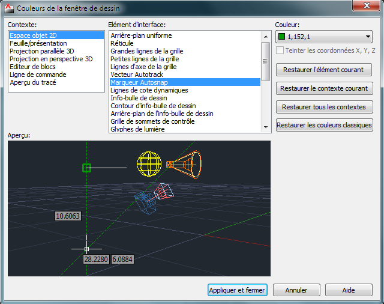
Choisissez "Espace objet 2D" dans la liste de gauche puis "Arrière-plan uniforme" dans la liste de droite. Sélectionnez la couleur de votre choix dans le menu déroulant en haut à droite.
Cliquez sur "Appliquer et fermer" puis dans la boîte de dialogue "Options", cliquez sur "Ok".
Pour ma part, le fond de mon espace objet n'était pas tout à fait noir. J'ai donc choisi la couleur noire dans les paramètres de couleurs, mais vous êtes libre de choisir celle qui vous inspire le plus ! Au pire, vous savez comment la changer maintenant ! ^^
Opter pour l'affichage de la barre de menus
Vous pouvez choisir d'afficher ou non la barre de menus en cliquant sur la petite flèche à côté de l'icône de l'imprimante (en haut dans la barre d'accès rapide).
Choisissez de l'afficher si ce n'est pas déjà fait. Nous allons bientôt en avoir besoin.
Enregistrer les modifications de l'espace de travail
Après toutes ces modifications, il nous faut enregistrer les changements. Allez dans le menu "Outils" puis "Espace de travail" et "Enregistrer l'espace courant sous...".
Choisissez, "Dessin 2D et annotation" puis "Enregistrer". Confirmez en cliquant sur "Remplacer".
Voilà, vous venez d'enregistrer votre propre espace de dessin en 2D. Vous pouvez le réutiliser à volonté en le sélectionnant dans la barre d'accès rapide.
Ce premier chapitre est terminé ! J'espère qu'il vous à mis l'eau à la bouche pour la suite car nous allons voir maintenant les différents outils que nous propose AutoCAD et apprendre à nous en servir. Préparez-vous psychologiquement car il va falloir retenir beaucoup d'informations dans le chapitre suivant. Je préfère vous avertir tout de suite.
Il existe 3 grandes catégories d'outils dans AutoCAD.
Nous avons :
Les outils pour dessiner.
Les outils pour manipuler.
Les outils pour transformer.
Je vais donc vous apprendre à les reconnaître et je vais vous montrer comment vous en servir.
Je vais vous parler aussi de la grille, de la saisie dynamique et de la sélection. La saisie dynamique est une fonction très utile qui va nous permettre de nous concentrer sur la zone de dessin tout en tapant des informations.
Ce chapitre est sûrement l'un des plus intéressants de ce tutoriel, mais aussi l'un des plus importants. Vous allez apprendre à vous servir des principaux outils de dessin et de précision d'AutoCAD. Lorsque vous aurez terminé cette partie, vous serez capable de dessiner n'importe quoi en 2D et avec n'importe quel outil (ou presque). C'est une étape indispensable avant de passer à la 3D.
Soyez donc attentif et redoublez de vigilance, c'est primordial pour la suite du cours. Il y a énormément d'informations à retenir dans ce chapitre. J'essayerai de ne pas être trop méchant avec vous. :diable:
Afin de dessiner encore plus efficacement, vous avez la possibilité de paramétrer et d'activer une grille rectangulaire dans votre espace objet. Cette grille est un outil d'aide au dessin et vous permet de dessiner plus précisément. Vous avez la possibilité de régler l'espacement, l'alignement, les limites et le style d'affichage de la grille.
Nous allons ouvrir la boîte de dialogue contenant les informations de paramétrage de la grille à l'aide de la commande :
'_dsettings
Rendez-vous dans l'onglet "Accrochage/Grille" puis configurez la grille comme dans l'exemple ci-dessus puis cliquez sur "Ok". L'accrochage va permettre de spécifier la manière dont le curseur doit s'accrocher à la grille en fonction des axes X et Y. La précision jouera en fonction des valeurs d'espacements que vous indiquerez. La grille est maintenant affichée dans l'espace objet !
Vous avez la possibilité de personnaliser entièrement votre grille. Vous pouvez régler l'espacement des lignes de la grille sur les axes X et Y dans la zone "Style de la grille". La configuration actuelle permet d'afficher des carrés de 10 par 10. Une grande ligne sera également tracée tous les 5 carrés (c'est-à-dire toutes les 50 unités).
Les valeurs de l'accrochage se trouvent dans la zone "Espacement de l'accrochage". Ici, les paramètres sont identiques au quadrillage de notre grille ! Cela signifie que l'accrochage s'effectuera entre chaque carreau. N'hésitez pas à modifier ces paramètres pour voir la différence.
Vous avez également la possibilité d'afficher la grille sans l'accrochage et inversement ! Pour basculer sur le mode d'accrochage de la grille, pressez la touche F9. Vous pourrez ainsi activer ou désactiver le mode d'accrochage. Si vous souhaitez afficher ou masquer la grille, appuyez sur F7. Si les raccourcis clavier ne vous aiment pas, vous pouvez faire tout cela grâce aux boutons présents sous la ligne de commande :
. Le bouton de gauche permet d'activer l'accrochage et celui de droite permet d'activer l'affichage de la grille. Vous devrez peut-être zoomer un peu vers l'avant pour vous rendre compte de l'accrochage du curseur à la grille. je vous rappelle qu'ici notre grille est configurée avec un écartement de 10x10.
Récapitulons :
Pour accrocher le curseur à la grille, utilisez F9 ou le bouton de gauche.
Pour afficher ou masquer la grille, utilisez F7 ou le bouton de droite.
Vous n'êtes pas obligé d'afficher la grille sous forme de "grille" ! o_O Oui, en fait la grille peut aussi s'afficher sous forme de points. Dans la boîte de dialogue "paramètres de dessin", sous la zone "Espacement de la grille", cochez la case "Espace objet 2D". La grille sera affichée sous forme de point dans cet espace. Si vous souhaitez également l'afficher sous cette forme dans l'éditeur de blocs ou dans les espaces de présentation, il suffit de cocher les cases adéquates.
Nous allons enfin apprendre à nous servir des outils de dessin ! Ces outils se situent dans l'onglet "Début" du ruban. Pour afficher tous les outils, cliquez sur "Dessin" de l'onglet "Début".
Avant de commencer, voici un petit récapitulatif des principaux outils et de leur rôle :
Ligne : Sert à tracer des lignes les unes à la suite des autres. Chaque ligne est un objet unique.
Polyligne : Trace des lignes les unes à la suite des autres. Toutes les lignes tracées forment un seul et même objet.
Cercle : Trace des cercles par rapport à un rayon ou un diamètre.
Ellipse : Trace des ellipses par rapport à deux demi-longueurs.
Arc : Trace des arcs de cercle par rapport à un centre ou plusieurs points.
Rectangle : Permet de tracer des rectangles fermés. Toutes les lignes du rectangle forment un objet unique.
Polygone : Trace des polygones par rapport à plusieurs paramètres (Nb d'arrêtes, longueur...). Toutes les lignes du polygone forment un objet unique.
Spline : Permet de tracer des courbes par rapport à des points. Toutes les courbes tracées forment un objet unique.
Anneau : Trace deux cercles concentriques de rayons différents et remplit la surface périmétrique entre les deux cercles pour former un anneau ! :-°
Nuage de révision : Crée un nuage de révision. Sert à entourer une zone modifiée dans un plan d'étude pour la situer. Généralement utilisé dans l'industrie pour indiquer des modifications sur des plans.
Hélice : Trace des spirales en 2D ou des ressorts en 3D.
Hachure : Permet de créer des hachures en fonction d'un motif et d'une zone prédéfinie.
Gradient : Remplit une zone prédéfinie avec un dégradé de couleurs ou une couleur unique.
Tracer des lignes et des polylignes
L'outil dont on se sert le plus souvent est l'outil "Ligne" ! Voici son mode d'utilisation :
Cliquez sur l'outil "Ligne"
.
Placez-vous dans l'espace objet puis cliquez une nouvelle fois pour accrocher la ligne.
Déplacez le curseur pour former une ligne et cliquez pour la terminer.
Appuyez sur la touche Echap pour quitter votre outil.
Si vous souhaitez créer un seul et même objet (nous verrons plus tard dans quel cas en créer un !), utilisez l'outil "Polyligne"
. Son utilisation est sensiblement la même que pour l'outil "Ligne".
Nous venons de voir comment tracer nos premières lignes, mais nous ne savons pas encore comment être précis lors de "l'accrochage" de ces lignes sur d'autres objets. Sachez qu'AutoCAD possède une fonction qui permet d'être très précis quant à l'accrochage des objets entre eux.
L'aide au dessin
Vous avez certainement dû remarquer des petites figures géométriques de couleur orange apparaître au passage de la souris sur certaines parties de vos objets ? Et peut-être avez-vous remarqué aussi que le curseur était comme attiré par ces figures lorsqu'il s'en approchait ? Et bien ces figures orange font partie intégrante de l'aide au dessin d'AutoCAD. On les appelle les marqueurs AutoSnap. Ils permettent de nous faciliter grandement la tâche lors de la conception de dessins complexes. Chaque figure (ou symbole) correspond à une situation géométrique. Par exemple, les carrés orange indiquent les extrémités des objets, les triangles indiquent le milieu et ainsi de suite. Pour paramétrer le système d'aide au dessin, nous devons ouvrir la boîte de dialogue adéquate. Voici la commande à saisir :
'_dsettings
Rendez-vous directement dans l'onglet "Accrochage aux objets" puis configurez l'aide comme ci-dessous :
Notez que vous pouvez visualiser le symbole correspondant au repérage dont vous souhaitez disposer lors de la conception d'un dessin. Voici un petit tableau récapitulatif des différents symboles et leur fonction.
Extrémité
Permet l'accrochage à l'extrémité la plus proche d'un objet.
Milieu
Permet l'accrochage au milieu d'un objet.
Centre
Permet l'accrochage au point central d'un arc, d'un cercle ou d'une ellipse.
Nodal
Permet l'accrochage à un point d'origine d'un texte de cote, à un objet point ou à un point de définition de cote.
Quadrant
Permet l'accrochage au point quadrant d'un cercle, d'une ellipse ou d'un arc.
Intersection
Permet l'accrochage au point d'intersection d'un objet.
Extension
Permet d'afficher une ligne d'attache temporaire afin de pouvoir préciser des points sur une future extension.
Insertion
Permet l'accrochage au point d'insertion d'un bloc ou d'un texte.
Perpendiculaire
Permet l'accrochage au point perpendiculaire d'un objet.
Tangente
Permet l'accrochage au point de tangence d'un arc, d'un cercle ou d'une ellipse.
Proche
Permet l'accrochage au point le plus proche d'un objet.
Intersection projetée
Permet l'accrochage à un point d'intersection visuel de 2 objets, mais qui ne se trouvent pas sur le même plan (3D).
Parallèle
Permet de contraindre un segment de ligne ou de polyligne à être parallèle à un autre objet de la même catégorie.
Vous pouvez à tout moment désactiver l'accrochage aux objets à l'aide du bouton
qui est présent juste en-dessous de la ligne de commande.
Tracer des cercles et des ellipses
Le deuxième outil le plus utilisé : l'outil "Cercle".
Cliquez sur l'outil "Cercle"
;
Placez-vous dans l'espace objet puis cliquez une nouvelle fois pour indiquer le centre du cercle.
Déplacez le curseur pour former le cercle et cliquez pour le terminer.
Appuyez sur la touche Echap.
Pour le tracé d'une ellipse, ça se complique (un peu).
Cliquez sur l'outil "Ellipse"
.
Placez-vous dans l'espace objet puis cliquez une nouvelle fois pour indiquer le centre de l'ellipse.
Déplacez le curseur horizontalement pour former la demi-largeur de l'ellipse, cliquez une fois puis déplacez le curseur verticalement. Recliquez pour terminer l'ellipse.
Tracer des arcs et des splines
Ces deux outils vont nous servir à tracer des courbes. Leur utilisation est un peu plus complexe que précédemment.
Cliquez sur l'outil "Arc"
.
Placez-vous dans l'espace objet puis cliquez à trois endroits différents pour créer l'arc.
À côté de certains outils, on peut remarquer une petite flèche dirigée vers le bas. Pour ceux qui ne l'auraient pas vu, c'est un menu de sélection de méthodes de traçage propre à l'outil. Prenons l'exemple de l'arc :
Dans ce menu, vous pouvez sélectionner une méthode de traçage qui sera la plus adaptée en fonction du contexte. La méthode 3 points est la méthode par défaut, mais vous pouvez choisir une tout autre méthode ! Comme, par exemple, la méthode "départ, centre, fin".
Cliquez sur le menu de l'outil "Arc" et choisissez "départ, centre, fin".
Placez-vous dans l'espace objet puis cliquez pour indiquer le départ de l'arc.
Cliquez pour indiquer le centre de l'arc (c-à-d. le point de départ du rayon).
Cliquez une dernière fois pour indiquer la position de l'extrémité opposée de l'arc (la fin).
C'est une autre façon de faire (propre à certaines situations) ! Il n'y a pas de meilleures méthodes. Il faut juste s'adapter à la situation en se posant la question : "Quelle est la méthode la plus pratique face à cette situation ?".
Pour créer des splines c'est un peu moins barbare ! Il existe seulement 2 méthodes d'édition. L'outil "Spline" créé des courbes que l'on nomme : NURBS. L'avantage de ces courbes est qu'elles facilitent l'approximation de formes complexes tout en gardant une représentation harmonieuse de leur géométrie. Elles sont peu utilisées en dessin industriel, mais plus en modélisation artistique. J'ai décidé de vous montrer cet outil malgré tout, car je trouve qu'il est d'une utilisation assez sympathique ! :p
Cliquez sur l'outil "Spline"
.
Placez-vous dans l'espace objet puis cliquez à plusieurs endroits différents pour former une spline.
Une fois terminé, appuyez sur Entrée.
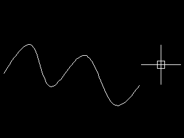
Voici notre première spline. Sélectionnez-la et observez ce qu'il se passe. On peut voir apparaître des poignées bleues et une petite flèche de couleur bleue également. Tout d'abord, les poignées bleues représentent les points sur lesquels vous avez cliqué ! Vous avez la possibilité de les déplacer pour modifier la géométrie de votre spline et vous avez également la possibilité de les supprimer ou d'en créer d'autres.
Pour modifier la géométrie de votre spline, il suffit de positionner le curseur sur une poignée bleue puis de sélectionner un choix dans le menu qui s'affiche à l'aide des flèches directionnelles du clavier (haut et bas).
Enfin, la petite flèche bleue est un menu déroulant propre à l'objet. Si on clique dessus, on s'aperçoit qu'il nous permet de basculer entre deux modes d'éditions différents :
L'édition par affichage des points de lissage (par défaut).
L'édition par affichage des sommets de contrôle.
Choisissons l'édition par affichage des sommets de contrôle.
L'édition par sommets de contrôle est une autre méthode de modification de l'objet. À vous de choisir celle qui vous convient le mieux.
Tracer des rectangles et des polygones
Le traçage de rectangles et de polygones est simplifié grâce à ces 2 outils ! Ce sont des outils qui créent une série de lignes sous forme de polyligne :
1 polyligne de 4 lignes pour les rectangles.
1 polyligne de 3 lignes ou plus pour un polygone.
Commençons par tracer une forme rectangulaire :
Cliquez sur l'outil "Rectangle"
.
Cliquez dans l'espace objet pour indiquer le premier coin du rectangle.
Déplacez la souris puis cliquez une seconde fois pour indiquer le deuxième coin du rectangle.
Vous venez de tracer un rectangle en 2 clics ! Maintenant, nous allons tracer ce rectangle d'une manière un peu plus précise. Nous allons lui indiquer une longueur et une largeur :
Cliquez sur l'outil "Rectangle".
Cliquez dans l'espace objet pour indiquer le premier coin du rectangle.
Appuyez sur la flèche directionnelle bas du clavier jusqu'à sélectionner "Cotes".
Appuyez sur Entrée puis indiquez une longueur de rectangle de 100 unités et refaites Entrée.
Indiquez maintenant une largeur de 50 unités puis appuyez sur Entrée.
Faites un clic gauche pour terminer le rectangle.
Vous pouvez vérifier par vous-même ! Vous venez de tracer un rectangle de 100 unités de long par 50 unités de large.
Avec l'outil "Polygone", vous pouvez tracer un triangle équilatéral, un carré ou un polygone supérieur à 4 faces. Pour cela, il faut préciser le nombre de côtés que l'on souhaite avoir dans notre figure.
Cliquer sur l'outil "Polygone"
.
Spécifiez le nombre de côtés que possédera votre polygone (moi, j'ai mis 8 !) puis appuyez sur Entrée.
Cliquez pour positionner le centre de votre polygone puis choisissez l'option "Inscrit dans un cercle".
Déplacez votre souris vers la droite puis cliquez pour terminer la figure. (Vous pouvez également taper une longueur avant le dernier clic pour être plus précis !). ;)
Tout à l'heure on a choisi l'option "Inscrit dans un cercle" ! Peux-tu développer un peu ?
Je vais vous détailler ces 2 options de traçage. L'option "Inscrit dans un cercle" nous indique que la totalité du polygone sera dessinée à l'intérieur d'un cercle imaginaire dont on aura spécifié ou non son rayon ! Voici un petit exemple de polygone ayant été tracé dans un cercle :
Pour l'option "Circonscrit autour d'un cercle", c'est le contraire. Le polygone sera cette fois-ci dessiné autour du cercle imaginaire.
Dans tous les cas, vous devrez indiquer le nombre de côtés du polygone et le rayon du cercle imaginaire !
Remplir des zones avec les hachures et les gradients
Nous allons remplir nos figures géométriques avec des hachures et des gradients. Un gradient c'est le remplissage d'une zone avec une ou plusieurs couleurs en dégradé. Pour les hachures, le remplissage s'effectue à l'aide d'un motif.
Dessinez un carré. Vous devez en être capable, n'est-ce pas ? :pirate:
Sélectionnez l'outil "Hachure"
. Le ruban change et affiche l'onglet "Création de hachures".
Indiquez les mêmes paramètres que sur l'image ci-dessous.
Placez le curseur de la souris à l'intérieur de votre carré puis cliquez.
Appuyez sur la touche Echap pour terminer.
L'onglet "Création de hachures" offre plusieurs paramètres permettant de modifier le style des hachures. On pourra ainsi modifier le motif, l'échelle du motif, sa couleur, sa transparence ou son inclinaison. Voici ce que ça donne pour mon carré :
L'outil "Gradient" s'utilise de la même manière. Seul l'onglet "Création de hachures" change un peu.
Dans cet onglet vous pouvez choisir le style de dégradé, les couleurs, l'inclinaison, le type de remplissage (solide ou dégradé), la transparence ou la teinte dominante.
Sélectionnez les hachures précédemment créées puis appuyez sur la touche Suppr pour les supprimer.
Cliquez sur l'outil "Gradient"
.
Placez le curseur dans le carré puis cliquez et appuyez sur Echap.
Voilà pour les outils de dessin. C'était la plus grosse partie du chapitre ! :-° Nous allons passer à la manipulation de nos figures. Vous serez capable après ça de déplacer, tourner et positionner tous vos objets.
Tracer des nuages de révision, des anneaux et des hélices
Voici des outils que je classe dans la catégorie des "outils bizarres" ! Bien qu'ils ne le soient pas et conservent bien entendu toute leur utilité. Commençons par tracer un nuage de révision. Dans l'industrie, cet outil est utilisé pour entourer les zones de dessin sur les plans ayant subi une ou plusieurs modifications. Cela permet à l'atelier de fabrication qui suit le plan de mieux localiser les zones ayant été transformées !
Cliquez sur l'outil "Nuage de révision"
.
Cliquez pour spécifier le point de départ du nuage.
Décrivez un cercle avec la souris en rejoignant le point de départ.
Le traçage des anneaux trouve son utilité lors de la conception d'un circuit électronique, par exemple. C'est un outil qui dessine deux cercles concentriques de diamètres différents et remplit la zone entre ces deux cercles. Au lieu d'utiliser l'outil "Cercle" et "Gradient" pour tracer à chaque fois 2 cercles de diamètres différents et remplir la zone périphérique entre les 2 cercles, utilisez l'outil "Anneau" qui fait tout cela d'un seul coup. Vous gagnerez beaucoup plus de temps.
Cliquez sur l'outil "Anneau"
.
Indiquez le diamètre interne de l'anneau puis validez avec Entrée.
Indiquez le diamètre externe de l'anneau et faites une nouvelle fois Entrée.
Cliquez autant de fois que vous souhaitez créer d'anneaux puis appuyez sur Echap. Ne cliquez pas au même endroit sinon les anneaux vont se superposer !
À vous de rajouter les chemins qui traceront votre circuit !
Venons-en aux Hélices. Cet outil est principalement utilisé dans la conception de ressorts ! il peut représenter des spirales en 2D mais aussi des ressorts en 3D. Pour faire cela, on doit spécifier 3 paramètres :
1 rayon de départ.
1 rayon d'arrivée.
1 hauteur (dans le cas d'un ressort en 3D).
Pour notre spirale en 2D, nous indiquerons évidemment une hauteur de zéro !
Cliquez sur l'outil "Hélice"
.
Cliquez pour accrocher le premier point puis indiquez un rayon de base et appuyez sur Entrée.
Déplacez votre souris dans la direction de votre choix puis indiquer un rayon 2 fois supérieur au premier et validez.
Spécifiez une hauteur de 0 et validez.
Cette méthode est précise, mais rien ne vous empêche de dessiner votre spirale au pif, avec de simples clics de souris ! Attention néanmoins au paramètre de hauteur si vous souhaitez que votre spirale soit en 2D. Il est en effet préférable dans ce cas de toujours spécifier 0 pour la hauteur.
Dans AutoCad, il existe 3 types de sélection d'objets :
La sélection par clic : Il suffit de cliquer sur les objets pour les sélectionner.
La sélection par zone : Tous les objets qui se trouvent entièrement dans cette zone sont sélectionnés.
La sélection par zone étendue : Tous les objets qui se trouvent dans cette zone ou qui sont coupés par cette zone sont sélectionnés.
Nous n'allons pas décrire la sélection par clic, je pense que tout le monde a compris ! :lol: Par contre, nous allons voir les deux autres modes.
La sélection par zone
La sélection par zone s'applique en cliquant dans l'espace objet et en déplaçant le curseur vers la droite.
Vous remarquerez que le cadre de sélection possède une ligne de contour blanche continue et un remplissage bleu transparent ! C'est le mode de sélection par zone. Dans cette figure, seule la ligne 2 sera sélectionnée.
La sélection par zone étendue
La sélection par zone étendue s'applique en cliquant dans l'espace objet et en déplaçant le curseur vers la gauche.
Cette fois-ci, le cadre de sélection possède une ligne de contour blanche discontinue et un remplissage vert transparent ! C'est le mode de sélection par zone étendue. Ici, les lignes 1 et 2 seront sélectionnées.
Comme je l'ai évoqué dans l'introduction, la saisie dynamique affiche un système d'entrée de commandes près du curseur qui vous aide à vous concentrer sur votre zone de dessin ! Voici un exemple :
Vous pouvez à tout moment choisir d'activer ou non la saisie dynamique. Dans l'exemple ci-dessus, vous pouvez entrer la longueur de la ligne, l'angle ou tout simplement annuler en appuyant sur la touche Echap. Afin de basculer entre le paramètre de longueur et celui de l'angle, utilisez la touche Tab.
La saisie dynamique permet également d'afficher les informations géométriques de vos objets de dessin. Il suffit pour cela de cliquer sur un des objets de la scène pour le sélectionner et de placer le curseur sur une des poignées carrées présentes aux extrémités.
Maintenant que la saisie dynamique n'a plus de secrets pour vous, activez-la ou désactivez-la à l'aide de ce bouton :
. Il est situé juste en dessous de la ligne de commande, avec tout un tas d'autres boutons que nous apprendrons par la suite ! :)
Vous venez de faire un grand pas en avant concernant l'utilisation des outils d'AutoCAD ! N'hésitez pas à relire ce chapitre plusieurs fois si c'est nécessaire. Le fait de maîtriser l'utilisation de ces outils va grandement vous aider pour la suite du cours.
Voici venu le temps d'une petite récréation. Après ce gros chapitre sur les principaux outils d'AutoCAD, j'ai pensé qu'une petite pause vous ferait le plus grand bien. Attention toutefois à ne pas négliger ce chapitre qui sera entièrement consacré aux calques ! Nous aborderons les thèmes de concept des calques jusqu'à leur utilisation dans les moindres détails.
On peut assimiler les calques sous AutoCad comme l'équivalent de nos bonnes vieilles feuilles transparentes que l'on utilise pour faire des dessins sur du papier ! Imaginez plusieurs feuilles de papier calque superposées les unes sur les autres. Sous AutoCad, c'est un peu la même chose à la différence près que l'on ne peut pas toucher ces feuilles physiquement parlant.
Les calques sont d'une grande utilité lors de la conception de dessins complexes. Ils permettent la séparation des divers éléments qui composent le dessin. On pourra ainsi séparer les textes, la cotation, les principaux objets géométriques, les repères, etc.
Grâce aux calques, vous pourrez :
Afficher ou masquer des objets.
Définir un type de ligne, une épaisseur et sa couleur.
Permettre ou non la modification des objets du calque.
Permettre ou non aux objets d'être imprimés.
Donner un nom thématique à chaque calque créé.
En règle générale, il est recommandé et même indispensable de créer plusieurs calques plutôt que de tout dessiner sur 1 seul et même calque.
Vous avez certainement déjà vu la zone de l'interface où se situent les calques. Les calques se trouvent sur le ruban, mais je vous donne un exemple au cas où :
On peut apercevoir le calque 0 précédé par une ampoule, un soleil, un cadenas et sa couleur. Cela signifie que nous nous trouvons dans ce calque. Tous les objets que vous dessinerez feront partie de ce calque. Comme nous ne souhaitons pas tout dessiner dans le même calque, nous allons en créer un autre. Pour cela nous avons besoin du gestionnaire de propriétés des calques. Tapez cette commande pour l'ouvrir :
_layer
Tous les calques que vous créez sont enregistrés dans ce gestionnaire. Dans le cas où vous souhaiteriez modifier les caractéristiques d'un calque, c'est par ici que vous devrez passer. Créons ensemble notre premier calque :
Dans le gestionnaire des propriétés des calques, cliquez sur ce bouton :
.
Une nouvelle ligne apparaît. Donnez un nom au nouveau calque, par exemple : "Construction".
Vous venez de créer votre premier calque ! Vous disposez donc de 2 calques : le calque 0 et le calque "Construction". Vous allez apprendre dans la partie suivante à paramétrer votre nouveau calque afin de lui attribuer d'autres propriétés que le calque par défaut.
Chaque calque possède plusieurs paramètres qui influent sur l'état des objets qui s'y rattachent. Nous pourrons principalement attribuer un type de ligne, une épaisseur de ligne et une couleur de ligne. Commencez par donner une couleur à votre calque "Construction".
Attribuer une couleur aux lignes du calque
Allez dans le gestionnaire des propriétés des calques.
Sur la ligne du calque "Construction", dans la colonne "couleur", cliquez sur le petit carré blanc.
Une boîte de dialogue s'ouvre. Sélectionnez une couleur (vert par exemple) puis validez.
Désormais, toutes les lignes qui seront dessinées dans ce calque seront de couleur verte.
Donner une épaisseur aux lignes du calque
Donner une épaisseur aux lignes d'un calque permet par la suite de différencier les traits forts des traits fins (utilisés en dessin industriel) lors du traçage. Les traits de construction doivent être plus épais que les traits masqués, les axes ou les traits fantômes.
Les traits fantômes, qu'est-ce que c'est ? o_O
En dessin industriel, les traits fantômes sont utilisés pour symboliser un environnement existant sur un plan papier. On les utilise pour marquer "l'existant", c'est-à-dire, ce qui existe autour de la pièce à fabriquer. Si vous souhaitez connaître les différents types de ligne et leur utilisation, vous pouvez vous reporter à l'annexe sur les conventions du dessin industriel.
Sur la ligne du calque "Construction", dans la colonne "épaisseur de ligne", cliquez sur le trait noir.
Une boîte de dialogue s'ouvre. Sélectionnez une épaisseur (0.25 par exemple) puis validez.
Tous les traits appartenant à ce calque auront une épaisseur de 0.25 millimètre.
Attribuer un type de ligne au calque
Les types de ligne représentent les objets de dessin sous forme de pointillés, zigzags et autres formes de lignes discontinues. En effet, les traits masqués doivent être représentés sous forme de tirets, les axes quant à eux doivent avoir une forme de ligne discontinue représentée alternativement par un tiret long puis un tiret court. Malheureusement, AutoCAD ne fait pas tout ! Avant d'attribuer un type de ligne à un calque (autre que la ligne continue), il va falloir le charger ! Mais d'abord, créez un nouveau calque nommé : "Axes" puis donnez-lui une couleur rouge et une épaisseur de 0.15mm.
Dans le calque "Axes", dans la colonne "Type de ligne", cliquez sur le trait noir.
Dans la boîte de dialogue qui s'ouvre, cliquez sur "Charger".
Choisissez le type "AXES" dans la liste puis validez.
Sélectionnez la ligne "AXES" dans la boîte de dialogue puis validez.
Voici un petit exemple d'attribution ! À gauche, on sélectionne le type de ligne pour le charger et à droite on sélectionne le type de ligne chargé pour l'attribuer au calque :
Vous venez de créer un calque pour dessiner vos axes. Tous vos traits d'axes auront les caractéristiques que vous avez indiquées précédemment. Ils seront rouges avec le type de ligne spécifié.
Le gel et la libération ou l'activation et la désactivation
Un calque possède plusieurs états que vous pouvez modifier à souhait. On peut masquer les objets d'un calque en le désactivant ou en le gelant. Le gel et la libération d'un calque (le dégel) prennent un peu plus de temps que l'activation ou la désactivation, car cela entraîne dans certains cas la régénération du dessin.
Il y a pour ainsi dire peu de différences entre le gel d'un calque et sa désactivation au niveau du temps de régénération du dessin, mais si cela peut vous aider à choisir une des deux méthodes, sachez que je n'utilise que le gel et la libération. Si vous souhaitez désactiver un calque, cliquez sur l'ampoule dans la liste des calques présente dans le ruban. Si vous préférez geler un calque, cliquez sur le soleil et vous le verrez se transformer en flocon de neige. Voyez sur l'exemple ci-dessous :
Le verrouillage et le déverrouillage
Parlons du petit cadenas présent dans cette liste. C'est un outil pratique qui permet de verrouiller un calque. Cela veut dire que tous les objets présents dans le calque ne pourront pas être modifiés tant que celui-ci sera verrouillé. On l'utilise principalement par sécurité, afin qu'une série d'objets ne puisse pas être modifiée accidentellement.
L'activation et la désactivation de l'impression
On peut contraindre un calque à ne pas être pris en compte lors de l'impression. Pour cela il faut ouvrir le gestionnaire des paramètres des calques et cliquer sur la petite imprimante dans la colonne "Tracer" du calque que vous ne souhaitez pas imprimer.
Cette méthode s'utilise pour garder certains objets à l'écran mais pour ne pas les imprimer sur les plans de présentation. Imaginons que vous ayez besoin de garder certaines informations comme des textes ou des points de repères dans votre fichier dessin mais que vous ne souhaitiez pas les rendre visibles dans le plan final. Cette méthode est faite pour ça.
Nous allons mettre en pratique tout ce que nous avons vu ici. Vous allez représenter un cylindre en 2D d'une longueur de 500 unités et d'un diamètre de 50 unités. Il faudra que l'on voit ce cylindre de profil et de face. Vous devrez donc créer 2 objets et les aligner l'un avec l'autre. Les axes devront également être dessinés sur les 2 vues (un axe passe par le centre de la pièce). Le cylindre sera placé sous le calque "Construction" et les axes sous le calque "Axes" ! Je vous donne 3 minutes, c'est parti !
Vous en avez mis du temps ! :p
Normalement, votre dessin devrait se rapprocher de ceci :
Je vais vous détailler ma méthode ! Si le dessin de votre cylindre sur les 2 vues est vert et vos axes rouges, c'est le principal. Dans le cas contraire, je vous conseille de relire plusieurs fois ce chapitre si c'est nécessaire.
Je clique avant tout sur le calque "Construction" dans la liste des calques pour le définir en tant que calque courant.
Je dessine mon cylindre de profil, puis je dessine mon cylindre de face.
Je choisis maintenant le calque des axes.
Enfin, je dessine mes axes.
Voilà pour les calques, la récréation est terminée. Place à la cotation de vos créations !
Après ça, vous vous rendrez certainement compte que les calques deviennent indispensables pour des projets plus ambitieux. Vous pouvez dessiner votre chambre grandeur nature en vue de dessus par exemple puis créer un calque porte, un calque fenêtre, un calque lit et ainsi de suite ! En gelant ou en libérant vos calques puis en déplaçant votre mobilier, vous pourrez peut-être trouver une nouvelle disposition pour les meubles de votre chambre, qui sait ! ;)
Je vais vous parler ici des annotations dans les dessins. Après cela vous serez capables de créer des textes, placer des cotes, créer des lignes de repères multiples et des tableaux. Vous apprendrez également comment ajouter des commandes dans les onglets du ruban. ;)
La cotation permet d'indiquer au lecteur d'un plan les dimensions des éléments de la pièce représentée. Vous l'aurez certainement deviné, mais sans cette cotation on ne peut fabriquer une pièce exactement à l'identique du plan.
Le principe
Pour indiquer la dimension d'un objet sur un plan, on représente graphiquement 2 lignes parallèles positionnées de part et d'autre de l'élément que l'on souhaite mesurer et on écrit la longueur de cet élément entre les 2 lignes.
On dispose de plusieurs outils afin d'indiquer au mieux les différentes dimensions de votre conception. À chaque outil correspond un type de cotation. En effet, vous ne pouvez pas indiquer la longueur d'une ligne avec la cotation d'un diamètre par exemple. Voici les principaux outils que vous serez susceptible d'utiliser :
Linéaire : Applique une cote horizontale ou verticale à un élément.
Alignée : Applique une cote en suivant l'alignement d'un objet.
Angulaire : Permet de coter un angle entre 2 objets linéaires.
Longueur d'arc : Permet de coter la longueur d'un segment d'arc.
Rayon : Permet de coter le rayon d'un arc ou d'un cercle.
Diamètre : Permet d'indiquer le diamètre d'un arc ou d'un cercle.
Continuer : Permet de continuer une cotation linéaire ou alignée en fonction d'une cote de base.
Ligne de base : Permet de coter un objet en fonction de l'origine d'une ligne de cote linéaire ou aligné.
Superposée : Effectue une cotation superposée à partir d'un point d'origine. Cette cotation est un peu identique à la cotation en ligne de base, mais elle est également plus lisible. Il faut spécifier néanmoins une origine.
Cote raccourcie : Permet de créer une cote raccourcie pour un cercle ou un arc lorsque sa dimension dépasse le champ de vision d'une présentation.
Ces outils se situent dans l'onglet "Début" du ruban.
Attends une minute ! Où sont les outils "Continuer" et "Ligne de base", je ne les ai pas dans mon menu ?
C'est normal, AutoCAD ne les met pas dans le menu par défaut. Nous allons les ajouter et pour cela je vais vous apprendre une autre commande. Cette commande permet d'ouvrir une boîte de dialogue permettant de configurer l'interface utilisateur ! Je ne vous en ai pas parlé avant pour ne pas trop vous embrouiller, mais maintenant que vous commencez à être bon, je peux vous en parler. :-°
_cui
Tapez cette commande dans la ligne de commande et validez. La boîte de dialogue qui s'ouvre contient 3 cadres principaux. Le premier cadre vous donne accès aux fichiers de personnalisation d'AutoCAD. Le cadre du dessous vous donne la liste de toutes les commandes présentes dans le logiciel et le troisième cadre à droite affiche les propriétés des 2 premiers.
Dans le cadre des fichiers de personnalisation, double cliquez sur "Ruban", double cliquez sur "Onglet" et double cliquez sur "Début - 2D". Ce fichier correspond à l'onglet "Début" de notre ruban actuel. Cliquez sur "Début 2D - Annotation".
Maintenant, dans l'aperçu du panneau, cliquez sur le menu déroulant indiquant la cote "Linéaire". Vous avez désormais accès au contenu du menu dans le cadre des fichiers de personnalisation (à gauche).
Dans la liste des commandes, déroulez la liste "Toutes les commandes uniquement" puis choisissez "Cote" pour n'afficher que ces commandes. Tous les outils concernant la cotation s'affichent. Vous trouverez les outils "Cotation, continuer" et "Cotation, ligne de base" dont nous avons besoin. Faites glisser ces outils dans le cadre du haut, au-dessus de "Superposée", comme sur l'exemple ci-dessous.
Cliquez sur "Ok" pour valider. Retournez dans le ruban puis déroulez le menu des outils de cotation. Les 2 commandes que l'on vient de rajouter doivent s'y trouver. Dans le cas contraire, vous n'avez pas dû faire comme indiqué ci-dessus. Recommencez une fois si c'est nécessaire. Voici ce que vous devriez avoir :
Les outils linéaire, aligné et angulaire.
L'outil "Linéaire" permet de créer des cotes linéaires. C'est-à-dire que la cote sera créée horizontalement ou verticalement entre 2 points donnés. Dans le cas d'un carré, choisissez cet outil puis cliquez dans le coin supérieur gauche du carré puis dans le coin inférieur droit. Vous remarquerez en déplaçant le curseur de haut en bas et de droite à gauche que la cote reste horizontale ou verticale par rapport à ces 2 points.
Je ne vais pas vous faire un dessin car je pense que vous êtes capable de vous débrouiller tout seul maintenant. ;)
Si vous souhaitez aligner cette cote par rapport à ces 2 points, il faudra choisir l'outil "Aligné". La cote sera créée en étant alignée par rapport aux points choisis.
Pour coter un angle, c'est quasiment le même principe à la seule différence que vous ne choisissez pas 2 points mais 2 objets linéaires. Tracez un triangle, choisissez l'outil de cote "Angulaire" puis cliquez sur 2 côtés du triangle. L'angle est calculé automatiquement par rapport à ces deux objets.
Les outils longueur d'arc, rayon et diamètre
Pour bien commencer, je vais vous demander de tracer un arc de cercle à la dimension de votre choix puis un cercle. Ceci étant fait, choisissez l'outil de cote longueur d'arc puis cliquez sur votre arc de cercle.
Voici quelques explications : une cote apparaît avec un drôle de petit symbole en préfixe. Ce un symbole représente la distance parcourue entre les 2 points de l'arc. Le chiffre qui suit juste après ce symbole indique la longueur de l'arc de cercle tracé. On peut donc coter des portions de périmètre sans effort ! Personnellement, je trouve ça particulièrement génial.
Pour les outils "Rayon" et "Diamètre", c'est la même chose. cliquez sur ces outils puis sur votre cercle pour pouvoir indiquer le rayon ou le diamètre du cercle.
Les outils continuer, ligne de base et cote superposée
Ces outils sont particuliers, car ils ont besoin d'une référence de base (sauf pour l'outil superposée). Pour les utiliser, il faut avoir créé une cote au préalable. Cette cote sera notre objet de base. Nous allons commencer par créer cette cote puis choisir l'outil "Continuer".
Voyez ci-dessus. Notre cote de base est représentée en rouge et la cotation continue est créée à chaque clic de souris. C'est un outil vraiment pratique lorsque l'on doit créer une série de cotes les unes à la suite des autres. Une variante à ce type de cote existe, c'est l'outil "Ligne de base". Le principe reste le même. La seule différence est qu'au lieu de continuer la cotation, cet outil permet de se baser sur un seul et même point :
Les cotations superposées sont sensiblement différentes. Elles se basent sur un point d'origine (et non une cote de base) qu'il nous faut définir au préalable. C'est un système de cotation qui mesure la distance perpendiculaire par rapport à ce point d'origine et un objet du dessin. Cela permet d'éviter les erreurs de cotation par rapport au total des distances cumulées.
Rendez-vous dans l'onglet "Vue" puis cliquez sur "Origine"
.
Choisissez le point d'origine (Le point de départ de la cotation).
Retournez dans l'onglet "Début" puis choisissez l'outil "Superposée".
Cliquez sur un point choisi puis répétez l'opération autant de fois que nécessaire à l'aide de la barre d'espace.
Le point d'origine est représenté ici en rouge. Toutes les cotes créées se basent sur ce point.
Oui mais si on veut déplacer ce point, ça va modifier les cotes, non ?
Je la sentais venir celle-là ! :lol: Et bien non ! Ce type de cote se base sur le dernier point d'origine sans pour autant s'occuper des cotes précédemment créées. À chaque fois que vous définissez une origine, la cotation superposée se fera en fonction de ce point.
On utilise généralement les textes sur une seule ligne lorsque le texte écrit ne nécessite pas l'utilisation du second type ! Logique me direz-vous. Les textes sur une ligne représentent un objet unique et peuvent être modifiés indépendamment l'un par rapport à l'autre. Les textes multilignes permettent le retour à la ligne et peuvent contenir plusieurs paragraphes.
Pour écrire un texte simple, comme une indication par exemple, nous utiliserons l'outil "Une seule ligne" :
Dans le cas d'une longue explication vous aurez recours à l'autre outil, évidemment.
Les lignes de repère multiple servent à indiquer un endroit précis du dessin. On s'en sert généralement pour indiquer la position d'une partie ou d'une pièce dans le dessin. Cela simplifie grandement sa localisation. Voici l'outil sur lequel vous aurez à cliquer :
Les tableaux d'AutoCAD permettent la réalisation de nomenclatures et autres indicateurs. Une nomenclature est une liste de pièces ou d'éléments qui composent le ou les dessins. Cela peut être aussi une liste de plans mais globalement, cela reste une liste contenant diverses informations comme :
Les références de fabrication.
Les numéros des plans.
Les numéros des repères sur les plans.
Les poids de chaque élément.
Les dates d'édition des plans.
Le traitement des surfaces à appliquer aux pièces.
Les quantités à fabriquer.
Les matières à utiliser.
Bref, les nomenclatures sont un moyen d'indiquer toutes les informations nécessaires à la réalisation d'un projet. Les tableaux d'AutoCAD vont nous aider à atteindre ce but.
L'outil "Table"
Nous allons créer notre premier tableau. Vous allez voir, c'est d'une facilité déconcertante :
Cliquez sur
.
La boîte de dialogue "Insérer un tableau" s'affiche.
Réglez le nombre de lignes et de colonnes que vous souhaitez avoir et cliquez sur "Ok".
Voilà, vous venez de créer votre premier tableau. On va pouvoir le personnaliser un peu.
Personnaliser un tableau
Admettons que mon tableau possède 1 rangée pour le titre, 2 pour les données étalées sur 5 colonnes. Je souhaite remplir la cellule où se trouve le titre de mon tableau. Double-cliquez dans la cellule qui contiendra votre titre et écrivez-le. Pour ma part, j'ai mis "Nomenclature". Cliquez en dehors du tableau. Cliquez dans la cellule du titre pour la sélectionner, faites un clic droit puis choisissez "Remplissage de l'arrière-plan". Voici ce que vous devez avoir :
Choisissez une couleur puis validez. Votre cellule vient d'être remplie par la couleur choisie.
Il est possible d'ajouter ou de supprimer des lignes ou des colonnes sur un tableau existant. Pour cela, cliquez sur une cellule de la ligne ou la colonne à modifier et observez le ruban :
Vous pouvez à partir de ce ruban personnaliser les lignes, les colonnes, le format des cellules, le type de ligne du tableau, fusionner des cellules, aligner du texte, insérer des blocs, insérer des champs, modifier le type de données et créer des formules. Entraînez-vous à réaliser de magnifiques tableaux pour vos futures nomenclatures.
Liaisons de données avec Microsoft Excel
En ce qui concerne la liaison de données avec Excel, il faut que vous partiez du principe que les 2 tableaux liés doivent être identiques. Ce n'est pas totalement vrai à chaque fois, mais pour l'instant je veux juste vous montrer le principe.
Commencez par créer un nouveau document avec Excel. Je pars du principe que vous savez utiliser Excel, bien entendu ! Remplissez les cellules comme ci-dessous :
Enregistrez le fichier sous le nom de "liaison" par exemple puis fermez-le.
Si vous avez bien suivi, nous avons édité 9 cellules. De la cellule A1 à la cellule C3 (soit 3 lignes et 3 colonnes). Dans AutoCAD, vous allez donc créer un tableau de 3 lignes et 3 colonnes puis sélectionner toutes les cellules (sauf celles du titre). Faites un clic droit à l'intérieur de la sélection puis choisissez "Liaison de données...". Dans la boîte de dialogue choisissez "Créer une liaison de données Excel". Donnez un nom à votre liaison puis validez. Une seconde boîte de dialogue s'ouvre :
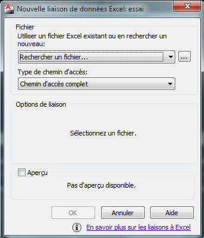
Vous devez indiquer l'emplacement de votre fichier Excel à l'aide du bouton [...]. Ceci étant fait, cliquez sur "Ok". Un aperçu du fichier lié s'affiche :
Vous pouvez laisser les paramètres par défaut. Validez le tout et observez le résultat :
Maintenant, à chaque fois que vous modifierez les données du fichier Excel, tout se mettra à jour automatiquement dans votre tableau AutoCAD. :magicien:
Ce chapitre clôt la première étape de la partie 1 de ce tutoriel. La prochaine étape consistera à assimiler la notion d'échelle. Un petit retour sur les outils de dessin sera nécessaire avant de dessiner une chaise en respectant les règles d'utilisation apprises tout au long du cours. Vous pourrez garder le fichier si la chaise vous plaît et l'imprimer par la suite pour l'envoyer à un atelier de menuiserie qui fabriquera pour vous une série de chaises uniques que vous aurez spécialement conçues.
Dans cette partie, vous apprendrez à mettre des objets de dessin et d'annotation à l'échelle. Mettre un objet à l'échelle permet d'établir une représentation plus appropriée (sur un plan) par rapport à sa taille réelle. Nous verrons comment adapter ces objets en fonction d'une échelle d'origine (échelle des plans) afin de les percevoir au mieux et établir une convention de représentation du dessin.
Préparez-vous, car vous allez passer pour la première fois dans l'espace de présentation ! :)
La mise à l'échelle va nous permettre de créer une convention de représentation des dessins dans le but d'établir des présentations claires et précises en vue de leur traçage. C'est donc un point important à ne pas négliger ! Un plan mal représenté est une source d'erreurs très fréquentes.
Une échelle se calcule à partir des dimensions réelles d'une pièce. Prenons par exemple un cube de 1 mètre par 1 mètre. Si on veut le représenter sur une feuille de papier en grandeur nature (échelle 1:1), il faudrait une très grande feuille pour arriver à ce que l'on souhaite. Une telle pièce peut être représentée sur un format de papier A4 tout en gardant ses proportions. Pour faire cela, nous allons diviser ses dimensions réelles par 10. Sur la feuille de papier, notre cube ne mesurera plus que 10 centimètres par 10 centimètres. En revanche, la cotation inscrite sera de 1 mètre par 1 mètre. Cette méthode est nettement plus économique ! Le cube sera alors représenté à l'échelle 1:10 (prononcez : un dixième). ;)
Sachez qu'à l'inverse, vous pouvez agrandir une pièce. Si vous doublez la taille d'un petit objet, celui-ci sera représenté à l'échelle 2:1 (prononcez : deux un). Les calculs d'échelles sont basés sur des multiples. On calcule ces multiples à partir de l'échelle indiquée. En voici quelques exemples :
Echelles
Calcul des indices
4:1
\frac{4}{1} = 4
2:1
\frac{2}{1} = 2
1:1
\frac{1}{1} = 1
1:5
\frac{1}{5} = 0.2
1:10
\frac{1}{10} = 0.1
Le résultat de cette division vous donne le multiple de l'échelle en question. Il vous suffit de multiplier les dimensions de l'objet à représenter par cet indice.
L'outil "Echelle" permet de multiplier ou de diviser la valeur géométrique d'un ou de plusieurs objets. Cet outil est généralement utilisé pour agrandir un détail géométrique ne pouvant pas être correctement visible sur un plan.
Tracez un carré de 20 unités par 20 unités et cliquez sur l'outil "Echelle"
.
Sélectionnez tout le carré et appuyez sur Entrée.
Cliquez n'importe où dans l'espace objet puis tapez 2 et validez.
Les dimensions de votre carré ont changé ! Le carré ne mesure plus 20 par 20 mais 40 par 40. Ses valeurs géométriques ont été multipliées par 2. On aurait très bien pu réduire ces valeurs de moitié afin que le carré ne fasse plus que 10 par 10. Pour faire cela, il aurait fallu taper 0.5 pour le réduire de moitié ! Toutes les dimensions de vos objets sont multipliées par le nombre que vous tapez. Donc un carré de 20 par 20 multiplié par 0.5 est égal à un carré de 10 par 10.
Nous allons nous rendre dans l'onglet "Présentation1". Mais avant cela, il nous faut un calque pour dessiner nos fenêtres de présentations. Les fenêtres de présentations sont les vues des éléments de l'espace objet dans l'espace de présentation. Vous pouvez en créer autant que vous le souhaitez. Cela permet de structurer différentes vues des pièces de vos dessins. Nous appellerons ce calque : "Fenêtre" et nous lui attribuerons la couleur orange.
Rendez-vous dans l'onglet "Présentation1". Vous remarquez qu'il y a un cadre noir au milieu de la feuille. Sélectionnez-le puis passez-le dans le calque fenêtre. Ceci étant fait, retournez dans l'espace objet et tracez un rectangle.
Maintenant, retournez dans votre espace de présentation. Voici ce que vous devriez avoir :
Le rectangle que vous avez tracé dans l'espace objet apparaît dans la fenêtre de présentation. On en déduit que ces 2 espaces si différents sont en fait intimement liés. :D Si vous ne voyez pas votre rectangle dans la fenêtre, ne paniquez pas. C'est juste que votre rectangle est hors de la zone de la fenêtre. Pour remédier à cela, double-cliquez à l'intérieur de la fenêtre :
La fenêtre se met en surbrillance. Faites un zoom arrière avec la molette de votre souris. Vous devriez retrouver votre rectangle ! Pour revenir à l'état initial, double cliquez à l'extérieur de la fenêtre.
Le fait de double-cliquer dans la fenêtre de présentation vous permet de vous introduire directement dans l'espace objet à partir de l'espace de présentation. Il suffit alors de double-cliquer à l'extérieur de la fenêtre pour retourner dans l'espace de présentation.
Ok, tout ça c'est bien mais comment mettre notre rectangle à l'échelle ?
J'allais y venir. Sélectionnez le cadre de votre fenêtre puis cliquez sur
tout en bas de votre interface à droite :
Choisissez une échelle au pif et observez le résultat. Votre rectangle vient d'être redimensionné automatiquement. Vous venez de mettre votre première présentation à l'échelle. Lors de l'impression, si vous avez choisi l'échelle 1:10 et que votre rectangle a été tracé à 1000 par 500, il mesurera 100 millimètres par 50 une fois imprimé. Je parle en millimètre car nous sommes dans une configuration métrique. Dans ce genre de configuration, toutes les unités principales sont en millimètres par défaut.
Les annotations doivent être mises à l'échelle en fonction de l'échelle générale du plan. Pour que nos textes, cotes et lignes de repères s'adaptent à la bonne dimension sur le papier (suivant l'échelle du plan), nous avons besoin de spécifier plusieurs paramètres précis afin de garder une certaine convention d'écriture sur les plans. Par exemple, que ce soit sur l'échelle 1:10 ou sur l'échelle 1:50, un texte ou une cote doit être lisible et donc avoir la même taille partout. On peut attribuer une taille générale à un texte ou une cote mais lors de la modification de l'échelle du plan, l'échelle de ce texte ou de cette cote va changer en même temps que les objets de dessin.
La solution est de créer une échelle d'annotation pour chaque échelle de plan (que l'on est susceptible d'utiliser). En procédant comme ça, lorsque l'on attribuera une échelle générale à un plan, nous indiquerons en même temps l'échelle d'annotation correspondante. Nous garderons donc la même hauteur de texte et les mêmes caractéristiques pour les cotes et les lignes de repères. Cette méthode va nous permettre de coter notre dessin non plus dans l'espace de présentation mais directement dans l'espace objet.
Style de texte
Partons du principe que nous souhaitons que nos textes classiques mesurent 2,5mm de haut (sur le papier) pour une échelle de 1:10. Nous savons que l'échelle 1:10 divise par 10 les dimensions réelles. Si l'on affecte la valeur de 2,5 au texte et que l'on met le plan à l'échelle 1:10, la valeur du texte va se trouver divisée par 10. On peut donc dire que pour avoir une hauteur de texte de 2,5mm il va falloir multiplier 2,5 par 10 afin de conserver la valeur de texte voulue une fois le plan mis à l'échelle. :-°
Donc, pour une échelle de 1:10, le paramètre de hauteur de mon texte sera de 25. Allez dans le menu "Format" puis choisissez "Style de texte...".
Cliquez sur le bouton "Nouveau" et donnez un nom à votre style qui rappelle l'échelle correspondante au plan :
Ensuite, sélectionnez votre style dans le cadre de gauche puis mettez 25 à la hauteur du texte. Si vous souhaitez définir votre nouveau style comme étant le style par défaut, cliquez sur "Définir courant". Vous pouvez valider en cliquant sur "Appliquer".
On peut maintenant attribuer ce style à un texte dont l'échelle générale du plan sera de 1:10. Maintenant il ne vous reste plus qu'à créer les autres styles pour les échelles 1:1, 1:2, 1:4, 1:8...
Style de cotes
Nous allons faire la même chose avec les styles de cotes. Allez dans le menu "Format" puis choisissez "Style de cotes...".
Cliquez sur le bouton "Nouveau" et donnez un nom à votre style qui rappel l'échelle générale du plan :
Allez dans l'onglet "Texte" puis choisissez le style de texte précédemment créé.
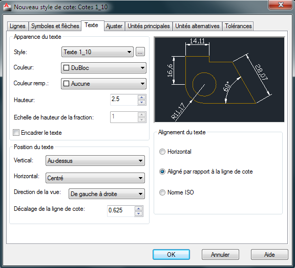
Maintenant, allez dans l'onglet "Ajuster" puis définissez l'échelle générale à 10. Ici, on spécifie l'échelle 10 pour multiplier par 10 la taille des traits et des flèches qui composeront nos cotes. Si vous avez bien suivi, le fait de mettre le plan à l'échelle 1:10 va diviser la dimension de nos annotations par 10. Donc on indique 10 pour les re-multiplier afin que les traits et les flèches des cotes gardent une taille appropriée.
Voilà, comme pour le style de texte, vous pouvez créer les autres styles de cotes correspondants aux échelles des plans.
Style de ligne de repère multiple
Pour la ligne de repère multiple, ça se complique un peu. Nous devons spécifier plusieurs paramètres afin d'arriver à notre but final. Le premier problème que l'on rencontre sur ce genre d'outil, c'est que si on indique une échelle de 10, cela va multiplier notre texte créé auparavant par 10. Hors, notre texte est déjà à l'échelle.
Une ligne de repère possède presque les mêmes particularités qu'une cote (j'ai bien dit : "presque"). Elle peut avoir une flèche, des lignes et du texte. Commençons par créer une nouvelle ligne de repère multiple. Dans le menu "format", cliquez sur "Style de ligne de repère multiple".
Cliquez sur le bouton "Nouveau" puis donnez lui un nom :
Pour uniformiser les lignes de repère avec la cotation, nous allons indiquer les mêmes paramètres que ceux du style de cotes. Bon, je ne vous l'ai pas dit tout à l'heure mais notre style de cotes possède des propriétés de ligne et de flèche. :-°
Voici les paramètres de notre style de cotes :
Taille de la flèche : 2,5.
Dimension de la coupure : 3,75.
Ces paramètres se trouvent dans la boîte de dialogue des styles de cotes, dans l'onglet "Symboles et flèches". Mais attention, ce n'est pas tout ! Il faut multiplier ces paramètres par 10, car si vous vous souvenez bien, nous avons attribué une échelle de cotes à 10 dans l'onglet "Ajuster". Ces 2 valeurs doivent être multipliées avec cet indice. Malheureusement, AutoCAD ne le fait pas pour nous. Nous allons devoir calculer tout ça.
Donc, dans l'onglet "Format de le ligne de repère", nous noterons 25 pour la taille de la pointe de la flèche puis 37,5 pour la coupure de la ligne de repère. Dans l'onglet "Structure de le ligne de repère", nous inscrirons à la distance de la ligne de guidage une valeur de 20 (totalement arbitraire) :
Attention, nous ne touchons pas à l'échelle ici. Enfin, dans l'onglet "Contenu", nous choisirons le style de texte adéquat puis nous définirons (arbitrairement aussi) une valeur de 5 pour l'espace de la ligne de guidage.
Voici quelques explications supplémentaires avant de clôturer ce chapitre. Je vous ai parlé de dimension de coupure. Ce que l'on entend par "coupure", c'est tout simplement une coupure de ligne permettant d'intégrer les cotes et les lignes de repères d'une manière plus fluide dans le dessin. Lorsqu'une ligne de cote croise un élément de dessin, on peut lui ajouter une coupure pour une meilleure visibilité du dessin (la ligne de cote sera "coupée"). Nous avons donc spécifié la longueur de cette coupure.
Concernant la ligne de guidage, nous avons spécifié une longueur de 20. Ce n'est en fait que la longueur de la ligne qui se situe juste avant le texte. Enfin, pour l'espace de la ligne de guidage, c'est la distance qui sépare l'extrémité de la ligne du texte. Maintenant, il faut sauvegarder ce fichier. Avec tout le travail que vous avez fourni, il serait dommage de tout recommencer. Enregistrez ce fichier sous le nom de "Echelles_annotations" par exemple et gardez-le précieusement car vous en aurez besoin plus tard.
Vous voici arrivé au terme de cette leçon. Dans le prochain chapitre, nous allons voir quelques outils complémentaires avant de s'attaquer à votre premier TP. Dans ce TP vous vous servirez de tout ce que vous avez appris depuis le début afin de concevoir pour une grande chaîne de distribution, une nouvelle ligne de chaises super design ! :p
À vos souris car le premier TP approche. Bon courage.
Nous voici dans une seconde partie concernant l'apprentissage des outils de dessin en 2D d'AutoCAD. Je vais vous apprendre cette fois-ci à manipuler et à transformer vos dessins. Ce sont quelques outils complémentaires que je souhaite vous apprendre avant de passer au prochain chapitre : Le TP. :)
Toujours à partir de l'onglet "Début", je vais vous présenter les principaux outils servant à la transformation des objets de dessin. Voici le récapitulatif de ces outils et leur description :
Coupure : Permet de couper une ligne ou une courbe entre 2 points.
Coupure au niveau du point : Permet de couper une ligne ou une courbe à un point donné.
Joindre : Permet de relier deux entités présentes sur le même axe l'une à l'autre.
Prolonger : Permet de prolonger une ligne ou un arc.
Raccourcir : Permet de raccourcir une ligne ou un arc.
Etirer : Permet d'étirer un ou plusieurs objets.
Chanfrein : Permet de créer un raccord anguleux entre 2 lignes.
Raccord : Permet de créer un raccord arrondi entre 2 lignes.
Décomposer : Permet de décomposer une figure en plusieurs objets.
Modifier polyligne : Permet de transformer une série de lignes en polyligne.
Coupures et jointures
Nous pouvons couper un objet à un point donné afin de le diviser en plusieurs parties distinctes. Il existe pour cela 2 principaux outils que je vais vous détailler un peu plus bas. Nous pouvons également joindre plusieurs objets (sous certaines conditions) pour qu'ils n'en forment plus qu'un. Pour couper un objet, on utilise soit l'outil "Coupure" ou soit l'outil "Coupure au niveau du point".
Tracez une ligne horizontale avec l'outil "Ligne".
Cliquez sur l'outil "Coupure"
.
Cliquez pour sélectionner l'objet à transformer puis déplacez le curseur vers le centre de la ligne et cliquez à nouveau.
Notre ligne à été séparée en 2 morceaux différents. La séparation s'effectue à partir du point où vous sélectionnez l'objet jusqu'au deuxième point que vous indiquez. Ce n'est pas très précis, je vous l'accorde, mais cela permet de séparer un objet rapidement.
Maintenant, effectuez la même opération avec l'outil "Coupure au niveau du point"
. Observez bien la différence. Cette fois-ci, la ligne a bien été coupée en deux, mais les morceaux n'ont pas été séparés. Cette méthode est beaucoup plus précise que la précédente. Vous avez la possibilité d'indiquer une coupure sans pour autant séparer les deux entités.
Imaginons un instant que vous vous soyez trompé (ça arrive). Vous pouvez facilement joindre les deux morceaux à condition qu'ils se trouvent sur le même axe. Malheureusement, dans le cas contraire cela ne fonctionne pas. :o
Cliquez sur l'outil "Joindre"
.
Sélectionnez une ligne puis l'autre.
Les 2 morceaux ont été joints et ne forment plus qu'un seul objet. Dans ce cas-là, cet outil nous évite de reconstruire notre ligne initiale. C'est beaucoup plus pratique, croyez-moi !
Prolonger, raccourcir et étirer
Derrière l'outil servant à raccourcir se cache également celui pour prolonger. Il faut juste dérouler son menu. Ces deux outils s'utilisent dans le cas où 2 traits se croisent ou lorsque la direction d'une ligne peut rencontrer un autre objet. Partons sur cet exemple :
Nous souhaitons supprimer la partie de la ligne à l'intérieur du cercle. On pourrait sélectionner la ligne, cliquer sur la poignée se trouvant à l'intérieur du cercle sur l'extrémité de cette ligne puis déplacer le bout jusqu'à la limite périmétrique du cercle. Mais, cela implique beaucoup d'opérations pour finalement pas grand chose. On utilisera donc l'outil "Raccourcir" pour faire ce genre d'opération.
Créez un cercle et une ligne comme sur l'exemple ci-dessus et sélectionnez l'outil "Raccourcir"
.
Appuyez sur Entrée et cliquez sur le morceau de ligne que vous souhaitez voir disparaître.
Appuyez sur Echap.
La partie de la ligne qui était dans le cercle à bien été supprimée ! Sélectionnez la ligne et cliquez sur la poignée touchant le cercle. Réduisez la ligne de sorte qu'elle ne touche plus le cercle et appuyez sur Echap. Nous allons prolonger cette ligne.
Cliquez sur l'outil "Prolonger"
.
Appuyez sur Entrée et cliquez sur le côté de la ligne que vous souhaitez prolonger.
Appuyez sur Echap.
Nous allons voir comment étirer une figure pour la prolonger ou la raccourcir. Pour cela, nous utiliserons un autre outil, mais avant cela, dessinez un carré de 100 unités par 100 unités avec l'outil "Ligne".
Cliquez sur l'outil "Etirer"
.
Sélectionnez la partie droite du carré comme sur l'exemple ci-dessus et cliquez sur un coin du carré pour indiquer le point de base de l'étirement.
Déplacez votre souris vers la droite et tapez "100" puis Entrée.
Notre figure mesure maintenant 200 unités par 100 unités ! Nous l'avons étiré de 100 unités vers la droite. Nous aurions également pu l'étirer vers la gauche (par exemple de 50 unités) afin de la réduire. Ceci fonctionne dans les deux sens bien évidemment.
Chanfrein et raccord
Afin de vous permettre de mieux visualiser ce que sont un chanfrein et un raccord dans AutoCAD, je vous ai préparé une petite illustration rien que pour vous !
Les chanfreins et les raccords sont souvent utilisés dans l'industrie pour arrondir ou "casser" un angle vif. Cela peut éviter de graves blessures dans le cas où l'on se cogne maladroitement dessus. Nous allons créer un carré de 50 unités par 50 unités avec l'outil "Ligne".
Cliquez sur l'outil "Chanfrein"
.
Sélectionnez "Ecart" avec la flèche directionnelle du bas puis tapez 5.
Appuyez 2 fois sur Entrée. Cliquez sur la ligne du haut de votre carré puis sur la ligne de droite.
Nous venons de créer un chanfrein de 5 unités par 5 unités. J'ai rajouté la cotation afin de mieux vous rendre compte du résultat ! Je vous ai dit d'appuyer 2 fois sur Entrée car AutoCAD garde en mémoire la dernière valeur entrée. Vous avez tapé 5 puis Entrée pour valider cette valeur. À ce moment-là, la saisie dynamique vous demande d'entrer "l'écart du chanfrein 2e <5.00>"</gras> ! La deuxième valeur est déjà définie sur 5. Il ne vous reste plus qu'a appuyer sur Entrée pour la valider. Vous auriez pu bien évidemment entrer une autre valeur ! C'est vous qui décidez.
Concernant les raccords, c'est grosso modo la même chose à la différence près qu'il n'y a que la valeur du rayon à taper. Redessinez le même carré puis suivez cette procédure :
Cliquez sur l'outil "Raccord"
.
Sélectionnez "Rayon" avec la flèche directionnelle du bas puis tapez 5.
Appuyez sur Entrée pour valider. Cliquez sur la ligne du haut de votre carré puis sur la ligne de droite.
Décomposer et modifier polyligne
Le fait de décomposer une figure permet de séparer les objets qui la composent afin qu'ils puissent être sélectionnés un par un. Je vais, pour cela, vous demandez de créer un carré (encore :-° ) avec l'outil "Rectangle".
Sélectionnez votre carré.
Cliquez sur l'outil "Décomposer"
.
Vous pouvez sélectionner les lignes de votre carré une par une ! Je vais vous montrer la manière de le recomposer. Pour cela, nous allons devoir convertir les lignes en polyligne et les joindre bout à bout.
Cliquez sur l'outil "Modifier polyligne"
.
Tapez m, appuyez sur Entrée puis sélectionnez tout le carré
Appuyez 2 fois sur Entrée et sélectionner "Joindre".
Appuyez 3 fois sur Entrée pour valider.
Nous avons tapé m pour avoir une sélection d'objets multiples. Dans le cas contraire, nous n'aurions pu sélectionner qu'un seul objet. Ensuite, nous avons appuyé 2 fois sur Entrée. La première fois pour valider le choix de la sélection multiple et la deuxième fois pour valider la conversion des lignes en polylignes. Nous avons ensuite sélectionné "Joindre" afin d'unir toutes les lignes converties en polyligne pour ne former qu'un seul et unique objet.Enfin, nous avons validé la sélection "Joindre", nous avons validé la distance approximative à 0.00 et nous avons appuyé une troisième fois sur Entrée afin de quitter le menu de sélection.
Les outils de manipulation d'AutoCAD se situent dans l'onglet "Début" sur "Modification". Voici les principaux outils de manipulation que je vais vous montrer :
Aligner : Permet d'aligner deux figures l'une par rapport à l'autre.
Copier : Permet de copier des objets.
Déplacer : Permet de déplacer un ou plusieurs objets.
Disposition : Permet de mettre un objet au-dessus ou en dessous d'un autre.
Miroir : Permet de créer rapidement la symétrie d'une figure.
Réseau : Permet de créer un réseau d'objets par rapport à un objet d'origine.
Rotation : Permet de faire pivoter une figure à un angle donné.
Déplacer et aligner des objets
Pour commencer, il va falloir créer 2 objets. Afin d'illustrer au mieux cette méthode, la géométrie de ces 2 objets sera triangulaire. Créez 2 triangles identiques à l'aide de l'outil "Polygone". Voici ce que vous devez avoir :
Sélectionnez le triangle de gauche puis cliquez sur l'outil "Aligner"
.
Choisissez le premier point de votre triangle de base (1) puis sélectionnez un point sur l'autre triangle (2) qui sera collé au premier.
Choisissez le deuxième point sur votre triangle de base (3) et enfin le point sur l'autre triangle (4) qui devra correspondre avec le deuxième point du triangle de base.
Appuyez sur Entrée.
Pour déplacer un ou plusieurs objets, il faut d'abord les sélectionner.
Sélectionnez le triangle de droite puis cliquez sur l'outil "Déplacer".
Cliquez n'importe où dans "l'espace objet" puis décalez votre souris vers la droite.
Cliquez pour terminer.
Voici le résultat du déplacement.
Copie, miroir et réseau
La copie d'objets dans AutoCAD est très efficace ! Il y a plusieurs méthodes. La manière la plus rapide de copier un ou plusieurs objets consiste à faire un classique Ctrl + c et Ctrl + v. Pour ceux qui ne connaissent pas ces raccourcis clavier, il faut sélectionner les objets, appuyer sur les touches Ctrl et C pour copier et coller en appuyant sur Ctrl et V.
L'avantage de cette méthode est qu'elle est très rapide. L'inconvénient est que l'on ne peut pas copier ni coller les objets par rapport à un point précis. Pour faire cela, il nous faut un outil spécifique.
Sélectionnez l'un des triangles de tout à l'heure (ou les deux).
Cliquez sur l'outil "Copier"
.
Spécifiez le point à partir duquel vous souhaitez coller le ou les objets.
Cliquez pour coller autant d'objets copiés que vous souhaitez. Appuyez sur Echap une fois terminé.
Nous allons maintenant effectuer une symétrie ! Une symétrie sous AutoCAD est une sorte de copier/coller, sauf que le collage est réalisé à l'envers. C'est ce collage un peu spécial qui forme la symétrie de l'objet copié.
Effacez tous les triangles pour n'en garder qu'un seul puis sélectionnez-le.
Cliquez sur l'outil "Miroir"
.
Cliquez à droite du triangle et dirigez le curseur vers le bas.
Cliquez et appuyez sur Entrée.
Il arrive parfois (pour ne pas dire souvent !) que l'on ait besoin de créer un alignement d'objets en grand nombre. Cet alignement peut être de nature linéaire ou circulaire. On dit que c'est un réseau d'objets. L'outil "Réseau" permet de faire cette copie linéaire ou circulaire d'objets assez facilement.
Commencez par créer un cercle d'environ 20 unités de rayon et sélectionnez-le.
Cliquez sur l'outil "Réseau"
.
La boîte de dialogue réseau apparaît. Indiquez les mêmes paramètres que sur l'image ci-dessous.
Cliquez sur "Ok".
Décortiquons un peu cette boîte de dialogue. Tout en haut, on peut choisir de créer un réseau rectangulaire (linéaire) ou un réseau polaire (circulaire) par rapport à l'objet sélectionné. Le réseau rectangulaire va permettre de copier l'objet source pour le coller plusieurs fois sous forme de rangées et de colonnes. Le réseau polaire va quant à lui effectuer la même opération, mais sous une forme circulaire.
Pour un réseau rectangulaire, on peut de ce fait indiquer le nombre de rangées et de colonnes dont il disposera. On prendra le soin d'indiquer également la distance de décalage entre les rangées et les colonnes. Vu que mon cercle fait 20 unités de rayon (donc 40 de diamètre), j'indique dans les cases appropriées une valeur de 50. Comme ça je suis sûr que mes cercles ne vont pas se chevaucher. La distance qui séparera le centre d'un cercle jusqu'au centre d'un autre cercle sera de 50 unités !
Le décalage c'est bien, mais la direction de collage est toute aussi importante ! J'ai mis 50 dans la case des rangées mais j'aurais pu mettre -50. La différence c'est qu'avec une valeur négative les cercles auraient été copiés en-dessous de mon cercle d'origine et pas au-dessus ! Idem pour les colonnes. Avec une valeur négative mes colonnes auraient été disposées à gauche de mon cercle d'origine. Voici un petit aperçu de ce que donne notre réseau de cercles :
Le cercle en rouge correspond à mon objet d'origine ! Maintenant effacez tout les cercles, nous allons créer un réseau polaire !
Pour créer un réseau polaire, nous allons devoir créer un cercle de 20 unités de rayon. Sélectionnez votre cercle ! nous allons ouvrir la boîte de dialogue "Réseau".
Cliquez sur l'outil "Réseau" et sélectionnez "Réseau polaire".
La boîte de dialogue change d'apparence.
Cliquez sur
pour choisir le centre du réseau. La distance entre le centre du réseau et votre objet d'origine correspond au rayon sur lequel seront copiés les objets.
Indiquez le nombre total d'éléments (8) et cliquez sur "Ok".
Les cercles se disposent sur 360° à distance égale par rapport au centre spécifié. Plus le centre du réseau sera éloigné de l'objet source et plus le rayon de disposition des objets sera important. Les cercles ont été disposés dans le sens trigonométrique (à l'inverse du sens des aiguilles d'une montre). Ils se situent tous à la gauche de l'objet source. Si on avait voulu les dessiner en partant dans l'autre sens, on aurait indiqué une valeur négative dans l'angle à décrire, soit -360°.
Rotation et disposition
Nous pouvons faire pivoter des objets avec l'outil "Rotation". Effaçons notre scène et créons un rectangle.
Sélectionnez le rectangle et cliquez sur l'outil "Rotation"
.
Spécifiez le point de base de la rotation (J'ai choisi le coin inférieur gauche du rectangle) et déplacez la souris pour faire pivoter le rectangle.
Cliquez pour terminer. Vous pouvez aussi indiquer une valeur d'angle et appuyer sur Entrée pour faire pivoter le rectangle avec précision au lieu de cliquer.
La disposition des objets dans la scène sert à positionner ces objets les uns devant les autres. Cliquez sur le menu de l'outil "Disposition"
.
Remarquez qu'il y a plusieurs options très intuitives dans ce menu ! Inutile de toutes les décrire ici. Nous allons les utiliser suivant ce que l'on souhaite effectuer. Observez cet exemple :
On voit clairement que le cercle se trouve au premier plan ! Si on sélectionne ce rectangle, que l'on déroule le menu des dispositions et que l'on choisit l'option "En avant", le rectangle passera devant le cercle. Voyez plutôt :
On utilise cette méthode lors de conceptions conséquentes, pour éviter qu'un trait de cote masque un trait de construction par exemple ! On préférera mettre à ce moment les lignes du dessin en avant plutôt que celles des cotes. Bien sûr, si vous dessinez 3 cercles et 2 traits, il n'est peut-être pas nécessaire d'utiliser la disposition. Après vous faites ce que vous voulez, je ne vous empêche pas ! ;)
Nous en avons terminé avec les principaux outils d'AutoCAD ! Mais attention, il en existe plein d'autres ! :waw: Nous n'avons pas encore vu les outils pour la 3D. Maintenant, en route pour le TP.
Voici enfin votre premier TP. Nous ne dessinerons pas encore en 3D mais je vous assure que le jeu en vaut la chandelle. Apprendre la 2D sur AutoCAD (avant la 3D) va vous permettre de bien prendre le logiciel en main. D'ailleurs, nous allons appliquer ici tout ce que l'on a appris depuis le début. J'espère que vous avez bien révisé tous les chapitres, il vaudrait mieux.
Bon, je vois que vous trépignez d'impatience alors allons-y.
Un gros porteur de projets vous passe une commande unique en son genre. Il souhaite que vous dessiniez pour lui une ligne de chaises super design. L'importance de cette commande est telle que vous ne pouvez vous permettre de la refuser. D'ailleurs, qui serait assez fou pour refuser une commande de plus de 150000 chaises ? Heureusement, vous avez en votre possession l'arme ultime. Vous possédez AutoCAD...
Malheureusement, quelque chose cloche. Vous êtes à court d'idées, vous n'avez plus d'inspiration et vous êtes désespéré. Vous décidez donc de commettre un acte irréaliste, ici chez vous, oui madame. Vous copiez la chaise de la salle à manger ! :waw:
De toute façon, vous savez pertinemment que c'est un modèle unique et qu'après plusieurs recherches vous apprenez que ce modèle n'a même pas été déposé à l'INPI. Vous voilà rassuré, on peut y aller les yeux fermés.
Avant de vous lancer tête baissée dans cette folle aventure, je vais d'abord vous briefer sur 2 ou 3 choses. Je vais vous demander de respecter les conventions de représentation des traits. Pour vous aider, vous pouvez consulter le chapitre sur les conventions du dessin industriel qui se trouve en annexe. Si vous souhaitez faire des vues en coupe, n'oubliez pas les hachures. Partez du principe que tout ce qui est coupé est hachuré. Seules les parties "vides" ne le sont pas. N'oubliez pas non plus de tracer les axes principaux (milieu de la chaise) et les traits cachés (objets ou parties se situant derrière d'autres objets).
Prenez une feuille de papier et faites un croquis de votre chaise de face, sur le côté et en vue de dessus. Ensuite, prenez toutes les mesures qui vous permettront de réaliser votre chaise au millimètre près et reportez-les sur votre croquis. En procédant de cette façon, vous n'aurez plus qu'à suivre votre croquis pour réaliser votre plan. Pensez à mesurer le maximum d'éléments qui composent la chaise. Les pieds, l'assise, le dossier et aussi les épaisseurs des sections des bois (dans le cas où votre chaise serait en bois, bien sûr).
Rappelez-vous, il n'y a pas si longtemps, je vous ai fait enregistrer un fichier où l'on avait créé plusieurs styles de cotes et de texte. Ouvrez-le puis enregistrez-le sous le nom de "chaise" par exemple. À titre informatif, nous utiliserons l'échelle 1:10.
Il va falloir créer plusieurs calques :
Un calque "Construction" blanc (valeur = blanc). Épaisseur de ligne : 0.25. Type de ligne : Continuous.
Un calque "Caché" orange (valeur = 40). Épaisseur de ligne : 0.15. Type de ligne : CACHE.
Un calque "Axe" rouge (valeur = rouge). Épaisseur de ligne : 0.09. Type de ligne : AXES.
Un calque "Cotation" blanc. Épaisseur de ligne : Par défaut. Type de ligne : Continuous.
Un calque "Hachure" bleu (valeur = 140). Épaisseur de ligne : 0.09. Type de ligne : Continuous.
Vous devrez représenter au moins une vue de profil (côté de la chaise), une vue de face (devant de la chaise) et une vue de dessus (au-dessus de la chaise). Une fois votre dessin terminé, il faudra y indiquer quelques annotations :
Un titre pour chaque vue et chaque section (ou coupe). Ceux-ci seront placés au dessus des vues représentées.
Une cotation claire et précise qui permettra à l'atelier de fabriquer votre copie super conception.
Bon, je vous lâche cette fois-ci ! Prenez votre temps et n'oubliez pas de cotes. C'est parti.
Nous allons passer à la correction. Voici ce que ça donne chez moi :
Si vous êtes arrivé à ce résultat (grosso modo) c'est parfait. L'important ici est la pratique. Le principal, c'est que vous ayez au moins les traits de construction, les traits cachés, les axes, les titres et la cotation. Chez moi, les traits cachés correspondent aux tenons des profils en bois. J'ai également rajouté des axes secondaires (sur les profils). Si vous avez fait une coupe ou une section, bravo ! Si vous le souhaitez, vous pouvez essayer de reproduire cette chaise, il n'y a pas de soucis. La représentation à été simplifiée, vous ne devriez pas rencontrer de problèmes particuliers.
Il n'y a pas grand chose d'autre à dire. Juste une petite précision au niveau des vues. J'ai commencé par dessiner la vue de face en partant des pieds. J'ai virtuellement fait pivoter la chaise sur la droite pour avoir la vue de profil et j'ai (encore virtuellement) fait pivoter la chaise vers le bas à partir de la vue de profil pour créer la vue de dessus. Concernant la vue de profil, si je l'avais mise à gauche de la vue de face, la chaise aurait été dessinée dans l'autre sens évidemment. Lors d'une représentation, on doit garder la conception alignée sur les axes principaux. ^^
J'espère que ce TP vous a plu et que vous commencez à réaliser la difficulté de reproduire un objet réel ! Bon, on peut tricher un peu. Le but n'est autre que la pratique. En tous cas, ça a été enrichissant même pour moi car je peux casser toutes mes chaises maintenant. J'ai le modèle. :p
Le prochain chapitre va vous initier aux contraintes d'AutoCAD. Vous allez ainsi rentrer dans l'univers du dessin paramétrique mais je n'en dis pas plus pour l'instant. Curieux ? Alors allons-y...
Ne vous inquiétez pas de ce mot, vous ne serez en aucun cas forcé à faire quelque chose qui ne vous plaît pas. ^^
Les contraintes d'AutoCAD sont des relations qui s'appliquent aux objets géométriques du dessin. Lorsqu'on applique des contraintes à une géométrie, on la force à réagir d'une certaine manière par rapport à sa forme et à ses dimensions. Cela permet :
D'accélérer les modifications à apporter à la géométrie par l'édition de valeurs.
De garantir que la conception conservera certaines spécifications géométriques.
De décupler les possibilités de modifications d'une géométrie par ajout de formules.
Dans AutoCAD, on peut forcer la géométrie et la taille de nos objets à respecter plusieurs règles. On applique des contraintes aux objets que l'on souhaite soumettre à ces règles. Si je souhaite par exemple que deux lignes soient perpendiculaires l'une par rapport à l'autre et qu'elles le restent (quoi qu'il arrive), je devrais appliquer la contrainte géométrique "Perpendiculaire" à ces deux lignes.
On appelle cette méthode : le dessin paramétrique. On affecte des paramètres à nos objets pour les forcer à adopter une certaine attitude les uns par rapport aux autres. Un fer plat soudé perpendiculairement sur un autre doit le rester, même si on vient à déplacer soit l'un, soit l'autre. Le cas contraire ne serait pas logique.
AutoCAD possède deux familles de contraintes :
Les contraintes géométriques, qui contrôlent la géométrie des objets les uns par rapport aux autres.
Les contraintes dimensionnelles, qui contrôlent les dimensions des objets (longueur, angle, diamètre...).
Ces contraintes peuvent être ajoutées ou supprimées de votre dessin. Nous appliquerons donc les contraintes géométriques pour donner une forme à notre conception, puis nous ajouterons les contraintes dimensionnelles pour en définir sa taille.
L'état de surcontrainte
La surcontrainte, c'est l'application à un même objet de plusieurs contraintes entrant en conflit, ou l'application de plusieurs contraintes dont la finalité donnerait le même résultat. Pour vous donner un exemple plus concret, il est impossible qu'une ligne soit en même temps parallèle et perpendiculaire à une autre. On ne peut donc pas appliquer à la fois une contrainte perpendiculaire et une contrainte parallèle à un même objet au même endroit.
Que je rassure tout le monde, AutoCAD empêche automatiquement l'état de surcontrainte. Si par malheur il vous arrivait d'appliquer accidentellement deux contraintes opposées à un même objet, vous vous feriez gentiment insulter par le logiciel. :p
Les contraintes géométriques permettent en quelque sorte de mettre en forme votre conception. Elles peuvent être appliquées sur les objets ou à des points sur les objets. Une fois les contraintes déterminées, votre conception pourra ainsi conserver sa forme lors d'une modification éventuelle. Voici un tableau regroupant les différents types de contraintes géométriques :
Icônes
Description
Horizontale : Permet de fixer une distance horizontale entre 2 points.
Verticale : Permet de fixer une distance verticale entre 2 points.
Perpendiculaire : Contraint 2 lignes à être perpendiculaires l'une par rapport à l'autre.
Parallèle : Contraint 2 lignes à être parallèles l'une par rapport à l'autre.
Tangente : Contraint 2 courbes à un point de tangence.
Symétrique : Force 2 objets à se placer symétriquement l'un par rapport à l'autre.
Fixe : Permet de fixer un point ou un objet à un emplacement dans le dessin.
Egal : Force 2 lignes à avoir une longueur identique ou 2 arcs ou cercles au même rayon.
Concentrique : Permet de placer 2 cercles ou arcs sur le même centre.
Doux : Permet de contraindre une spline à se positionner dans la continuité d'un objet.
Colinéaire : Permet de contraindre 2 lignes sur le même axe l'une par rapport à l'autre.
Coïncidence : Permet de faire coïncider un point par rapport à un autre point ou objet.
Toutes ces contraintes sont disponibles dans l'onglet "paramétrique" du ruban. Réjouissez-vous, car nous allons faire pour la première fois du dessin paramétrique. :D
Voici comment se présente un dessin sous AutoCAD auquel on a attribué des contraintes. Je vous conseille vivement de le reproduire :
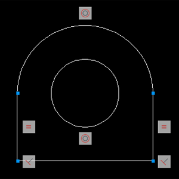
Concrètement, voici ce que l'on a fait :
Nous avons d'abord dessiné la pièce grossièrement.
On a appliqué en premier deux contraintes perpendiculaires à la ligne du bas et aux lignes sur les côtés.
Les points bleus représentent 4 contraintes coïncidentes. On souhaite que les extrémités de chaque objet coïncident les unes aux autres afin de "lier" les objets entre eux.
Ensuite, on applique 2 contraintes d'égalité afin que les lignes des côtés correspondent toujours à la même longueur.
Enfin, on attribue une contrainte concentrique au cercle et à l'arc de cercle du haut pour qu'ils aient tous deux le même centre.
On peut imaginer la pièce ci-dessus comme étant une pièce de levage que l'on soudera sur une machine par exemple. Elle n'est pas non plus entièrement contrainte puisqu'on peut, à l'aide des poignées de chaque objet, modifier : sa largeur, sa longueur, sa position et sa rotation tout en conservant certaines des spécificités de sa forme. Vous pouvez même faire un essai pour voir. Lorsque vous modifiez sa largeur, le rayon de l'arc de cercle en haut est automatiquement modifié en même temps que la longueur de la ligne du bas. On pourra aussi la faire pivoter à un angle précis ou modifier la longueur d'une ligne verticale (la ligne opposée sera elle aussi modifiée automatiquement).
Dans le ruban, cliquez sur la petite flèche en bas à droite du groupe "Géométrique" :
Vous venez d'ouvrir la boîte de dialogue de configuration des contraintes. Grâce à cette boîte de dialogue, dans l'onglet "Géométrique", vous pouvez gérer l'affichage des contraintes, la transparence qui est réglée ici à 70% et appliquer l'ajout de contrainte automatique lors du dessin. Pour effectuer cette dernière action, il vous suffit de cocher la case "Déduire les contraintes géométriques".
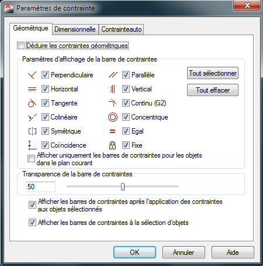
Ainsi, des contraintes géométriques s'ajouteront automatiquement et en même temps que vous dessinerez. Vous n'êtes pas non plus obligé de passer par la boîte de dialogue pour arriver à ce résultat. Un petit bouton est prévu pour ça. Il se trouve parmi les boutons en dessous de la ligne de commande :
Les contraintes dimensionnelles vont nous permettre de gérer les dimensions de notre conception. On peut appliquer une contrainte dimensionnelle par objet ou entre 2 objets séparés dans notre dessin. On pourra ainsi contrôler :
La taille d'un objet.
La distance entre des objets et/ou des points.
Les rayons et/ou les diamètres.
Les inclinaisons entre les objets.
C'est grâce aux contraintes dimensionnelles que nous allons pouvoir fixer les dimensions de notre géométrie. Voici les différentes contraintes dimensionnelles auxquelles vous allez avoir affaire :
Icônes
Description
Horizontale : Permet de fixer une distance horizontale entre 2 points.
Verticale : Permet de fixer une distance verticale entre 2 points.
Rayon : Permet de fixer la valeur du rayon d'un cercle ou d'un arc.
Diamètre : Permet de fixer la valeur du diamètre d'un cercle ou d'un arc.
Alignée : Permet de fixer une distance entre 2 points suivant un alignement précis.
Angulaire : Permet de fixer une inclinaison entre 2 lignes.
Convertir : Permet de convertir des cotes en contraintes dimensionnelles.
Linéaire : Permet de fixer une distance horizontale ou verticale entre 2 points.
Voici comment se présentent les contraintes dimensionnelles sous AutoCAD :
Voici comment les contraintes ont été appliquées :
Nous avons appliqué une contrainte "Alignée" de 200mm en partant du milieu de la ligne inférieure de la pièce jusqu'au point quadrant de l'arc de cercle (d1).
Ensuite, nous avons appliqué une contrainte "Alignée" de 200mm en partant de l'extrémité gauche de l'arc jusqu'à l'extrémité opposée (d2).
La contrainte "Diamètre" a été appliquée au cercle avec une valeur de 100mm (dia1).
Puis la contrainte "Rayon" a enfin été appliquée à l'arc en laissant sa valeur par défaut (rad1).
Ok, mais il y a quand même un truc qui me paraît bizarre, pourquoi tu n'as pas utilisé des contraintes horizontales et verticales pour contraindre la hauteur et la largeur de la pièce ? Ou même mieux, une contrainte linéaire ? o_O
Et bien tout dépend si vous souhaitez que votre pièce puisse pivoter ou non... Tilt ! :p
Si j'avais contraint la pièce avec des contraintes verticales et horizontales, elle n'aurait pas pu pivoter puisque je l'aurais contrainte "horizontalement" et "verticalement", tandis qu'avec une contrainte "Alignée", je peux faire pivoter ma pièce car la contrainte restera alignée par rapport aux points de la pièce que j'aurais choisi (faites l'essai).
Maintenant que vous voyez comment on place une contrainte, je vais vous montrer comment maîtriser les dimensions de cette fameuse pièce de levage. Pour le moment, nous avons fixé ses dimensions. Il faut donc pouvoir les modifier.
Lorsque vous appliquez des contraintes dimensionnelles à votre conception, AutoCAD stocke les valeurs définies dans des constantes. Dans le cas où vous souhaitez modifier une géométrie contrainte, vous pouvez changer les valeurs dimensionnelles contenues dans ces constantes de 3 façons différentes :
Soit vous utilisez les poignées des objets pour modifier leur longueur.
Soit vous sélectionnez la contrainte dimensionnelle pour en modifier sa valeur.
Soit vous passez par le gestionnaire des paramètres. C'est ici que cela devient intéressant.
Concernant les 2 premières méthodes, je pense qu'il est inutile de déblatérer pendant des heures dessus. Par contre, je vais vous expliquer la plus intéressante. Nous allons ouvrir le gestionnaire des paramètres. Pour l'ouvrir, rendez-vous dans l'onglet "Paramétrique" du ruban et cliquez sur "Gestionnaire des paramètres" tout à droite.
Détaillons un peu cette boîte de dialogue. Dans la colonne "Nom", vous avez la liste des noms de toutes les constantes des contraintes dimensionnelles. Si vous le souhaitez, vous pouvez les renommer pour leur donner un nom un peu plus évocateur que "d1", "d2", "dia1", etc...
Lorsque vous renommez une constante, le nom que vous lui donnerez s'affichera également dans le texte de la contrainte dimensionnelle concernée. D'ailleurs, nous allons renommer nos constantes tout de suite. Voici le résultat de ce que vous devez obtenir :
C'est un peu plus parlant vous ne trouvez pas ? :)
Parlons de la colonne "Expression". C'est ici que vous pouvez modifier la valeur de vos constantes. Et tenez vous bien, vous allez même pouvoir faire des calculs, créer des formules et insérer des fonctions prédéfinies ! Pourquoi me direz-vous ? Et bien nous allons voir ça tout de suite. Dans l'état actuel, les constantes sont pour ainsi dire fixées à une certaine valeur. Afin d'appliquer certaines règles géométriques, on peut faire correspondre les constantes entre elles par le biais d'expressions mathématiques pour rendre la conception plus modulaire. En effet, si on souhaite modifier une valeur contenue dans une constante et que cette modification puisse avoir une répercussion sur les autres valeurs, on peut affecter des formules afin de lier ces dernières valeurs à une valeur source.
Attends une minute, normalement une constante ça reste constant, on ne peut pas la modifier, non ? o_O
En effet, les constantes restent constantes, c'est vrai. Mais ici elles sont constantes par rapport à la géométrie de la pièce. Vous pouvez modifier la valeur d'une constante mais par rapport au dessin elle sera toujours fixe, donc constante. Voici un exemple d'expressions que l'on peut affecter aux constantes :
Dans cet exemple, je souhaite pouvoir modifier la largeur de ma pièce de levage tout en sachant que :
Le diamètre du trou central devra toujours être égal au rayon du sommet de la pièce.
La hauteur standard de la pièce devra toujours être 3 fois supérieure au diamètre du trou.
Le rayon du sommet de la pièce sera égal à la moitié de la largeur de la pièce (en toute logique).
Ainsi, en une seule et même opération, je peux modifier la largeur de ma pièce sans avoir besoin de modifier le reste. Je viens donc de définir une pièce de levage qui respecte une forme standard et que je peux facilement modifier. N'hésitez surtout pas à modifier la largeur pour voir la différence.
Les variables utilisateur
Vous avez la possibilité de créer des variables et des formules au sein même du gestionnaire des paramètres. Ici, c'est utile si vous souhaitez déterminer par exemple la surface de votre pièce. Pour créer une variable ou une fonction utilisateur, il suffit de cliquer sur
.
Et voilà, votre propre variable est créée. À vous de déterminer si vous en faites une variable avec une valeur ou une fonction mathématique de plusieurs valeurs. Pour notre pièce de levage nous allons découper nos calculs en 4 fonctions :
Une fonction qui calculera la surface du trou.
Une fonction qui calculera la surface de la partie arrondie du haut (un demi cercle).
Une fonction qui calculera la surface rectangulaire du bas.
Une fonction qui calculera la surface total de notre pièce.
Avant de faire tout ça, voici les principaux opérateurs mathématiques que vous pouvez utiliser dans vos formules :
Opérateurs
Description
+
Permet d'additionner plusieurs valeurs.
-
Permet de soustraire plusieurs valeurs.
*
Permet de multiplier plusieurs valeurs.
/
Permet de diviser plusieurs valeurs.
( et )
Permet d'indiquer la priorité de calcul. Toutes les opérations présentes entre parenthèses seront calculées en premier.
Il existe d'autres opérateurs que je ne détaillerai pas ici comme par exemple le symbole ^ qui permet l'élévation à une puissance. Maintenant que vous avez toutes les cartes en main, je vous laisse créer toutes ces fonctions. N'ayez pas peur, lancez-vous et essayez de tout coder vous-même, vous en êtes largement capable.
Voici le résultat des courses :
Oups ! Aurais-je omis de vous parler de la constante PI ? :p
Je sais, ce n'est pas très sympa de ma part mais il faut bien que je vous taquine un peu. Si vous avez mis 3.14 ça fonctionne aussi. Ça sera simplement un peu moins précis. PI est une constante prédéfinie dans AutoCAD. Il existe même des fonctions toutes prêtes. Nous allons en voir quelques unes.
Les fonctions prédéfinies
Les fonctions prédéfinies sont des fonctions toutes prêtes que vous pouvez utiliser lors de vos calculs afin de récupérer ou d'affecter à votre géométrie des informations un peu plus complexes. Je vais vous détailler les principales fonctions utiles que vous pourrez utiliser lors de vos conceptions de dessins paramétriques. La syntaxe des fonctions est la suivante :
nom_de_la_fonction(valeur)
Fonction
Description
srqt()
Calcule la racine carrée d'une valeur.
round()
Arrondit une valeur à l'entier le plus proche.
ceil()
Arrondit une valeur à l'entier supérieur.
floor()
Arrondit une valeur à l'entier inférieur.
abs()
Affiche la valeur absolue.
tan()
Calcule la tangente d'un angle.
cos()
Calcule le cosinus d'un angle.
sin()
Calcule le sinus d'un angle.
Voici un exemple d'utilisation dans le cas où l'on souhaiterait calculer automatiquement la diagonale d'un rectangle quelle que soit sa dimension. On peut aussi avoir le même résultat en appliquant une contrainte alignée entre le coin supérieur gauche et le coin inférieur droit du rectangle mais cela implique aussi le fait qu'il faille également retravailler les constantes avec des formules pour adapter la contrainte au redimensionnement. Avec cette méthode c'est un peu plus rapide et c'est moins... contraignant.
La formule pour calculer la diagonale d'un rectangle est la suivante : \sqrt[]{longueur^{2} + largeur^{2}}.
Voilà, la longueur de la diagonale du rectangle est de 318mm. Et c'est là que se clôture ce chapitre sur les contraintes.
Nous voici arrivés au bout de ce chapitre. Les clés de la compréhension du concept des contraintes sont la pratique. Pour bien comprendre ce système, qui n'est pas évident pour tout le monde au début, il ne faut pas hésiter à en manger (je parle des contraintes évidemment). Entraînez-vous le plus possible et ça rentrera tout seul ! :)
Dans le chapitre qui va suivre, nous allons rester (un peu) dans le thème du dessin paramétrique mais en abordant cette fois la chose avec une autre méthode. Nous allons créer et utiliser des blocs !
Toujours dans le thème du dessin paramétrique, nous allons aborder cette fois-ci les choses d'une manière un peu différente. Nous avons vu les contraintes dans le dessin. Je vais vous expliquer maintenant ce qu'est un bloc. Un bloc est en fait la combinaison de plusieurs objets que l'on pourra réutiliser dans nos dessins. Cela permet de ne pas avoir à redessiner à chaque fois les mêmes pièces. Cela nous fera gagner un temps considérable.
Mais les blocs ne s'arrêtent pas seulement à grouper en quelque sorte les objets. On peut également leur ajouter des fonctions comme :
Des paramètres linéaires, polaires, de rotation, d'alignement, de visibilité...
Des actions d'étirement, de rotation, d'échelle, de consultation...
Des contraintes. Vous connaissez ? :-°
Personnellement, je suis fan ! Allons voir ce que l'on peut faire avec.
Tout d'abord, je vais vous détailler l'environnement d'édition qui nous servira à créer nos blocs. Lorsque l'on crée un bloc, on parle de définition de bloc. Comme je l'ai dit plus haut, une définition de bloc est un regroupement de plusieurs objets qui n'en forment qu'un seul. Chaque définition de bloc porte un nom qui lui est propre et c'est à vous de le choisir. Il existe plusieurs méthodes de création de bloc mais avant d'en arriver là, rendez-vous dans l'onglet "Insertion" du ruban et dans le groupe "Bloc" :
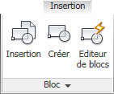
Nous allons ouvrir l'éditeur de blocs. C'est un environnement à part de l'espace objet et l'espace de présentation, bien que l'on puisse y dessiner de la même façon. Cliquez sur le bouton "Editeur de blocs" :
Vous avez aussi la possibilité de taper en ligne de commande, suivant vos préférences :
_bedit
Nommez votre bloc en tant que "Essai" (par exemple) et validez en appuyant sur "OK". Un nouvel onglet "Editeur de blocs" est créé, le fond change de couleur et la palette de création de blocs apparaît. Voici ce que vous devez voir à l'écran :
Si vous obtenez la même interface, c'est que vous vous trouvez dans l'éditeur de blocs. Que voyons-nous dans le ruban ? De gauche à droite, dans le premier groupe on pourra modifier, enregistrer et tester notre bloc pour voir la manière dont il réagit par rapport aux paramètres et actions qu'on lui aura attribués. Les 3 groupes suivants concernent les contraintes. Là, vous connaissez. Le groupe suivant répertorie les paramètres et les actions. Vous y avez accès également dans la palette de création de blocs. Le groupe "Visibilité" qui est actuellement grisé nous servira lorsque l'on affectera un paramètre de visibilité à notre bloc (nous allons y venir). Enfin, le dernier groupe ferme l'éditeur. Nous allons faire un petit essai.
Dessinez une platine percée en son centre comme ci-dessous. Cette pièce devra faire 50mm par 50mm et son trou devra avoir un diamètre de 16mm. Bien-sûr, vous pouvez toujours changer d'onglet pour aller chercher vos outils de dessin. Tant que vous ne fermez pas l'éditeur, vous resterez à l'intérieur.
Cliquez sur "Enregistrer le bloc" puis sur "Fermer l'éditeur de blocs".
Oups ! Mince, mon dessin a disparu ! Dois-je tout recommencer ?
Non, rassurez-vous, votre bloc existe et a bien été créé. Il faut juste l'insérer dans le dessin si vous souhaitez le voir. Cliquez sur "Insertion" et dans le menu déroulant du haut, sélectionnez votre bloc "essai" puis validez. Il vous suffit de placer votre bloc dans le dessin à l'endroit de votre choix. Vous venez de créer votre premier bloc.
Nous venons de créer un bloc en passant par l'éditeur de bloc. Sachez ne vous n'êtes pas obligés de passer par là. En effet, vous avez la possibilité de créer votre dessin dans l'espace objet puis de copier tous ses éléments et d'effectuer un collage en tant que bloc. :waw:
Voici la démarche à effectuer :
Créez la même pièce que tout à l'heure mais cette fois-ci dans votre espace objet.
Sélectionnez votre pièce en totalité puis faites un Ctrl + c.
Ensuite, faites un clic droit et choisissez "Coller en tant que bloc".
Ou alors appuyez sur Ctrl + Maj + v.
Dans tous les cas, votre bloc a été créé et référencé sous un nom du style : "A$C18DE5B9F". Vous pouvez bien sûr le renommer en double cliquant dessus si vous le souhaitez (cela implique un passage par l'éditeur), sinon vous pouvez le laisser tel quel. Dans la boîte de dialogue qui s'affiche, sélectionnez votre bloc puis validez. Une fois dans l'éditeur de blocs, enregistrez votre bloc sous "Platine" par exemple puis fermez l'éditeur.
Supprimer une référence de bloc
Pour supprimer une référence de bloc il ne suffit pas de supprimer les blocs présents dans le dessin. Les blocs seront supprimés mais la référence existera toujours. Heureusement, Autodesk a tout prévu. Nous allons purger notre dessin grâce à cette commande :
purger
La commande "purger" ne sert pas uniquement à supprimer les références de bloc que l'on ne souhaite plus. Cette commande permet d'alléger le fichier de dessin en supprimant les éléments du dessin inutilisés comme nos amis les blocs mais aussi les calques, styles de cote, types de ligne etc. Ici, nous voulons supprimer uniquement la référence : "A$C2B8E3E9B".
Dans l'arborescence, déroulez "Blocs" puis sélectionnez le bloc à purger. Cliquez sur "Purger". Le bouton "Purger" efface uniquement les éléments sélectionnés. Si vous choisissez "Tout purger", cela aura pour effet de supprimer toutes les références non utilisées. Faites donc attention à ce que vous faites. Pour finir, cliquez sur "purger cet élément".
Créer un bloc c'est bien et ça peut se révéler très pratique. Mais si je vous propose maintenant d'y ajouter des paramètres afin de pouvoir le modifier en temps réel, là, c'est le top du top ! Nous allons voir ce qu'est un bloc dynamique.
Ajouter du dynamisme dans les blocs va nous permettre de contrôler la géométrie et/ou les dimensions de ces blocs par l'affectation de paramètres. Cela permet entre autres de pouvoir modifier un bloc sans être obligé de passer par l'éditeur de bloc. Nous allons prendre l'exemple d'une poutrelle métallique. Si on souhaite modifier sa longueur, nous ne serons pas forcés de passer par l'éditeur de bloc. Nous pourrons lui donner la longueur souhaitée directement dans le dessin à l'aide d'une poignée par exemple. C'est beaucoup plus pratique.
Les paramètres de bloc
Les paramètres de bloc constituent un élément moteur dans l'élaboration d'un dynamisme de la géométrie. Ils vont nous permettre le contrôle des éléments du dessin en fonction des actions qui lui seront associées. Un paramètre de bloc sera donc associé à une action afin de pouvoir la contrôler.
Icônes
Description
Permet d'ajouter un paramètre d'alignement à un bloc.
Permet d'ajouter un point de base à un bloc.
Permet d'ajouter un paramètre de consultation à un bloc.
Permet d'ajouter un paramètre d'inversion à un bloc.
Permet d'ajouter un paramètre linéaire à un bloc.
Permet d'ajouter un paramètre de point à un bloc.
Permet d'ajouter un paramètre polaire à un bloc.
Permet d'ajouter un paramètre de rotation à un bloc.
Permet d'ajouter un paramètre de visibilité à un bloc.
Permet d'ajouter un paramètre XY à un bloc (comme un paramètre linéaire sur les 2 axes).
Nous allons dessiner notre poutrelle métallique. Nous la dessinerons avec des traits de constructions (vous devez savoir de quoi je parle maintenant :pirate: ) en vue de profil avec un axe principal d'une couleur différente des traits de construction. Pour vous aider, vous pouvez reproduire ce dessin (sans la cotation) :
Ceci étant fait, sélectionnez les objets de votre dessin puis dans l'onglet "Insertion" du ruban, cliquez sur créer. Donnez un nom à votre bloc comme "poutre" par exemple et éventuellement une description puis validez. Ouvrez votre nouveau bloc dans l'éditeur de blocs en double cliquant dessus et ajoutez-lui un paramètre polaire. Le paramètre polaire agit un peu à la manière d'une cote alignée. À la différence du paramètre linéaire, nous pourrons le faire pivoter à la souris lors d'un redimensionnement. Ajoutez-lui également un point de base sur l'extrémité gauche de l'axe.
Vous pouvez enregistrer votre bloc. Nous allons détailler maintenant les actions que l'on peut affecter aux paramètres.
Comme je vous l'ai dit précédemment, on associe généralement une action à un paramètre. Les éléments concernés par cette association sont les paramètres, mais aussi les objets géométriques du bloc. On affectera donc l'action à ce que l'on appelle un point clé du paramètre (une poignée pour déclencher l'action) et à une sélection de plusieurs objets géométriques qui seront concernés par cette action. Voici les différentes actions que l'on peut rencontrer dans AutoCAD :
Icônes
Description
Ajoute une action de consultation à un bloc. Permet d'attribuer ou de consulter les valeurs de paramètres de bloc.
Ajoute une action de déplacement à un bloc ou un élément de bloc.
Ajoute une action de mise à l'échelle à un bloc ou un élément de bloc.
Ajoute une action d'étirement linéaire à un bloc ou un élément de bloc.
Ajoute une action d'inversement à un bloc ou un élément de bloc.
Ajoute une action de réseau d'objets à un bloc ou un élément de bloc.
Ajoute une action de rotation à un bloc ou un élément de bloc.
Ajoute une action d'étirement polaire (aligné) à un bloc ou un élément de bloc.
Nous avons attribué à notre dernier bloc un paramètre polaire. L'action adéquate ici, vous vous en doutez, sera une action d'étirement polaire qui, je le précise, ne fonctionne qu'avec le paramètre polaire. Choisissez l'action d'étirement polaire puis sélectionnez le paramètre (distance 1). Indiquez le point clé sur le carré bleu de droite du paramètre et sélectionnez les objets du bloc qui sont concernés par l'action (voir le cadre en pointillés).
Sélectionnez les objets qui seront étirés (cadre vert) et validez avec Entrée. Enfin, sélectionnez la ligne verticale de gauche du bloc pour indiquer que cet objet fait partie de la transformation afin qu'il puisse pivoter mais qu'il ne doit pas subir l'étirement puis validez avec Entrée.
Bien, observez l'icône visible à côté du paramètre qui vous indique l'action qui lui est associée. Si vous pointez avec votre souris sur cette icône, on s'aperçoit que tout ce qui lui est associé est mis en surbrillance. Nous avons presque terminé. Il faut tester notre bloc dynamique pour voir la façon dont il réagit. Dans le ruban, cliquez sur "Tester le bloc". Cliquez sur la poignée de droite puis déplacez la souris pour observer le résultat. Si vous avez bien suivi, voici ce qu'il se passe :
Vous pouvez fermer l'espace de test et enregistrer votre bloc. Essayez de l'insérer dans l'espace objet. Admettez que ça va nous faire gagner beaucoup de temps tout ça !
Je viens de vous montrer une seule méthode de création de bloc dynamique. Dans ce cas, notre poutrelle se modifie en fonction de sa longueur, ce qui nous évite de la redessiner à chaque fois. Mais il existe des matériaux de type "standard" avec des dimensions déjà prédéfinies comme les vis par exemple. Il serait judicieux de créer un menu de sélection comprenant différentes tailles de vis qui seraient redimensionnables à volonté. Et bien c'est impossible ! Non, je rigole. C'est tout à fait possible et nous allons voir ça tout de suite. :D
Une liste de choix
Tout d'abord, nous allons dessiner toutes nos vis dans l'éditeur de bloc. Ensuite, nous allons leur ajouter des paramètres et actions qui permettront de les rendre invisibles suivant la sélection que l'on aura choisie puis nous les rendrons redimensionnables en longueur. Voici les éléments sur lesquels nous allons travailler :
Et comme je suis dans un bon jour, vous n'avez même pas besoin de dessiner les vis. Téléchargez ce fichier avant de créer le bloc dynamique. Une fois le téléchargement terminé, double cliquez sur le fichier puis copiez et collez tous les éléments dans l'éditeur de blocs. Nous lui donnerons le nom de "vis" par exemple. Il y a 3 vis correspondant à une taille allant d'un diamètre de 10 mm pour la première à 14 mm pour la dernière (celle du centre étant à 12 mm). Ces dimensions concernent le corps de la vis et non la tête. Sur ce corps de vis est représenté le filetage. Le filetage ou le pas de vis correspond à la forme hélicoïdale de la surface de la vis qui lui permet d'avancer ou reculer suivant son sens de rotation. En gros, c'est cette forme qui permet à la vis de visser ou de dévisser.
Par exemple, une vis avec un pas de vis de 1,25 correspond à l'avancement de la vis (en millimètre dans le cas d'un pas métrique) lorsqu'un tour complet est effectué. On saura donc que lorsqu'on fait tourner cette vis sur un tour, elle avance ou recule de 1,25mm.
On désigne généralement les tailles de vis par une convention de nommage : M10, M12 et M14 pour ce cas là. La lettre "M" correspondant au type de filetage (M étant un filetage métrique) et le nombre correspondant au diamètre de la vis en millimètre. Zoomez sur la plus petite vis (M10) et attribuez-lui un point d'origine entre la tête de vis et le corps. Ensuite placez un paramètre linéaire sur le corps ainsi qu'un paramètre de visibilité au dessus dans l'axe de la vis.
Le paramètre de visibilité va nous permettre de choisir les éléments que l'on souhaite afficher ou masquer en fonction d'un choix. Dans le ruban de l'éditeur de blocs, dans le groupe "Visibilité", cliquez sur "États de visibilité". Une boîte de dialogue s'affiche. Renommez le premier état sous le nom de "M10" puis créez 2 autres états (M12 et M14) et validez.
Dans la liste déroulante du groupe "Visibilité" du ruban, sélectionnez l'état "M10" puis cliquez sur masquer :
. Sélectionnez les 2 vis à droite de la M10. Attention à bien sélectionner tous les éléments correspondant uniquement aux vis M12 et M14. Tout ce qui est sélectionné sera masqué lorsque le choix se portera sur M10. Donc prudence lorsque vous choisissez les objets à masquer. À l'identique et c'est valable pour toutes les vis, ne sélectionnez jamais le paramètre de visibilité sinon vous ne pourriez plus avoir le choix de la sélection lors du passage dans l'état concerné. Ceci étant fait, appuyez sur Entrée. Vos 2 vis ont disparu. Il ne reste plus que la M10 qui se trouve dans l'état de visibilité "M10". C'est ce que l'on veut, continuons.
Effectuez la même opération avec la M12. Sélectionnez l'état de visibilité "M12" puis masquez les vis et leurs paramètres qui ne correspondent pas à la M12. Attention à ne pas sélectionner le paramètre de visibilité, j'insiste. Voici le résultat :
Tous les états ont été définis. Nous allons maintenant superposer nos vis afin qu'elles s'affichent toutes au même endroit. Sélectionnez la M12 et ses paramètres puis choisissez le même point pour la déplacer que le point d'origine de la M10. Superposez-la à la M10 puis faites la même opération avec la M14. La superposition doit ressembler à ça :
Ceci étant fait, nous allons attribuer une action d'étirement à chaque paramètre linéaire. Cliquez sur "mode de visibilité" :
afin de masquer les autres vis visibles et sélectionnez l'état de visibilité "M10". Ajoutez une action "Étirer" au paramètre linéaire de la M10 et faites la même opération pour les 2 autres vis.
Enregistrez votre bloc et cliquez sur "tester le bloc". Si tout s'est bien passé, vous devriez obtenir ce résultat. Un bloc de plusieurs vis paramétrables à souhait. La poignée triangulaire du haut vous permet de choisir le type de vis (diamètre) et la poignée du bas vous permet de modifier sa longueur.
Pour l'instant, la vis est pour ainsi dire fixe lors de l'étirement. Vous pouvez essayer de modifier l'action d'étirement et la remplacer par une action d'étirement polaire par exemple. Cela implique évidement le changement de paramètre en polaire. Si vous souhaitez pousser le vice un peu plus loin, permettez à cette vis de pivoter. Cela vous fait un bon exercice d'entraînement à la modification de bloc et si vous avez d'autres idées, n'hésitez pas. Maintenant que nous savons créer des blocs et y ajouter du dynamisme, il faut pouvoir les stocker quelque part. C'est ce que je vous propose. Nous allons voir comment créer des bibliothèques de blocs.
Une fois vos blocs créés, vous souhaitez peut-être les stocker dans un endroit qui vous permettra de les retrouver facilement. Je vous propose de découvrir ce que l'on appelle les bibliothèques de blocs. Une bibliothèque de blocs est tout simplement un fichier de dessin dans lequel se trouvent plusieurs blocs. Vous avez la possibilité :
D'utiliser les bibliothèques de blocs standards fournies avec AutoCAD.
De créer et d'utiliser vos propres bibliothèques.
Concernant les bibliothèques de blocs d'AutoCAD, ne vous attendez pas à trouver un trésor. Ce sont pour la plupart des exemples que vous pouvez étudier et/ou modifier si vous le souhaitez pour vous entraîner. On les trouve à l'aide du DesignCenter. C'est un lieu où sont regroupés tous les fichiers de blocs, de styles etc... En gros, c'est une zone qui organise pour nous l'accès à des contenus de dessin. Pour ouvrir le DesignCenter, rendez-vous dans le menu "Outils", choisissez "Palettes" puis "DesignCenter" ou si vous préférez, vous pouvez taper la commande :
adcenter
La palette s'ouvre et au premier coup d'œil on voit clairement 2 parties bien distinctes. Celle de gauche est une arborescence vous permettant d'avoir accès à tous les fichiers de bibliothèque et celle de droite affiche le contenu, l'aperçu et la description des éléments du dossier ou du fichier sélectionné.
Nous allons faire un essai. Déroulez le dossier "Sample" puis le dossier "DesignCenter" dans l'arborescence, choississez un fichier de bibliothèque ("House Designer" par exemple) et déroulez-le pour afficher son contenu. On peut voir que l'on a des blocs, des calques, des présentations, des styles, bref, du contenu. Choisissez "blocs" dans l'arborescence.
Tous les blocs disponibles s'affichent sous forme de miniatures. Si vous en sélectionnez une, vous aurez accès à sa description et à la représentation réelle du bloc. Il y a beaucoup de blocs présents dans le DesignCenter mais la plupart ne vous serviront probablement jamais. À savoir, le DesignCenter permet aussi de voir les blocs contenus dans des fichiers déjà ouverts. Pour faire cela, il vous suffit juste de changer d'onglet. À condition qu'un ou plusieurs fichiers de dessin soient ouverts.
Créer sa propre bibliothèque
Comme vous l'avez sûrement compris, créer une bibliothèque revient à créer nos blocs dans un dessin et l'enregistrer sur le disque dur. Rien de plus simple. Ce que vous pouvez faire, c'est créer un dossier "Mes_Blocs" par exemple dans le dossier d'AutoCAD "DesignCenter" où se trouvent tous les autres fichiers de bibliothèques. Comme ça, vous y aurez directement accès en ouvrant le DesignCenter. Mais si vous préférez l'enregistrer dans vos documents, je n'y vois pas d'inconvénient à partir du moment où vous pouvez y avoir accès facilement. Avec cette dernière méthode, lorsque vous aurez besoin d'un bloc, vous pourrez aller chercher votre fichier de bibliothèque et l'ouvrir en même temps que votre conception. Il suffira de changer d'onglet dans le DesignCenter pour avoir accès à vos blocs et pouvoir les insérer facilement dans le dessin.
Le DesignCenter c'est bien pratique, mais il y a mieux ! Avant de clôturer ce chapitre, je vais vous offrir un petit bonus. Je vous propose de créer une palette dans laquelle nous aurons accès à nos blocs directement, dans n'importe quel dessin et sans ouvrir le DesignCenter. :waw:
Dans ce bonus, nous allons créer une palette de bloc qui sera affichée en permanence dans notre espace de travail. Une palette est une zone contenant des onglets permettant d'organiser des blocs et/ou des outils personnalisés. Vous pourrez à partir de cette palette :
Sélectionner l'élément de votre choix.
Voir la miniature de votre outil.
Avoir une référence textuelle sous chaque miniature.
Similairement à un bouton, vous pourrez utiliser votre outil dans n'importe quel dessin sans être obligé de passer par le DesignCenter. Cliquez sur ce bouton et votre bloc sera au bout de votre curseur. L'idéal étant d'organiser les onglets de votre palette par catégories de blocs, vous pourrez personnaliser à votre sauce chaque onglet comme bon vous semble. Commencez par ouvrir le fichier où se trouve vos blocs. Ensuite, allez dans l'onglet "Vue" du ruban puis cliquez sur "Palettes d'outils" ou tapez la commande ci-dessous.
paletteoutils
Lorsqu'on construit une nouvelle palette, il est bien de créer :
Un groupe de palette afin d'avoir accès uniquement à nos palettes et masquer les autres déjà présentes.
Des nouvelles palettes avec un nom différent pour contenir nos blocs.
Voici toutes les palettes par défaut d'AutoCAD. Si vous le souhaitez, vous pouvez les parcourir et même les essayer. Elles sont faites pour ça. Maintenant je vais vous demander de cliquer sur le bouton des propriétés de la palette.
Tout en bas du menu des propriétés on trouve la ligne "Toutes les palettes" cochée. Cette option affiche toutes les palettes de tous les groupes. Les lignes du dessus correspondent en fait à des groupes de palettes. Si on en sélectionne un, seules les palettes de ce groupe seront affichées. Donc, afin d'afficher dans ce menu nos propres palettes, il va falloir créer aussi notre propre groupe. Faites un clic droit dans une zone vide d'une des palettes et choisissez "Nouvelle palette". Pour ma part, je souhaite y insérer des coudes métalliques, je vais donc la nommer : "Coudes". Votre palette a été créée. Si vous cliquez sur son onglet, on peut s'apercevoir qu'elle est vide. Avant de la remplir, nous allons régler son style d'affichage. Faites un clic droit au milieu de votre palette et choisissez "Options d'affichage...".
Réglez les paramètres comme ci-dessus et validez. Maintenant que notre palette est prête à accueillir nos blocs, nous allons pouvoir créer un groupe qui la contiendra. Faites un clic droit dans la barre de titre cette fois-ci et choisissez "Personnaliser les palettes".
Dans la colonne de gauche, je peux voir ma palette "Coudes" qui a été effectivement créée. Placez-vous dans la colonne de droite, un clic droit et sélectionnez "Nouveau groupe". Nommez-le par exemple "Mes blocs", puis validez. Votre groupe a peut-être été créé dans un autre groupe. Prenez le dossier à la souris puis déplacez-le tout en bas de la colonne de droite. Dans la colonne de gauche, prenez votre palette et faites-la glisser jusqu'à votre nouveau groupe.
Retournez dans les propriétés de la palette puis sélectionnez votre groupe. On commence à y voir un peu plus clair. La barre de titre de la palette nous indique bien "Palettes d'outils - Mes blocs" et seul l'onglet de notre palette "Coudes" est affiché.
Bien, nous en avons presque terminé. Prenez votre palette et déplacez-la sur la droite de la fenêtre pour l'ancrer. Ensuite, en plaçant le curseur de la souris sur le bord gauche de la palette, donnez-lui une largeur raisonnable pour l'ajuster à l'écran.
Ouvrez le DesignCenter et choisissez l'onglet "Dessins ouverts" puis choisissez les blocs. Tous vos blocs précédemment créés s'affichent dans la partie droite du DesignCenter.
Prenez vos blocs un par un et faites-les glisser jusqu'à votre palette. Vous pouvez les organiser comme vous le souhaitez. Personnellement, je les ai mis par ordre chronologique. Voici le résultat :
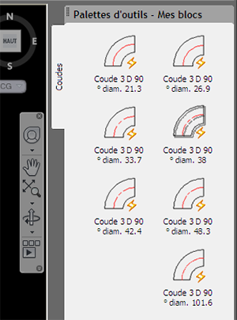
Attention à ne pas déplacer le fichier où sont contenus vos blocs. Comme vous avez placé vos blocs à partir de l'emplacement actuel, si vous changez le fichier de place, vous n'aurez plus accès à vos blocs. :o
Ce dernier chapitre vient clôturer la première partie de ce tutoriel. Vous commencez à maîtriser votre environnement de dessin et vous savez utiliser les principaux outils de dessin en 2D. Vous êtes donc prêt à franchir le pas vers la seconde partie du tutoriel. J'espère que cette longue première partie vous a plu mais que la suite vous plaîra davantage. La seconde partie traitera de la 3D. Mais comme on dit, tout vient à point à qui sait attendre ! ;)
Dans ce chapitre, nous allons troquer notre espace en 2D contre un bel espace en 3 dimensions. Ce qui va radicalement changer ici, c'est la notion d'espace. En effet, cet espace va se voir attribuer une profondeur.
Vous allez donc vous faire la main en donnant du volume à vos objets. :)
Bien, vous êtes devant votre écran avec votre souris à la main, prêt ou prête à vous jeter sur la zone de changement d'espace en haut de la fenêtre principale à gauche. N'hésitez plus, cliquez sur la petite flèche du menu déroulant et choisissez "Eléments de base 3D".
L'interface d'AutoCAD vient de changer. Focalisons notre attention sur les principaux outils du ruban.
La première icône à gauche (Boîte) correspond aux outils de création d'objets 3D. C'est grâce à ces outils que vous pourrez créer des objets 3D basiques comme des boîtes (cubes) mais aussi des cylindres, des cônes, des sphères, des pyramides, des objets en biseau, des tores (anneaux) et divers polysolides.
Viennent ensuite des outils de modélisation qui permettent quant à eux de modéliser des objets en 2D ou en 3D pour former des solides plus élaborés que nos objets basiques. L'extrusion permet de donner un volume, la révolution permet de construire un solide autour d'un axe, le lissage permet de former un objet solide en suivant plusieurs coupes et le balayage permet de créer un solide suivant une trajectoire.
Un autre outil bien pratique : Appuyer/tirer. Cet outil permet de donner du volume à une face ou bien d'en enlever. Pour le reste, union permet d'unir 2 objets 3D pour n'en former qu'un seul, soustraction permet soustraire la forme d'un objet 3D contenu dans un autre et intersection ne garde que l'interférence entre 2 objets 3D.
Maintenant, à vos souris...
Pour une première approche, vous allez orienter votre espace objet en vue isométrique si ce n'est pas déjà le cas. Pour faire cela, vous allez passer par le menu "Affichage". Séléctionnez "Point de vue 3D" puis cliquez sur "Isométrique S-E". Si votre barre de menus n'est pas affichée, reportez-vous à la méthode décrite dans "une touche perso" lors de la première partie.
Ceci étant fait, nous choisirons un autre style d'affichage pour nos futurs objets en 3D. Pour faire cela, il suffit de vous rendre dans la partie droite du bandeau. Déroulez le menu contenant le style visuel "Filaire 2D" et choisissez "Conceptuel".
Pour votre premier objet en 3D, nous allons utiliser l'outil "Boîte" afin de créer un joli cube. Cliquez sur l'outil "Boîte". Cliquez dans votre espace objet pour indiquer le coin inférieur gauche du cube puis déplacez le curseur et cliquez à nouveau pour indiquer le coin opposé.
Étirez votre cube pour lui donner un volume puis cliquez pour terminer. Simple, non ? ;)
Bon, cela reste plus ou moins basique (pour le moment) mais vous venez quand même de créer votre premier objet en 3D. Vous auriez également pu lui donner des dimensions précises lors de sa création en naviguant dans les propriétés de saisie dynamique (près du curseur) à l'aide de la touche Tab.
Pour sélectionner votre objet, rien de plus simple. Cliquez n'importe où sur celui-ci. Observons ce qu'il se passe. Plusieurs poignées apparaissent et un SCU de couleur bleue, rouge et verte représentant nos 3 axes se situe au milieu de notre objet. Ce SCU se nomme le gizmo. Je ne plaisante pas, c'est réellement son nom ! :D Rassurez-vous, je détaillerai les différents types de gizmos juste après.
Les poignées bleues en forme de triangle représentent la direction dans laquelle vous pouvez étirer votre objet. De ce fait, vous avez la possibilité soit de l'allonger ou soit de le rétrécir. Essayez par vous-même. Cliquez sur la petite flèche bleue sur la face supérieure du cube puis déplacez votre curseur vers le haut.
Les poignées carrées représentées sur les angles du bas vous permettent de modifier les dimensions de la base du cube, tout simplement. Enfin, pour déplacer votre objet, il suffit de cliquer ailleurs que sur une des poignées de votre objet, maintenir le bouton de la souris appuyé et déplacer l'objet.
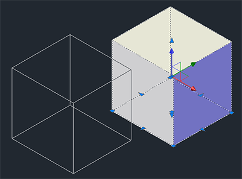
Le mogwaï gizmo
Il existe 3 sortes de gizmo :
Le gizmo déplacement qui permet de déplacer un objet suivant un axe (par défaut).
Le gizmo rotation qui permet de faire pivoter votre objet sur un axe.
Le gizmo échelle qui permet de changer l'échelle de votre objet.
Voici les trois gizmos différents de gauche à droite dans l'ordre où je les ai cités.
Le style visuel a été changé pour plus de clarté. Afin d'effectuer les modifications à l'aide du gizmo, vous devez sélectionner une des branches du gizmo (ou un anneau pour le gizmo rotation) puis déplacer votre souris. Je vous laisse le soin de tester tout ça.
Pour clore ce chapitre, nous allons voir les quelques objets de base que nous offre AutoCAD. Vous avez vu précédemment l'outil "Boîte" qui permet de créer différentes formes cubiques. Passons à la suite, si vous êtes toujours d'accord, bien évidemment ! ^^
Le cylindre,le cône, le biseau et la pyramide
Ces 4 outils utilisent le même principe de création que l'outil "Boîte". Il faut créer la base de la forme puis lui donner un volume.
La sphère et le tore
La sphère et le tore sont quant à eux plus simples d'utilisation. Il suffit de cliquer pour indiquer le centre de l'objet puis déplacer la souris pour spécifier le rayon.
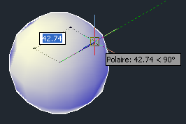
Le polysolide
Le polysolide est un peu plus compliqué à l'utilisation. Il permet en quelque sorte de construire des murs. Cliquez sur l'outil "Polysolide" puis utilisez la flèche directionnelle du bas de votre clavier pour dérouler le menu de la saisie dynamique.
Indiquez la hauteur du mur, validez avec Entrée puis réutilisez la flèche du bas pour spécifier la largeur et validez à nouveau. Les caractéristiques de votre mur viennent d'être définies. Cliquez ensuite à plusieurs endroits pour créer votre mur et validez pour terminer.
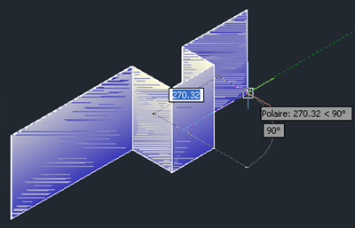
Pratique, n'est-ce pas ? Nous venons de voir tous les outils 3D de base. Dans le prochain chapitre, vous apprendrez à créer des objets plus complexes et à les positionner les uns par rapport aux autres. Pas de QCM tout de suite ! Je vous en réserve un qui récapitulera ce que l'on aura vu dans ce chapitre et le suivant.
J'espère que cette première approche de la 3D sous AutoCad vous met l'eau à la bouche. Vous allez découvrir une multitude d'outils dans les chapitres suivants. Préparez-vous à modéliser de beaux objets en 3 dimensions, mais je n'en dis pas plus.
Comme promis, nous allons étudier dans ce chapitre une manière plus complexe de construire un objet en 3D à partir de plusieurs autres. Sachez que dans AutoCAD, il existe 3 façons de composer un objet complexe en 3 dimensions :
À partir de solides.
À partir de surfaces.
À partir de maillages.
Vous allez donc apprendre ici à positionner des solides, à les additionner, les soustraire et les modifier pour atteindre un objectif : réaliser des modèles 3D plus complexes qu'une forme de base.
Nous allons commencer ici par créer un objet en 2D. Cet objet sera carré et aura pour dimensions 300 millimètres de cotés. On prendra également le soin de positionner 4 trous de 12 millimètres chacun à 25 millimètres de chaque bord. Voici le schéma :
Avant de vous lancer tête baissée dans cette conception enfantine :-° , vous dessinerez cette plaque à l'aide de l'outil "Polyligne" et vous réaliserez les cercles avec l'outil "Cercle". Ne cotez pas le dessin, ici c'est juste pour vous indiquer les dimensions à respecter.
Ceci étant fait, changez votre espace de travail en choisissant "Éléments de base 3D" dans le menu déroulant en haut à gauche. Placez-vous en vue isométrique S-E et choisissez "Filaire". Maintenant, dans l'onglet "Début", cliquez sur "Extruder", sélectionnez tous les objets et appuyez sur Entrée. Tapez le nombre "6" à l'aide de votre clavier puis validez avec Entrée. Voici ce que vous devriez obtenir :
Qu'avons-nous fait ? Nous avons créé la base de notre plaque de 300 millimètres de côtés en 2 dimensions puis nous lui avons donnée une épaisseur de 6 millimètres.
Ouah ! C'est aussi simple que ça de créer une plaque avec des trous ?
En effet, c'est relativement simple mais il y a quand même un piège. Rappelez-vous, lors de l'extrusion de la plaque, nous avons sélectionné TOUS les objets. Nous avons donné une épaisseur à la plaque, certes, mais nous avons également donné une épaisseur aux trous. Les trous que nous avons dessinés en 2D se sont transformés en cylindres. Cela veut dire qu'à l'intérieur de notre plaque il existe également 4 cylindres qu'il faut soustraire de celle-ci. C'est là que les opérations booléennes interviennent.
Les outils union, soustraction et intersection font partie des opérations booléennes effectuées par AutoCAD. Dans AutoCAD, une opération booléenne est une opération qui consiste à effectuer plusieurs calculs géométriques à des fins de modification. Cette modification est appliquée sur un ou plusieurs objets en fonction d'une condition. Pour notre plaque, la condition sera d'ôter les 4 cylindres tout en la conservant. Pour faire ça, nous utiliserons l'outil "Soustraction".
Voici son principe : lorsque vous cliquez sur cet outil, il faut sélectionner l'objet à conserver (ici notre plaque), valider avec Entrée puis sélectionner les objets à soustraire (les 4 cylindres) et valider une nouvelle fois. Changez le style visuel en "Conceptuel" puis exécutez ces opérations. Voici le résultat :
Créons d'autres objets en commençant par un tube de diamètre 50 en 3 millimètres d'épaisseur. Il faudra dessiner 2 cercles, 1 de 50 de diamètre et 1 de 44. Ensuite, il faudra extruder ce tube avec une valeur de 1000 puis soustraire le cylindre du centre. Je vous laisse faire tout seul. :diable: Voici le résultat :
Pour terminer la création de nos objets, dessinez une seconde plaque de 150x200 avec 4 trous de diamètre 8 positionnés à 25mm de chaque bord. Cette plaque devra faire 3mm d'épaisseur. Voici tous nos objets au grand complet :
L'utilisation des outils "Union" et "Intersection" est sensiblement similaire à celle de l'outil "Soustraction". N'hésitez pas à vous entraîner afin de bien maîtriser ces outils.
Ça y est, tous vos objets sont créés et ceci dans un but bien précis ! Nous allons voir comment positionner ces objets les uns par rapport aux autres afin de concevoir un joli support pour votre boîte aux lettres. ^^
Pour nous aider dans le positionnement, nous commencerons par utiliser l'outil de déplacement en forme de croix : "Déplacer". Nous choisirons alors le point central de la face inférieure du tube puis nous le placerons au centre de la plaque de 6mm. L'autre plaque de 3mm sera centrée sur le point central de la face supérieure du tube.
Cliquez sur l'outil "Déplacer" puis sélectionnez le point central inférieur du tube comme dans l'illustration ci-dessous :
Une fois votre point sélectionné, changez la vue à l'aide du ViewCube afin de voir la face supérieure de la plaque de 6mm et placez le tube en son centre. Aidez-vous de l'accrochage aux objets pour positionner le tube comme ci-dessous :
Réalisez la même opération avec la plaque de 3mm. Positionnez-la sur le point central supérieur du tube. Votre support est terminé.
Actuellement, cette conception comprend 3 solides :
La plaque de 6mm.
Le tube.
L'autre plaque de 3mm.
Il ne manque plus que la boîte aux lettres. :p Pour vous exercer un peu, vous avez la possibilité d'unir ces 3 solides pour n'en former qu'un seul. Vous devriez savoir quel outil utiliser maintenant. À vous de jouer !
Nous allons voir ici une autre façon de construire un objet en 3D. La révolution permet de créer des objets solides autour d'un axe de référence. Ces objets seront construits en fonction d'un axe mais ils pourront également avoir un angle de référence qui permettra de stopper la géométrie en fonction de celui-ci. Imaginez que votre forme ne fasse pas un tour complet autour de votre axe. Il faudra pour cela indiquer un angle inférieur à 360°.
Les éléments de base
Avant de commencer, il va nous falloir des éléments de base afin de créer notre solide correctement. Un axe de référence sera le bienvenu. Puis, pour pouvoir "révolutionner" notre objet ^^ , il va nous falloir une forme de base. Nous dessinerons alors un axe (si possible d'une couleur différente de notre géométrie principale) et une forme de base. Il ne manque plus que l'idée. Pour ma part, j'ai choisi de faire un récipient dont voici les éléments de départ :
Reproduisez à peu de choses près le dessin ci-dessus avec les outils "Ligne", "Arc" puis "Décaler" afin de décaler d'1 millimètre la ligne du bas et les 2 arcs qui ont été créés.
Attends un peu là ! Tu nous as dit qu'il fallait utiliser l'outil "Polyligne" pour faire un solide, pourquoi ne l'utilise-t-on pas ici ?
En fait, nous ne l'utilisons pas car je trouve cet outil moins pratique pour créer des courbes. C'est une question de goût personnel mais ce que nous allons faire, c'est joindre et convertir notre base d'objets 2D en Polyligne. Si vous ne vous souvenez plus de cette procédure, reportez-vous au chapitre sur les outils complémentaires afin de savoir comment utiliser l'outil "Modifier polyligne".
Une fois que vos objets sont joints, changez votre espace de travail pour le travail en 3D puis placez-vous en vue isométrique. Nous allons faire pivoter notre base 2D pour la redresser. Mettez-vous en style de vue conceptuelle puis sélectionnez tous les objets, axe compris. À l'aide du gizmo rotation, faites pivoter vos éléments pour les redresser.
Cliquez sur l'outil "Révolution", sélectionnez l'objet sur lequel la révolution va être appliquée puis validez avec la touche Entrée. Spécifiez le point de départ de l'axe (en bas) puis indiquez le second point de l'axe (en haut). Tapez une valeur d'angle de 360 afin de fermer complètement votre récipient.
Rien ne vous empêche d'indiquer une autre valeur (inférieure à 360) si vous le souhaitez ! Pour une moitié de récipient par exemple il aurait fallu taper 180. Voici le résultat final :
Maintenant que vous savez appliquer une révolution à un objet, nous allons voir comment lisser.
Le lissage, contrairement à ce que vous pouvez penser, est une autre technique de création d'objet en 3D en fonction de plusieurs coupes en 2 dimensions. La construction d'un tel objet nécessite bien évidemment au moins 2 coupes. Je vais vous montrer son utilité en construisant ce que l'on appelle un rond carré !
:waw: Un rond carré ? Mais c'est impossible ?
Non, laissez-moi vous expliquer. Sachez tout d'abord qu'un rond ne sera jamais carré et c'est pareil pour le carré, il ne sera jamais rond. En revanche, imaginez une gaine avec une entrée circulaire et une sortie carrée... C'est ce que l'on appelle familièrement un "rond carré". Pour faire ceci, vous allez reproduire le dessin ci-dessous (nous sommes en vue isométrique) :
Les dimensions n'ont pas d'importance ici. Essayez juste de reproduire à peu près la même chose. Sélectionnez l'outil "Lissage" puis choisissez vos 2 éléments l'un après l'autre.
Une fois vos 2 objets sélectionnés, appuyez 2 fois sur la touche Entrée. Voici ce que vous devriez avoir :
Grâce à cette technique, vous pouvez créer des objets très complexes en un rien de temps, comme un morceau de carrosserie par exemple. :)
Le balayage va permettre de nettoyer créer un solide en fonction d'une trajectoire. Cette technique est souvent utilisée dans la tuyauterie afin de concevoir des réseaux de canalisation. Son utilisation est assez simple. Reproduisez un dessin similaire au schéma ci-dessous. L'axe en rouge devra être converti en polyligne et joint. Le cercle devra être perpendiculaire par rapport au point de départ de l'axe.
Une fois que votre base de tuyau est prête à être balayée, cliquez sur l'outil "Balayage", sélectionnez l'objet à balayer (ici le cercle), validez avec Entrée puis choisissez l'axe. Voici le résultat :
Nous voilà arrivés au terme de ce chapitre. Comme vous pouvez le constater, dans AutoCAD, chaque outil est complémentaire l'un par rapport à l'autre. Mais vous n'avez encore rien vu ! Passons maintenant au premier QCM de cette seconde partie.
Vous venez d'apprendre à modéliser des objets solides un peu plus complexes. J'espère que vous suivez toujours. :p Nous allons voir dans le prochain chapitre un concept assez particulier, qui va nous permettre de réaliser des surfaces.
Nous voici au cœur de la modélisation en 3D où je vais vous faire découvrir une autre méthode un peu particulière. Vous allez apprendre à créer des surfaces. Dans AutoCAD, les surfaces ne possèdent pas de volume à proprement parler. Logique, puisqu'une surface reste une surface... Il est cependant possible de créer à partir d'une ou de plusieurs d'entre elles un objet solide. AutoCAD vous permet de créer 2 types de surfaces :
les surfaces procédurales ;
les surfaces NURBS.
Les surfaces dans AutoCAD peuvent être créées à partir de lignes et/ou de courbes, de solides et d'autres surfaces. Ouvrez grand vos yeux et soyez attentif car beaucoup de nouveaux concepts vont être abordés ici. Bon courage ! ;)
Les surfaces procédurales représentent des surfaces calculées en fonction d'équations mathématiques. Elles peuvent être associatives. C'est-à-dire qu'elles peuvent être associées à d'autres objets. Si un des objets est modifié, la surface associée sera recalculée et donc modifiée en fonction de cet objet. Elles dépendent d'une distance par rapport à l'objet. En revanche, le degré de liberté en ce qui concerne sa modélisation est moins malléable qu'une surface NURBS qui est libre et ne dépend d'aucun objet. Elle ne peut donc pas être associative.
L'associativité
Afin d'utiliser et de créer des surfaces dites associatives, il est nécessaire d'enclencher la fonctionnalité avant de créer de telles surfaces. Toutes les surfaces créées avant le démarrage de cette fonctionnalité ne seront pas associatives. Pour vérifier que l'associativité de surface est bien enclenchée, changez votre espace de travail en "Modélisation 3D" puis rendez-vous dans l'onglet "Surface".
Vérifiez que "Associativité de surface" est bien en surbrillance et que "NURBS Création" est désactivé comme dans l'image ci-dessus. Si "Associativité de surface" et "NURBS Création" sont activés en même temps, l'associativité de surface n'aura aucun effet et des surfaces NURBS seront créées à la place.
Les outils de création
Il existe plusieurs modes de création de surfaces procédurales. Suivant ce que vous souhaitez obtenir comme résultat, vous pouvez créer :
Des surfaces planes qui sont entièrement plates.
Des décalages de surfaces qui permettent de créer des surfaces décalées par rapport à d'autres en fonction d'une distance.
Des fusions de surfaces qui permettent de joindre des surfaces entre elles.
Des corrections de surfaces qui permettent de fermer une surface ouverte.
Sachez que vous pouvez tout à fait créer une surface par extrusion, révolution, lissage ou balayage. Il suffit d'activer l'onglet "Surface" et d'utiliser les outils adéquats. ;)
Vous pouvez créer une surface plane avec l'outil "Plane" de l'onglet "Surface". Cliquez sur l'outil "Plane" puis cliquez dans votre espace objet pour créer votre première surface. Cet outil s'utilise de la même manière que l'outil "Rectangle" en 2D. Placez-vous en vue isométrique et en style visuel conceptuel pour admirer votre belle surface. :D
Vous pouvez également créer une surface plane à partir d'autres objets. Dessinez une forme quelconque puis cliquez sur l'outil "Plane". Avec la flèche directionnelle du bas de votre clavier, choisissez objet dans le menu contextuel de la saisie dynamique puis appuyez sur Entrée. Choisissez le ou les objets qui composent la surface puis validez. Voici ce que j'obtiens de mon côté :
La surface plane à bien été créée à partir de mes objets.
La variable DELOBJ
La variable système DELOBJ permet de déterminer si les objets ayant servi à générer la surface doivent être supprimés automatiquement après la création. En revanche, tant que l'associativité de surface est active, cette variable est ignorée par le système. Voici le détail des principales valeurs que vous pouvez affecter à la variable :
0
Garde tous les objets de références.
1
Supprime les objets courbes qui ont été utilisés avec les outils "Extrusion", "Révolution", "Balayage" et "Lissage" ainsi que tous les objets de références utilisés avec les commandes de conversions.
2
Supprime tous les objets de références qui ont été utilisés avec les outils "Lissage" et "Balayage".
3
Supprime tous les objets de références dans la cas où la création d'un solide intervient ainsi que tous les objets de références utilisés avec les commandes de conversions.
D'autres valeurs existent, notamment des valeurs négatives allant jusqu'à -3 que je ne détaillerai pas ici. La différence est qu'elles affichent une invite de commande pour demander si oui ou non certains objets doivent être supprimés. La valeur par défaut de DELOBJ correspond à 3. Retenez simplement que si vous créez un solide et que vous ne souhaitez pas garder les objets de références, laissez cette valeur à 3. Si vous créez une surface avec les outils de lissage et de balayage, mettez cette valeur à 2 et si vous utilisez les outils de conversions pour créer votre surface, mettez cette valeur à 1. Enfin, pour tout garder, la valeur à attribuer est 0.
Créer une surface procédurale non plane
Les surfaces planes ça va bien un moment, mais dans le monde réel, les différents terrains ou les différentes surfaces d'objets que nous sommes susceptible de rencontrer ne sont pas toujours plats. Une méthode simple pour créer une surface non plane dans AutoCAD sera d'utiliser l'outil de lissage. Il y a également un autre outil qui permet de faire cela : l'outil "Réseau". Je ne vous détaillerai pas son utilisation ici car elle est similaire au lissage que nous allons effectuer. De plus, son utilisation est un peu moins pratique à mon goût.
Bien, pour commencer nous allons créer une série de splines dans notre espace 3D puis nous utiliserons la méthode de lissage de l'onglet "Surface". Mais ! (car il y a un "mais") la fonction de lissage utilise pour se construire ce que l'on appelle des objets de coupe. Les objets de coupe que vous pouvez utiliser sont principalement les suivants :
Lignes.
Polylignes 2D.
Splines 2D.
Cercles.
Arcs.
Hélices.
Autres surfaces.
Faces de solides.
Arêtes de solides.
Je souhaite créer un morceau de tissu. Je vais donc vous demander d'utiliser l'outil "Spline" qui est parfaitement adapté pour ça. Comme vous devez utiliser des splines 2D, vous prendrez soin de créer les objets sur le plan xy. Voici la base de ce que je souhaite. Essayez de créer à peu près la même chose avec 2 splines différentes.
Après avoir vérifié que vos splines sont bien sur le plan xy, cliquez sur l'outil
puis sélectionnez vos objets. Validez en appuyant 2 fois sur Entrée. Si vous avez bien respecté ce que je vous ai dit, voici ce que vous devriez obtenir :
Voici une belle surface toute tordue. Maintenant que vous avez les bases, entraînez-vous à créer toutes sortes de surfaces en utilisant d'autre outils. Rappelez-vous des objets de coupe à utiliser pour créer vos surfaces lissées.
Grâce à l'outil "Fusion", il est possible de créer une surface entre 2 autres surfaces. Cette méthode consiste à sélectionner les arêtes de chaque objet qui formeront la surface de fusion. Pour mieux vous rendre compte de quoi je parle, vous trouverez ci-dessous une petite illustration de tout cela. ^^
Pour info, la surface du dessus a été créée avec les outils "Rectangle", "Cercle" et "Lissage". Celle du dessous avec les outil "Cercle" et "Lissage". Réalisez le même dessin de votre côté pour effectuer cet exercice avec moi.
Rendez-vous dans le groupe de fonctions "Sous-objet" de l'onglet "Début" puis choisissez le filtre "Arête". Un petit cube bleu avec l'arête frontale supérieure un peu plus épaisse que les autres apparaît près de votre curseur. Cela signifie que vous ne sélectionnerez que les arêtes de vos objets. Retournez dans l'onglet "Surface" puis cliquez sur "Fusion". Sélectionnez les arêtes intérieures de la surface supérieure (4 arêtes), validez avec Entrée puis sélectionnez l'arête intérieure de la surface du dessous. Appuyez 2 fois sur Entrée.
Voici le résultat de la fusion. AutoCAD a créé une troisième surface entre les 2 autres en fonction des arêtes des 2 objets.
La correction de surface procédurale
La correction de surface permet de créer une surface à l'intérieur d'une forme courbe fermée et correspondant à l'arête d'une autre surface. Prenons un exemple sans plus attendre :
Nous souhaitons fermer la partie supérieure de cette surface. Pour réaliser cela, nous utiliserons l'outil "Correction". Presque à l'identique de l'outil de fusion, reproduisez une surface similaire puis cliquez sur l'onglet "Debut". Appliquez le filtre d'arêtes et retournez dans l'onglet "Surface". Choisissez l'outil "Correction" puis sélectionnez l'arête supérieure de la surface. Validez 2 fois avec Entrée. Voici ce que vous obtenez :
Cet outil est idéal pour simuler la nappe d'une table par exemple. :-° Après ce n'est qu'une idée, hein !
Le décalage de surface permet de créer une surface décalée en fonction d'une distance par rapport à une surface d'origine. Et donc, cela signifie également que nous allons pouvoir créer des solides grâce à cette fonctionnalité. Cet outil est assez simple d'utilisation. Commençons avec une surface de base.
Créez vous une surface (celle que vous voulez) puis cliquez sur l'outil "Décaler" de l'onglet "Surface". Sélectionnez votre surface en cliquant dessus et observez le résultat.
Votre surface est assaillie par une multitude de petites flèches. Ces flèches correspondent à la direction du décalage de votre surface. Pour créer un solide, déroulez le menu de la saisie dynamique à l'aide de la flèche directionnelle du bas de votre clavier puis choisissez "Solide". Tapez une distance de décalage (pour moi ça sera 10 en millimètres) et validez.
Soyez prudent vis à vis des résultats obtenus. Gardez toujours à l'esprit que le décalage s'effectue perpendiculairement à la surface d'origine.
Nous avons vu jusqu'à présent diverses méthodes de création de surfaces procédurales. Nous savons que ces surfaces en association se modifient l'une par rapport à l'autre mais dès que l'on souhaite obtenir des surfaces beaucoup plus complexes que celles que nous venons de voir, cette méthode devient pour ainsi dire "rigide". Mais rassurez-vous car nous pouvons créer ce que l'on nomme des surfaces NURBS. :)
Les surfaces NURBS permettent une plus grande liberté au niveau de leur modification par la fait qu'elles possèdent des sommets de contrôle, tout comme les objets splines. C'est tout à fait normal puisque ce genre de surface se base sur des splines. De plus, pour leur création, vous avez la possibilité d'utiliser tous les outils que nous venons de voir. La seule différence sera l'activation du mode "NURBS Création".
Souvenez-vous, dès que ce mode est actif, il n'y a plus d'associativité de surface. Les surfaces NURBS ne sont donc pas associatives contrairement à leurs homologues procédurales. Enclenchez donc le mode "NURBS Création" et décochez l'associativité de surface, celle-ci n'ayant plus d'effet. Pour créer une surface NURBS, l'idéal serait d'utiliser l'outil "Spline" afin que la surface puisse elle aussi bénéficier de ses options de modifications. Pour vous donner un exemple, j'ai créé ci-dessous un objet de coupe que j'ai révolu à 180° par rapport à un axe verticale. Cet objet de coupe étant bien évidemment une spline. Voici ce que ça donne :
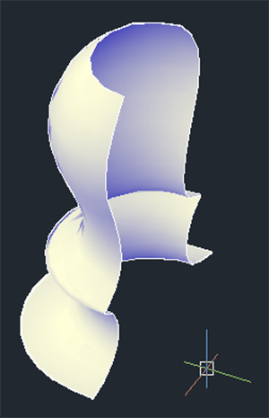
On sait que pour modifier une spline on peut afficher des sommets de contrôle qui permettent de faire ça. C'est ce que nous allons faire ici. La surface que nous avons créée sur la base d'une spline a héritée des mêmes fonctionnalités de modifications. Ce qui veut dire que nous allons pouvoir également modifier la surface comme une spline. Pour afficher les sommets de contrôle d'une surface NURBS, il va falloir utiliser cet outil :
Sélectionnez votre surface, cliquez sur cet outil et observez le résultat :
On constate que plusieurs sommets de contrôle viennent d'apparaître autour de la surface. C'est grâce à ces petits points que l'on va pouvoir modifier notre surface. Pratique n'est-ce pas ? D'ailleurs, essayez d'en modifier un pour voir.
Aaaaaaargh ! Il y a une grosse boîte de dialogue qui me dit que la modification est impossible, pourquoi ?
:p Ah oui, vous devez me parler de celle-ci :
En effet, j'ai été un peu méchant sur ce coup-là. Ce n'est pas grave, je vais vous expliquer ce qu'il se passe. Les sommets de contrôles qui sont affichés correspondent à ceux de la spline telle qu'elle a été créée. Il vous suffit juste de régénérer les sommets de contrôle afin qu'ils s'adaptent à la surface. Donc, dans le cas où cette boîte de dialogue apparaîtrait de nouveau, vous devrez utiliser cet outil
qui ne se trouve pas très loin de l'affichage des sommets de contrôle. Cliquez dessus puis, dans la boîte de dialogue qui s'ouvre, laissez les paramètres par défaut et validez.
Comme vous pouvez le constater, les sommets de contrôles se sont modifiés afin de coller parfaitement avec la forme de la surface. Vous pouvez désormais modifier votre surface tranquillement.
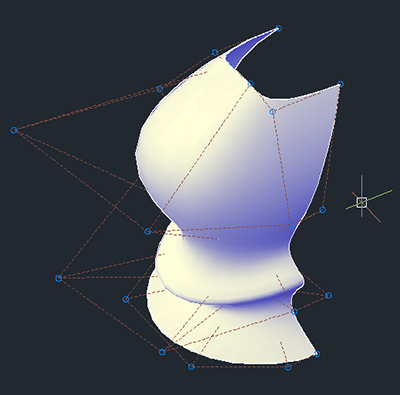
Voilà pour les surfaces. Prenez bien le temps de tout relire si vous ne comprenez pas tout. Et surtout pratiquez afin de bien assimiler la logique des surfaces dans AutoCAD. Ce qui n'est pas toujours évident au début... ;)
Vous voici arrivés au terme de ce gros chapitre sur les surfaces. Prenez quand même le temps de bien digérer tout ça car c'est un gros morceau que vous venez d'avaler. :p J'ai une bonne et une mauvaise nouvelle, la bonne c'est que la suite va être très intéressante également, et la mauvaise c'est qu'il va falloir redoubler d'attention. Un autre gros morceau arrive. :diable:
Voici un chapitre des plus intéressants car vous allez apprendre à modéliser un maillage avec AutoCAD. Cette technique est bien plus souple par rapport aux modélisations de solides ou de surfaces que nous avons vues jusqu'à présent. Tout est possible ou presque ! :-°
L'avantage de cette technique réside dans le fait que vous allez pouvoir en quelque sorte "sculpter" votre conception à partir de sommets, d'arêtes ou de faces présentes dans le maillage.
Nous verrons également certaines techniques pour affiner un maillage, le lisser, le scinder et/ou le plier.
Nous commencerons donc par quelques explications sur ce qu'est un objet maillé. Un objet maillé est une entité constituée de plusieurs lignes se croisant les unes par rapport aux autres. Ces lignes constituent ce que l'on nomme : "un maillage". À partir de là, on peut modeler ce maillage afin de créer n'importe quelle forme comme un visage par exemple.
À l'identique, lorsque votre grand-mère tricote (je ne sais pas si c'est le cas mais c'est pour l'exemple), elle crée des mailles entrelacées les unes aux autres afin de constituer un joli pull ou une belle écharpe. :p
C'est le même principe sous AutoCAD. Nous allons pouvoir créer autant de mailles que nous le souhaitons puis nous allons ensuite leur donner une forme. Cependant, il faut également que vous sachiez que les objets maillés ne possèdent pas de propriété de volume contrairement aux objets solides. Vous ne pourrez pas non plus modifier votre objet avec les poignées d'édition pour la simple et unique raison qu'il n'y en a pas pour les objets maillés.
Mais alors, comment va-t-on faire ?
Rassurez-vous nous allons y venir, ils sont quand même bien plus faciles à modeler grâce aux méthodes que nous allons utiliser dans ce chapitre. Mais avant tout, voyons de quoi est composé un objet maillé (ne vous inquiétez pas si vous n'avez pas le même style visuel, c'est juste pour bien voir les différents composants) :
Un objet maillé est composé de plusieurs sous-objets pouvant être édités individuellement. Ces sous-objets sont les faces quadrillées par les lignes blanches, les arêtes (ligne blanche d'une face) et les sommets qui correspondent au croisement des lignes blanches.
Les faces d'un objet maillé peuvent aussi comporter des facettes internes comme dans l'image ci-dessus (au nombre de quatre par face) suivant le degré de lissage de celui-ci. Le degré de lissage d'un objet maillé va lui donner un affichage plus ou moins lisse. Voici dans l'ordre cité plusieurs exemples de sous-objets composant un objet maillé (cliquez pour agrandir) :
De gauche à droite nous avons une facette (à ne pas confondre avec une face), quatre sommets et une arête.
Tout comme les solides 3D, on dénombre pas moins de sept objets primitifs maillés. On y trouve la boîte (cube), le cône, le cylindre, la pyramide, la sphère, le biseau ainsi que notre bon vieux tore. Tous ces objets primitifs se situent dans le groupe de fonctions "Primitives" de l'onglet "Maille" :
À cela s'ajoute une boîte de dialogue d'options communes à tous les objets. Cette boîte de dialogue vous permet de configurer tous les objets primitifs que vous souhaitez utiliser dans une modélisation. À côté du nom du groupe de fonctions (ici c'est "Primitives") se trouve une petite flèche qui va servir à afficher cette fameuse boîte. Cliquez dessus.
Grâce à cette boîte, vous pouvez modifier (affiner) le nombre de mailles de chaque objet dans toutes les directions et modifier le niveau de lissage de ceux-ci. Je ne vous ferai pas l'affront de vous montrer comment on fait, vous trouverez par vous-même. ^^
Une fois vos objets configurés selon votre goût, vous pourrez travailler tranquillement avec. D'ailleurs, commençons par apprendre à lisser un objet.
Lisser un objet maillé va nous permettre d'obtenir une surface moins angulaire et donc plus lisse. Vous devez déjà savoir, si vous avez bien suivi, qu'un objet maillé est composé de plusieurs subdivisions et que dans chaque face on trouve plusieurs facettes. Eh bien, en augmentant le niveau de lissage d'un objet nous allons augmenter le nombre de facettes présentes dans chaque face. Voici les différentes valeurs des niveaux de lissage que l'on peut utiliser dans AutoCAD :
0
Aucun lissage.
1
Objet pas très lisse.
2
Objet peu lisse.
3
Objet lisse.
4
Objet très lisse.
Afin de vous illustrer les différences de lissage, voici une image correspondante aux niveaux réunis de 0 à 4 et de gauche à droite :
Pour lisser un objet maillé, sélectionnez l'objet puis cliquez sur
. Chaque clic sur cette outil augmentera la valeur de lissage d'une unité (4 étant le maximum). À l'inverse, vous pouvez diminuer le lissage en utilisant l'outil
L'affinement d'un objet maillé va augmenter son nombre de mailles en transformant les facettes (présentes dans une face) en faces. Cette transformation est dépendante du lissage initiale de l'objet. Plus le niveau de lissage de votre objet est important et plus nombreuses seront les mailles de cet objet après un affinement.
Vous n'êtes pas non plus obligé d'affiner l'objet complet. Vous pouvez affiner seulement quelques parties de cet objet en appliquant un filtre de sélection par face par exemple. Voyons tout cela de plus près. Nous allons créer une boîte maillée et lui affecter une valeur de lissage de 1. Nous allons ensuite sélectionner cet objet puis utiliser l'outil
. Voici le résultat, à gauche l'objet original et à droite l'objet affiné :
Contrairement au lissage, l'affinement a multiplié le nombre de faces de l'objet et non le nombre de facettes contenues dans chaque face.
Pour modifier les mailles d'un objet, vous avez la possibilité d'utiliser, en sélectionnant les composants de maillage que vous souhaitez modeler, les différents outils de modification disponibles dans le groupe de fonctions "Édition des maillages" de l'onglet "Maille". Ces outils vous permettront de scinder, extruder, réduire et/ou fusionner les faces et le maillage de vos objets.
Scinder le maillage
Cette technique permet de diviser le maillage d'un objet en plusieurs parties afin d'affiner une zone précise. Pour réaliser cela, nous avons besoin de sélectionner une face puis deux points situés sur deux arêtes différentes (un point sur une arête puis un second point sur une autre arête).
Pour réaliser la même opération que dans l'image ci-dessus, cliquez sur l'outil
, sélectionnez une face puis choisissez un point sur une arête puis un second point sur une autre arête. Vous savez désormais diviser une face en plusieurs parties ! ^^
Extruder le maillage
En fait, ce terme n'est pas tout à fait exact. Ce que l'on extrude ici est une face et non un maillage. Certes, cela va ajouter des mailles supplémentaires à notre objet mais c'est grâce à l'extrusion de la face. Voici un exemple :
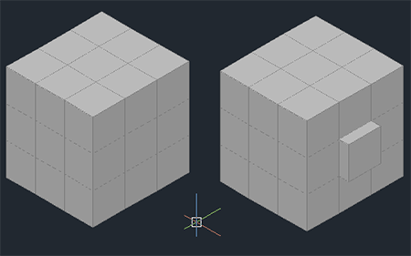
Afin d'obtenir ce résultat, il suffit de choisir l'outil
, sélectionner la face ou les faces à extruder, appuyer sur Entrée puis déplacer votre souris dans la direction de l'extrusion. Vous pouvez également taper une valeur pour plus de précision.
Réduire le maillage
Le fait de réduire le maillage permet de réunir les sommets d'une face en un seul et même point. Pour bien vous montrer de quoi je parle, voici l'illustration en question :
L'outil qui va permettre de réduire une face ou une arête afin d'en modifier le maillage se situe dans le menu déroulant du groupe de fonctions "Édition de maillage". Vous pouvez le tester dès maintenant. Créez une boîte maillée puis cliquez sur
. Sélectionnez une face ou une arête sur le cube puis observez le résultat.
Fusionner le maillage
Ce concept n'est pas tellement difficile à comprendre puisqu'il s'agit de fusionner plusieurs faces entre elles. En voici un exemple très concret sur une sphère (histoire de changer un peu) :
L'utilisation de l'outil
est très simple. Cliquez sur cet outil, sélectionnez les faces à fusionner puis validez avec la touche Entrée.
Grâce à toutes ces nouvelles techniques, vous allez pouvoir commencer à modéliser vos premiers objets maillés.
Mais, ce n'est pas ce que l'on vient de faire ?
Si, mais jusqu'à présent nous nous sommes entraînés avec des objets de base. Avant de passer aux choses sérieuses, nous allons étudier encore (et oui :-° ) un nouveau concept. Allons, allons, on ne relâche pas son attention.
Vous avez très certainement remarqué lors du lissage d'un objet que ses angles s'arrondissent. Pour remédier à ce phénomène, vous pouvez utiliser l'outil de pliage qui va nous permettre d'obtenir un angle vif. Cet angle vif sera appliqué à l'arête sélectionnée. Observons la différence après l'application de cette commande sur trois arêtes d'une boite maillée ayant été lissée à son niveau maximum :
Commencez par créer une boîte maillée puis appliquez le filtre de sélection par arête. Cliquez sur :
puis sélectionnez les arêtes que vous souhaitez plier et validez avec Entrée.
Laissez la valeur par défaut ("toujours") puis validez à nouveau. À partir de maintenant, vous pourrez avoir des angles vifs même avec un niveau de lissage maximum. C'est très pratique pour certaines zones de votre modèle que vous souhaitez rendre plus angulaires. Pour supprimer un pliage, utilisez l'outil :
Les valeurs de pli
Vous avez remarqué que vous pouviez affecter une valeur à un pli. Nous avons laissé la valeur par défaut "toujours". Cela signifie que le pli sera toujours conservé, quel que soit le niveau de lissage de l'objet.
Mais alors ça veut dire que l'on peut régler le niveau du pli en fonction du niveau de lissage ?
Oui. On peut donc en conclure que, ayant attribué une valeur au pli (de 1 à 4), ce pli commencera à être affecté par cette valeur uniquement lorsque le niveau de lissage l'aura atteinte. Autrement dit, une valeur de lissage réglée sur 2 n'affectera pas un pli réglé sur 3. Si le niveau de lissage passe à 3, le pli commencera à être affecté par le lissage de l'objet. La valeur "toujours" signifie bien que le pli restera toujours présent quelle que soit la valeur de lissage.
Ce chapitre se termine ici. Vous avez aussi la possibilité de sculpter vos objets à l'aide des filtres de sélection. Si vous souhaitez sculpter à main levée, désactivez le repérage polaire, le repérage d'accrochage aux objets ainsi que l'accrochage aux objets. Cela vous simplifiera grandement les choses et n'interfèrera pas avec votre créativité. :p
Nous voici arrivés à la fin de ce chapitre. Relisez-le plusieurs fois. Ce n'est pas un conseil, c'est un ordre ! :pirate:
Beaucoup de notions ont été abordées ici et il est donc indispensable de bien maîtriser tout cela. Le chapitre suivant sera un peu plus cool, c'est promis. Je vous expliquerai comment affecter une couleur à vos objets 3D et peut-être même comment leur affecter un matériau et une texture. ;)
Dans ce quatorzième chapitre sur l'apprentissage du dessin en 3D avec AutoCAD, nous allons aborder l'application de couleurs, de matériaux et de textures sur les objets dans le but de les rendre plus réalistes.
Il est possible de colorier nos objets 3D afin de mieux les différencier mais il est également possible de leur appliquer un matériau pour les rendre un peu plus réalistes, et même plus encore à l'aide d'une texture. :)
Entrons tout de suite dans le vif du sujet. Lorsque vous concevez des objets complexes en 3 dimensions, il arrive parfois en fonction du nombre d'objets présents dans l'interface d'avoir du mal à s'y retrouver. C'est tout à fait normal, plus il existe d'objets et plus il est difficile de les repérer. Pour résoudre ce problème, vous avez la possibilité d'appliquer des couleurs aux objets 3D.
Appliquer une couleur à un objet
Voici comment appliquer une couleur à un objet. Avant tout, reproduisez le modèle ci-dessous à l'aide de solides. N'oubliez pas de les unir.
Une fois que l'union des objets est appliquée, sélectionnez l'objet, faites un clic droit sur l'objet puis choisissez "Propriétés". La palette des propriétés s'affiche. Rendez-vous dans l'onglet "Général" puis sur la ligne "Couleur", et choisissez la couleur qui vous plaît le plus. Voici le résultat :
Vous pouvez appliquer toutes les couleurs que vous souhaitez à chaque objet 3D. Simple, rapide et efficace n'est-ce pas ? ^^
OK, mais alors si je ne veux colorier qu'une partie de mon objet, comme je fais ?
Eh bien il vous suffit d'utiliser la sélection par filtre ! Appliquez un filtre de sélection par face et affichez les propriétés de la face à l'aide d'un clic droit. Vous pouvez alors affecter une couleur par face. La preuve avec cette pyramide :
Si vous souhaitez être encore plus précis dans l'application de couleurs sur un modèle, je vous conseille d'utiliser les objets maillés.
L'application de couleurs aux objets pour les différencier, c'est bien, mais on atteint vite les limites de cette méthode lorsqu'il s'agit de rendre un objet un peu plus réaliste. C'est là que l'application de matériaux aux objets intervient. Allez, avouez que ce panneau de matériaux présents depuis le début dans l'interface en 3D vous démangeait un peu, hein ! Pour ceux d'entre vous qui ne le voient pas, ne vous inquiétez pas, je vous explique comment l'afficher juste après.
Bonne nouvelle, AutoCAD nous offre une multitude de matériaux à appliquer à nos objets en 3D. Tous ces matériaux sont présents dans la bibliothèque de matériaux standards. On trouve cette bibliothèque dans le navigateur de matériaux. Si vous ne voyez pas de quoi je parle, c'est que le navigateur de matériaux n'est pas actif. Pour l'afficher, rendez-vous dans le groupe de fonction "Palettes" de l'onglet "Vue" puis cliquez sur
le bouton d'affichage du navigateur.
Voici notre fameux navigateur de matériaux. Ancrez-le sur le côté droit de l'interface en le déplaçant avec la souris. Comme on peut le voir, la bibliothèque Autodesk comprenant tous les matériaux par défaut est bien présente. C'est dans cette bibliothèque que vous allez trouver une multitude de matériaux prêts à l'emploi. L'avantage de cette bibliothèque est qu'elle est très complète comme vous pourrez le découvrir dans un instant. Les matériaux sont regroupés en plusieurs thèmes, ce qui facilite grandement la recherche d'un rendu précis. Voici les différents thèmes que l'on trouve :
Et dans chaque thème se trouvent plusieurs dizaines de matériaux. Cela nous fait une belle collection déjà toute prête. :)
Attribuer un matériau à un objet en 3D
Voyons comment attribuer un matériau à un objet. Placez-vous en style visuel réaliste, sélectionnez l'objet en question puis effectuez un clic droit sur le matériau choisi. Dans le menu contextuel qui s'affiche, choisissez "Affecter à la sélection". Vous pouvez aussi faire glisser le matériau vers l'objet sur lequel vous souhaitez l'appliquer. Voici ce que l'on peut obtenir en quelques clics de souris :
Vos objets commencent à ressembler à quelque chose, maintenant. Vu la taille de la collection des matériaux par défaut, vous allez pouvoir y passer quelques heures. Mais avant cela, j'aimerais vous montrer un aspect un peu plus technique concernant les matériaux dans AutoCAD. Nous allons créer nos propres matériaux personnalisés ! :-°
Un matériau possède plusieurs propriétés éditables via un éditeur prévu à cet effet. Nous pouvons créer des matériaux vierges de toutes propriétés, des matériaux en fonction d'un modèle prédéfini ou des matériaux en fonction de la copie d'un matériau existant.
L'éditeur de matériaux
L'éditeur de matériaux va permettre la modification de l'apparence du matériau via plusieurs propriétés. Prenons le cas d'un matériau vierge (générique). Pour créer ce type de matériau, cliquez sur
dans le navigateur de matériaux (en haut à gauche) et choisissez "Générique".
Laissez-moi vous expliquer. L'éditeur de matériaux comporte deux onglets principaux dans lesquels nous allons entrer certaines données afin de modifier l'apparence du matériau et lui attribuer certaines informations comme un nom, une description ou des mots clés. L'apparence sera modifiée à l'aide des zones déroulantes décrites ci-dessous :
Générique
Permet de régler l'aspect global de l'objet comme sa couleur ou son apparence via une texture par exemple.
Réflectivité
Permet de régler les reflets de l'objet. Utile si vous souhaitez obtenir un matériau mat ou un effet miroir.
Transparence
Comme son nom l'indique, cette zone permet de régler la transparence d'un objet mais aussi son indice de réfraction (nous en parlerons plus loin).
Découpes
Permet de gérer la perforation du matériau à l'aide d'une texture en niveaux de gris. Plus les couleurs de la texture seront claires et plus le matériau sera opaque et inversement.
Auto-éclairement
Cette zone permet au matériau de produire sa propre lumière. Très utile si vous souhaitez simuler la lumière d'une lampe. L'auto-éclairement n'éclaire pas les autres objets.
Relief
Permet de simuler le relief d'un matériau à l'aide d'une texture. Plus les couleurs de la texture seront claires et plus ces couleurs paraîtront hautes et inversement.
Mini-TP guidé : Le cas d'un verre
Un peu de divertissement ne va pas nous faire de mal. Prenons le cas d'un verre. Afin de concevoir un tel matériau, il va nous falloir plusieurs paramètres. Nous devrons gérer la transparence bien entendu, la couleur du verre et l'indice de réfraction. Pour être un peu plus clair, la réfraction correspond à la manière dont la lumière traverse un objet. Les objets vus au travers d'un verre sont déformés (faites l'expérience). Nous devrons donc gérer cette déviation de la lumière au travers de l'objet grâce à un indice de réfraction. Pour information, sachez qu'un indice de 1.0 ne déforme rien contrairement à un indice supérieur. Comme je suis en forme, je vous ai préparé un petit tableau récapitulatif contenant plusieurs indices de réfraction correspondant chacun à un matériau :
Matériaux
Indices de réfraction
Matériaux
Indices de réfraction
Air
1.00
Eau
1.33
Eau sucrée à 30%
1.38
Eau sucrée à 80%
1.49
Alcool pur
1.329
Acétone
1.36
Azote liquide
1.2053
Hydrogène liquide
1.0974
Oxygène liquide
1.221
Nylon
1.53
Plastique
1.46
Plexiglass
1.50
Pyrex
1.47
Verre classique
1.38
Crystal
1.32
Glace
1.309
Quartz
1.544
Silicone
3.96
Diamant
2.417
Rubis
1.76
Saphir
1.76
Emeraude
1.576
Opale
1.45
Topaze
1.62
Bon, je pense que l'on a de quoi faire avec ça. Votre client vous demande de lui concevoir un verre en pyrex car il souhaite pouvoir faire chauffer son thé à l'aide d'une plaque au gaz sans crainte que celui-ci explose. Drôle d'idée me direz-vous, mais un client est un client et nous devons supporter tous ses caprices... ou presque. :-°
Vous devez donc créer un matériau qui ressemblera exactement au pyrex. Donnez un nom à votre matériau dans le champ de la zone "Nom" de l'onglet "Apparence" (personnellement, j'ai choisi "Verre en pyrex"). Ensuite, nous allons régler l'état de surface du matériau afin qu'il ne paraisse pas trop terne. Pour cela, il va falloir modifier la valeur de la zone "Lustre" afin d'obtenir un effet de verre parfaitement poli. Augmentez cette valeur jusqu'à 100.
Cochez la case "Réflectivité" pour régler le reflet de la lumière sur la surface du verre. Baissez les valeurs à 10 pour éviter que notre verre ressemble à un miroir. Comme vous pouvez le voir, l'image d'aperçu de votre matériau se met à jour à chaque modification. C'est assez pratique pour affiner les paramètres du matériau en fonction de ce que l'on voit réellement.
Passons au plus important, la transparence. Cochez la case "Transparence" puis augmentez la zone "Quantité" jusqu'à 95. On augmente la quantité afin d'éliminer au maximum l'opacité du verre tout en conservant sa teinte. Dans la zone "Réfraction", attribuons l'indice de réfraction du pyrex (1.47). Rendez-vous dans l'onglet "Information" puis entrez une description si vous le souhaitez. Fermez l'éditeur de matériau. Voici à quoi devrait ressembler votre matériau :
Votre nouveau matériau se situe désormais dans la partie supérieure du navigateur de matériaux. Vous pouvez modéliser un verre puis lui appliquer votre matériau pyrex. Ne vous inquiétez pas si le résultat ne donne pas grand chose dans votre zone de dessin. Ce type de matériau s'apprécie visuellement lors d'un rendu (ne vous occupez pas de ça pour le moment). Voici à quoi ressemblera réellement votre verre :
Cette fois ça y est, vous savez créer vos matériaux. Surtout, n'hésitez pas à expérimenter. Les plus curieux d'entre vous auront remarqué dans l'éditeur de matériaux, une zone "Image" dans la partie déroulante "Générique". Cette zone permet d'affecter une image au matériau que l'on définit comme étant une texture. En effet, dans certains cas, les réglages par défaut de l'éditeur ne suffisent plus à satisfaire le rendu des matériaux complexes. On peut donc utiliser une texture que l'on va pouvoir paramétrer également. En prenant l'exemple de l'image ci-dessus, le sol sur lequel repose le verre est un matériau utilisant une texture.
Les textures vont nous permettre de rendre nos objets encore plus réalistes grâce aux images que nous allons appliquer aux matériaux. Ainsi, nous pourrons donner à nos objets plus de détails sans pour autant augmenter la complexité du modèle.
Il est possible d'ajouter plusieurs textures dans un matériau par le biais des canaux de texture. Ces canaux de texture vous les connaissez déjà puisqu'il s'agit de la réflectivité, la transparence, l'auto-éclairement, le relief et les découpes. Eh bien je vous annonce que vous avez la possibilité de leur attribuer une image (texture) à chacun. Voici un tableau récapitulant à quoi vont servir les textures pour chaque canal :
Texture de réflectivité
Permet de refléter une image sur la surface de l'objet.
Texture de transparence
Permet de créer un effet de transparence à travers un objet.
Texture d'auto-éclairement
Permet spécifier les zones lumineuses d'un objet si vous souhaitez qu'il ne s'illumine qu'à certains endroits.
Texture de découpe
Permet de rendre le matériau opaque dans certaines zones et transparent dans d'autres.
Texture de relief
Permet de simuler une irrégularité de surface.
Il existe 2 types de textures sous AutoCAD : les textures d'images comme nous venons de le voir et les textures procédurales qui simulent certaines matières ou certains effets comme les tâches, le bois ou un damier par exemple. Concernant les textures d'images, AutoCAD nous permet l'importation de plusieurs formats de fichiers énumérés ci-après :
les formats BMP, DIB ou RLE ;
les formats JFIF, JPG ou JPEG ;
les formats GIF, PNG ou TIFF ;
les formats PCX ou TGA.
En bref, vous avez largement de quoi choisir votre format d'image en fonction de ce que vous souhaitez faire. ^^
L'accès aux propriétés de la texture
Lorsque l'on attribue une texture au matériau, trois propriétés de transformation standard apparaissent. Vous pouvez donc jouer sur la position, l'échelle et la répétition de la texture en fonction de l'objet sur lequel elle sera utilisée. Il va donc falloir modifier ces propriétés standard en fonction de la forme de l'objet. On appelle cette méthode le mappage, ou "mapping" in english.
Le mappage d'une texture correspond à la manière dont une texture est appliquée sur un objet. Il existe en effet plusieurs manières de mapper : les objets en 3D pouvant différer sensiblement les uns des autres au niveau de leur géométrie, on utilise plusieurs méthodes de mappage pour que la texture utilisée s'adapte parfaitement avec un minimum de déformations sur l'objet. Vous utiliserez principalement quatre méthodes de mappage dans AutoCAD :
le mappage cartésien, qui répète l'image utilisée sur chaque face d'un solide de type parallélépipède ;
le mappage planaire, qui projette l'image sur le solide (comme un projecteur vidéo sur un écran de cinéma) ;
le mappage cylindrique, qui enroule l'image horizontalement autour d'un cylindre. La hauteur de l'image est adaptée à la hauteur du cylindre ;
le mappage sphérique, qui adapte l'image en la plaquant sur une sphère. Les côtés supérieur et inférieur de l'image sont rétractés au sommet et au pied de la sphère.
Le mappage
Pour apprendre à mapper, il va nous falloir au minimum une image. La voici :
Nous commencerons par un mappage simple. Comme expliqué précédemment, le mappage consiste à plaquer une image sur la surface d'un objet. Le support de cette image sera un panneau signalétique. Avant de modéliser tout cela, voici comment appliquer une image à un nouveau matériau : créez un nouveau matériau que vous nommerez "panneau casque" par exemple. Il faut que les noms donnés à vos matériaux soient un minimum explicites afin de mieux comprendre par la suite à quoi et sur quel type d'objet ils peuvent servir. C'est simplement une question d'organisation.
Cliquez sur la zone "Image" puis allez chercher l'image sur votre ordinateur. Affichez le cube dans la zone d'aperçu pour vous donner un première idée. Pour faire cela, cliquez sur la petite flèche en bas à droite de l'image d'aperçu et sélectionnez "Cube".
Vous avez même la possibilité de régler la qualité d'affichage de la zone d'aperçu. Elle est réglée ici sur qualité moyenne. Plus vous augmentez la qualité et plus la mise à jour de l'image à chaque modification sera longue. Faites un clic droit dans la zone de l'image et choisissez "Modifier l'image".
Une autre boîte de dialogue s'ouvre et vous permet d'éditer votre image. Dans la zone déroulante "Transformation", réglez la taille de votre échantillon à 400 en largeur et 250 en hauteur afin de réadapter la texture. Réglez ensuite la répétition sur "Aucun" et fermez les deux boîtes de dialogue. Rappelez-vous que votre échantillon mesure désormais 400x250. La zone sur laquelle sera plaquée l'image devrait en théorie faire la même dimension. Ce n'est cependant pas nécessaire car nous pouvons placer cette image manuellement à l'aide des gizmos de mappage. :waw:
Effectivement, il existe aussi des gizmos pour le mappage. Ceux-ci vont grandement nous faciliter la tâche. Grâce à eux, vous pourrez faire du mappage planaire, du mappage cartésien, du mappage cylindrique et enfin du mappage sphérique. Voyons comment appliquer cette nouvelle texture sur un objet. Dans l'onglet "Rendu", allez dans le groupe de fonctions "Matériaux" et déroulez le menu "Mappage de matériaux".
Voici nos fameux gizmos de mappage qui vont nous permettre de sélectionner notre méthode de mappage. Ne sélectionnez rien pour le moment, c'est juste pour vous montrer où ils se situent. Dessinez un panneau d'une dimension supérieure à votre échantillon et appliquez votre nouvelle texture sur la face avant de votre objet.
Voici ce que cela donne chez moi. Comme vous pouvez le constater, la texture n'est pas vraiment centrée. C'est à ce moment là qu'interviennent les gizmos de mappage. :magicien:
Vu que la surface d'objet sur laquelle nous souhaitons appliquer notre texture est plate, nous utiliserons une méthode de mappage cartésienne.
Euh... juste une minute. Pourquoi on n'utilise pas la méthode planaire ?
Bonne question, car notre image n'est pas centrée sur le panneau. Cela risque d'altérer l'image lors d'un déplacement (vous pouvez essayer). Appliquez le gizmo "Boîte", sélectionnez votre objet et tapez sur Entrée.
Observez bien ce qu'il se passe. L'objet sélectionné se met en surbrillance, plusieurs flèches bleues apparaissent autour de l'objet et un gizmo déplacement se place dans le coin inférieur gauche. Les flèches bleues servent à étirer votre texture sur votre objet. Vous pouvez soit étirer votre texture afin qu'elle colle parfaitement avec la face de l'objet ou vous pouvez la déplacer pour la centrer. Pour ma part j'ai choisi de centrer ma texture à l'aide du gizmo déplacement. Placez-vous en vue de face et sur le gizmo, cliquez 1 fois sur l'axe X (rouge). Décalez votre texture sur la droite pour la centrer et cliquez pour l'ancrer. Faites de même pour l'axe Y (bleu) dans le sens de la hauteur. Validez avec Entrée.
Voilà, ce n'est pas plus compliqué que ça. Bon, je vous l'ai déjà dit mais n'hésitez pas à expérimenter. Encore une fois, c'est en forgeant que l'on devient forgeron. Utilisez les autres gizmos de mappage sur des objets plus complexes. Ah oui, une dernière chose avant de partir, si vous souhaitez garder vos matériaux personnels, il va falloir les enregistrer dans une bibliothèque. Sous la bibliothèque de matériaux standard d'Autodesk, "Mes matériaux" est l'endroit idéal pour stocker vos matériaux.
Enregistrer un matériau perso
Pour enregistrer un matériau personnel, il suffit simplement de créer une catégorie (si vous le souhaitez) en faisant un clic droit sur "Mes matériaux" puis de choisir "Créer une catégorie". Nommez votre catégorie puis faites glisser votre matériau dessus.
Votre matériau est enregistré et vous pourrez le réutiliser à l'infini.
N'oubliez pas que vous pouvez attribuer une image à chaque canal de texture. Pour cela, il suffit de vous rendre dans l'un des canaux de texture et de dérouler le menu à l'aide de la petite flèche droite. Enfin, choisissez "Image".
J'espère que ce chapitre sur les matériaux vous a plu, car pour le chapitre suivant nous allons mettre en pratique tout ce que nous avons vu dans cette partie sur la 3D. Un beau TP vous attend ! :D
Prenez bien le temps de comprendre ce que vous faites et surtout de savoir pourquoi vous le faites, car je ne vous guiderai pas pour ce TP. Loin de moi l'idée de vouloir vous punir mais il faut que vous pratiquiez un minimum. En avant pour ce premier TP en 3D !
Bienvenue pour votre premier travail pratique en 3D sur AutoCAD. Vous avez réussi à suivre jusqu'à présent et je vous en félicite. AutoCAD est réputé comme étant un peu une "usine à gaz" à cause de ses mille et une fonctionnalités. Mais c'est aussi ce qui lui donne toute sa puissance et sa modularité. Et je peux ajouter aussi que nous sommes encore loin d'en avoir fait le tour. Mais ne nous décourageons pas, c'est tellement passionnant. ^^
Vous allez utiliser ici un bon nombre de concepts abordés tout au long du tutoriel. Avant de vous lancer dans la conception de cet ouvrage, je vous conseille de réfléchir un minimum. N'hésitez pas à prendre une feuille blanche pour exposer votre méthodologie de travail et faites un croquis. Demandez-vous d'abord avec quel outil pourriez-vous modéliser telle ou telle pièce. Quel serait l'outil le plus adapté à la situation. Bon courage et bonne conception.
Voici le contexte dans lequel vous vous trouvez actuellement : vous êtes un jeune diplômé dynamique, motivé, enthousiaste et vous mourez d'envie de faire vos preuves dans ce monde impitoyable. Jusque là, rien de plus normal. :p Vous venez de vous faire embaucher par la Sebmag International Ltd. qui vous confie votre première mission. Ce gigantesque groupe mondialement connu est spécialisé en design architectural et en aménagement urbain.
Votre mission, si vous l'acceptez (et soit vous l'acceptez, soit vous vous faites virer ^^ ), sera de concevoir pour son meilleur client, le design d'une véranda peu commune. La transparence et la luminosité seront les maîtres mots.
Monsieur SCHMOUK Alfred (ne me demandez pas où j'ai été cherché ce nom) est un client que l'on peut classer dans la catégorie des "SuperChiantsQuiPayent". Catégorie dans laquelle il excelle particulièrement et sans aucun mal. Monsieur SCHMOUK nous demande donc de lui concevoir le prototype d'une véranda hors du commun, alliant à la fois transparence et luminosité dans un style un peu "nature".
Il exige pour ce design d'avoir un maximum de détails visuels lui permettant de mieux apprécier le rendu final. Il rédige pour cela un cahier des charges afin de vous faire part de ses petits caprices de "meilleur client". Bien entendu, si votre design plaît à Monsieur SCHMOUK, vous aurez le droit à une belle prime et la Sebmag International Ltd. se verra attribuer l'affaire du siècle : produire les vérandas SCHMOUK NATURE en série.
Conception d'une véranda de caractère à dominante transparente et lumineuse. Style ornemental naturel à prépondérance animalière ou florale. Structure aluminium en demi hexagone avec ouverture centrale.
Structure des montants et de la toiture
Toute la structure sera en profilés aluminium de couleur claire/pastel ornementés d'un style "Nature". Cette structure devra également permettre la réception du vitrage de la véranda.
Ouverture principale
L'ouverture centrale sera vitrée et voûtée dans sa partie supérieure. Structure en profilés aluminium de couleur claire/pastel ornementés d'un style "Nature". Ouverture à deux battants vers l'extérieur.
Visibilité et vitrage
Double vitrage 4/16/4 obligatoire pour la totalité de la véranda (4/16/4 = 4mm de verre, 16mm de vide et 4mm de verre). Teinte légèrement fumée. Le vitrage perpendiculaire au sol devra couvrir la quasi totalité de la hauteur.
Environnement de pose
La pose de la véranda sera effectuée contre un mur d'habitation existant sur une surface plane. Cette habitation devra comporter une ouverture permettant l'accès à la véranda. Les murs de la véranda devront s'ajuster perpendiculairement au mur de l'habitation.
Dimensions générales
La véranda ne devra pas excéder 5 mètres en largeur et 4 mètres au point le plus haut.
Divers : Accessoires
L'intérieur de la véranda devra comporter un minimum de mobilier pour un aperçu plus réaliste. Posée sur une dalle et contre un mur d'habitation, la véranda devra se marier parfaitement avec l'environnement extérieur. Il serait judicieux de placer quelques arbres et un peu de pelouse.
Voilà pour le cahier des charges. Je peux vous certifier que vous avez de quoi faire. Réfléchissez bien à votre méthodologie de travail afin de gagner un maximum de temps. N'hésitez pas à relire certains chapitres si vous avez des doutes.
Quelques outils utiles
Voici quelques pistes avant de commencer votre modélisation. Tout d'abord, vous aurez besoin à un moment de copier certaines arêtes pour les extraire d'un ou de plusieurs solides. Vous devrez utiliser l'outil "Copier des arêtes" présent dans le menu déroulant ci-dessous.
Bien entendu, je vous laisse le soin de deviner comment il fonctionne. Une fois que vos arêtes seront extraites, vous aurez besoin de l'outil
Polyligne 3D afin de repasser par les points d'extrémité des arêtes copiées dans le but de réaliser une extrusion par la suite. Une fois votre polyligne 3D dessinée, n'oubliez pas de supprimer les arêtes que vous avez copiées.
Pour vous aider à positionner vos objets en 3D, utilisez l'outil
"Aligner 3D" présent dans le groupe de fonctions "Modification" de l'onglet "Début". Cliquez sur cet outil, choisissez l'objet à positionner, indiquez 3 points différents sur ce même objet puis indiquez les 3 autres points de l'objet sur lequel votre modèle devra s'aligner. Attention à l'ordre des points sélectionnés.
N'oubliez pas que vous faites un design et non un plan de fabrication. Vous pouvez donc limiter la modélisation de certains détails tout en gardant à l'esprit que SCHMOUK est pointilleux ! Bon courage, vous avez 1 heure (non, je plaisante). Prenez bien votre temps et faites-moi un design qui tue. :p
Bien, commençons cette correction. Je vais vous expliquer ma méthodologie. Ce n'est pas forcément la meilleure mais c'est celle que j'ai choisie afin de bien différencier chaque élément.
L'environnement (partie 1)
Tout d'abord, il va me falloir un sol sur lequel poser ma véranda. Ensuite, il me faut le mur sur lequel cette véranda sera appliquée. Je modélise donc rapidement la dalle et le mur de l'habitation avec son ouverture permettant d'accéder à la future véranda.
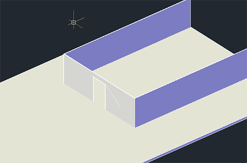
Je dessine ensuite la base de mon toit avec la géométrie qui formera la pointe du toit et la géométrie qui formera le toit. Je n'ai utilisé que des solides jusqu'à maintenant. ;)
J'extrude et je positionne le tout. Je fusionne la pointe du toit avec le mur pour qu'ils ne forment plus qu'un seul élément et je laisse le toit à part en réalisant un appuyer/tirer de 500mm pour le débordement.
Mon environnement de base est prêt. Je passe à la réalisation de mes profilés en aluminium.
La structure des montants et des traverses
Il faut que je prépare la coupe des montants en prenant soin de dessiner les rainures qui réceptionneront le double vitrage. J'extruderai ensuite ces bases de montants pour les former. Voici mes 4 bases de montants :
Avant de dessiner les montants, je dessine un demi hexagone afin que mes bases de montants épousent parfaitement les angles et soient alignés sur cette forme (hexagone = 6 côtés).
Mes bases de montants étant placées, je n'extrude qu'une moitié dans l'idée de réaliser une symétrie un peu plus tard. Je place des bases de montants pour former les traverses supérieures et inférieures. Enfin, je fusionne le tout et je crée une symétrie.
La structure de base de la véranda est créée. Je lie les 2 parties avec une traverse supérieure et je modélise un battant de porte en prenant soin de modéliser une demi voûte à l'intérieur.
Je peux enfin placer le battant dans l'encadrement central et effectuer une symétrie pour construire le second battant. Je rappelle que vous auriez pu tout modéliser en même temps (les montants et le vitrage) puis effectuer les symétries en dernier. ;)
La structure des murs est terminée. Je vais pouvoir m'attaquer au toit.
La structure du toit
Pour créer la structure de mon toit, je dessine des axes de repère qui me permettront de guider mes profilés en aluminium. Ceci étant fait, je positionne les bases de mes profilés, auparavant créés, dans le sens de mes axes. J'extrude mes bases le long de ces axes pour former la structure du toit. Après quelques opérations booléennes, je positionne mon toit sur la véranda et je fusionne le tout.
Le double vitrage
Pour le double vitrage, rien de plus simple, il va falloir copier certaines arêtes présentes dans les encadrements pour pouvoir créer les bases des vitres. J'utilise donc les outils adéquats pour réaliser l'opération afin de créer mon double vitrage que je positionne ensuite dans les encadrements.
Je prolonge mes vitres jusqu'au sommet de l'encadrement à l'aide des poignées de contrôle. L'opération sera répétée pour les autres vitres. Les côtés étant terminés, je peux m'attaquer aux vitres du toit (un peu plus délicat). Comme tout à l'heure, je copie les arêtes et je forme ma polyligne 3D à partir de celles-ci.
La première polyligne est enfin formée. Je peux l'extruder de 4mm pour former la vitre. Je répète l'opération pour les autres côtés et je positionne mes vitres en m'alignant dans les rainures de mes profilés.
Les battants de porte
Pour la porte il va falloir créer des rainures, je vais donc copier les arêtes qu'il faut puis les décaler de 10mm de chaque côté. Je fabrique ensuite le double vitrage que je positionne dans l'encadrement d'un des battants. J'effectue une soustraction pour créer les rainures puis je recommence pour créer mon double vitrage.
L'ornementation
Reste à créer l'ornement pour terminer la modélisation de la véranda. C'est à ce moment que votre créativité entre en jeu. Libre à vous de faire ce qu'il vous passe par la tête tant que vous respectez les consignes de SCHMOUK. :p
Je préfère vous prévenir à l'avance, je suis loin d'être un super designer mais voici ce qu'il m'est venu à l'esprit :
Faisons une pause un instant. Après tout ce que l'on vient de faire, on le mérite bien... C'est bon, on peut y retourner !
À l'identique des battants de portes, j'ai créé une base en 2D que j'ai extrudée pour former l'ornementation des fenêtres, les arêtes des fenêtres ayant été copiées au préalable. J'ai ensuite aligné l'ornement à l'aide de l'outil
"Aligner 3D" qui s'est révélé être très pratique dans un cas comme celui-ci. Il m'a permit d'aligner toute l'ornementation sur les mêmes plans que les différentes faces de la véranda.
Le mobilier
Pour le mobilier, je n'ai rien à ajouter si ce n'est que j'ai utilisé des objets maillés pour le fauteuil. Je les ai placés ensuite devant le mur de la maison de manière à ce qu'ils se retrouvent à l'intérieur de la véranda.
J'ai également créé un sol pour la véranda afin d'y appliquer une texture. Pour cela, devinez ce que j'ai utilisé... Une surface bien sûr ! :)
J'ai positionné ma véranda contre le mur de la maison. Il ne me reste plus qu'à appliquer mes matériaux à tout l'ensemble.
Résultat
Voici le résultat avec les matériaux :
Après un rendu :
J'espère que ce TP vous a plu et vous a donné l'envie d'en découvrir encore plus, car c'est ce que nous allons faire. :)
Afin de créer des représentations en deux dimensions à partir d'objets en trois dimensions, nous allons découvrir dans ce chapitre plusieurs méthodes permettant de réaliser des vues isométriques et des coupes en 2D et en 3D.
Ceci sera réalisé dans un unique but : préparer nos modèles pour une mise en plan ultérieure. À l'issue de ce chapitre, vous serez capables de créer différentes vues, coupes et sections afin de faciliter la fabrication de ces pièces destinées aux ateliers. ;)
Le fait d'aplanir la géométrie d'un objet en 3D permet de prendre un cliché de la vue en cours et de la représenter sur le plan XY.
Pourquoi faire ça alors qu'on a déjà la pièce en 3D ? On ne peut pas directement faire une mise en plan avec ?
Si, on peut effectivement faire une mise en plan avec un objet 3D mais lorsque vous devez envoyer vos fichiers aux ateliers de fabrication, la taille des fichiers en question peut poser problème ! Ceux-ci peuvent atteindre plusieurs dizaines de méga-octets contre quelques dizaines de Kilo-octets sur des fichiers en 2D. Et le fait d'aplanir la géométrie permet de convertir l'objet de la vue courante en 2D. On pourra par la suite récupérer cette représentation 2D pour l'inclure dans un plan de fabrication destiné aux ateliers.
Prenons le cas sur un objet simple. Placez-vous en vue isométrique et dessinez un cube. Cliquez sur
dans le groupe de fonctions Coupe (menu déroulant) de l'onglet Début. Voici ce que vous obtenez :
La boîte de dialogue Aplanir la géométrie vous permet de régler certains paramètres de représentation. Vous avez la possibilité de choisir la destination de la vue ainsi générée. Vous pouvez donc, au choix :
L'insérer dans votre dessin en tant que nouveau bloc. Dans ce cas, choisissez l'option "Insérer en tant que nouveau bloc".
Remplacer un bloc déjà existant par la vue aplanie.
Enregistrer la représentation dans un fichier. Dans ce cas, sélectionnez l'option "Exporter vers un fichier".
L'apparence de l'objet
Plusieurs options s'offrent à vous concernant l'apparence de l'objet 3D. Les lignes de premier plan représentent les traits visibles de l'objet. Vous pouvez, si vous le souhaitez, affecter ces traits sur un calque ou définir une couleur et/ou un type de ligne. Vous avez également la possibilité d'afficher ou non les lignes foncées. Ces lignes correspondent aux traits cachés par la géométrie de premier plan. Enfin, vous avez la possibilité d'inclure les arêtes tangentielles qui marquent par exemple l'incurvation d'un objet.
Décochez l'affichage des lignes foncées et cliquez sur Créer. La boîte de dialogue se ferme.
Cliquez dans la zone de dessin pour insérer votre géométrie aplanie puis validez 3 fois avec Entrée. Placez-vous en vue de dessus et observez le résultat. La représentation de la vue en 3D a bien été générée en 2D.
Représenter la coupe d'un objet 3D peut être utile dans certains cas, lorsque votre modèle devient plus complexe. Couper la géométrie peut permettre de mieux représenter l'intérieur de l'objet par exemple. ^^
Seulement pour faire cela, il va nous falloir un plan de coupe. Le plan de coupe va permettre de définir la trajectoire de la coupe en fonction du modèle. Nous devrons donc créer un ou plusieurs plans afin de générer une ou plusieurs coupes.
Création d'un plan de coupe
Pour créer un plan de coupe, cliquez sur l'outil
Plan de coupe. Sélectionnez une face de votre modèle ou alignez-vous sur un point pour situer le début du plan de coupe. Étirez le plans de coupe vers la direction choisie et cliquez pour accrocher le second point. Votre plan de coupe vient d'être créé.
Je vous l'accorde, créer un plan de coupe est relativement simple. Une fois votre plan de coupe créé, vous pouvez éditer certains paramètres comme sa position, la limite de la coupe et/ou le volume de coupe. Voici les trois états d'un plan de coupe correspondant à ses paramètres.
De gauche à droite nous avons le plan de coupe, la limite de coupe et le volume de coupe. Tous sont modifiables à l'aide de poignées de contrôle. Il suffit de sélectionner votre plan de coupe, d'y indiquer les paramètres que vous souhaitez ou d'étirer la géométrie pour le modifier. Voici un exemple une fois votre plan sélectionné :
Toutes les petites flèches bleues vous permettent d'éditer votre plan de coupe. Sachez aussi qu'en modifiant la direction de la limite de coupe, vous modifiez la direction de la coupe. Ainsi, tout ce qui se trouve dans le cadre blanc sera visible dans votre coupe.
Création de la coupe
Votre plan de coupe est créé et configuré comme dans l'illustration ci-dessous :
La limite de coupe s'arrête avant les trous du fond. Ils ne seront donc pas représentés dans la coupe (si vous avez bien suivi). Cliquez sur
. Dans la boîte de dialogue qui s'affiche, cliquez sur
et sélectionnez votre plan de coupe. Laissez les paramètres par défaut et cliquez sur Creer. Comme pour aplanir votre géométrie, AutoCAD crée un bloc. Placez ce bloc dans votre espace objet et placez-vous en vue de dessus. Voici ce que cela donne chez moi :
Pouah ! C'est un peu moche là. Tu n'as pas autre chose comme représentation ?
Oui, en effet c'est pas terrible comme représentation mais c'est pour vous montrer le fonctionnement. Il va falloir paramétrer l'apparence qu'auront les sous-objets de notre modèle. Vous pouvez supprimer ce bloc. Recommencez l'opération mais cette fois-ci ne cliquez pas sur Creer directement. Cliquez sur Paramètres de la coupe. Une autre boîte de dialogue s'affiche avec tout un tas de paramètres modifiables.
Ce qui nous intéresse pour le moment c'est le remplissage de la coupe. Le mieux serait d'obtenir des hachures plutôt qu'un remplissage uni. Dans la partie Remplissage de l'intersection, sur la ligne Hachures de la face, choisissez Prédéfinies/ANSI31. Puis, sur la ligne Echelle des hachures tapez 5 et cliquez sur Ok. Vous pouvez créer votre coupe.
Cette coupe en 2D est nettement plus représentative n'est-ce pas ? :D La zone hachurée représente la partie du modèle ayant subit la coupe. Tout ce qui n'est pas hachuré correspond aux zones vides. N'hésitez pas à éplucher tous les paramètres de coupe et surtout à faire des essais. Il n'y a rien de tel pour se faire la main.
Vous savez générer une coupe en 2D et lui donner l'apparence que vous souhaitez. Mais qu'en est-il d'une coupe en vue 3D ? Pour répondre à cette question, reprenez votre modèle de cube percé et allongez la limite de coupe jusqu'à l'arrière du cube. Cliquez sur
, présent dans le groupe de fonction Coupe de l'onglet Début. Choisissez votre plan de coupe et observez le résultat.
Votre modèle vient d'être découpé par rapport au plan de coupe. Retournez dans le groupe de fonction coupe et choisissez Générer la coupe. Sélectionnez le plan de coupe et dans la boîte de dialogue qui s'affiche, choisissez Coupe 3D. Rendez-vous dans les paramètres de coupe, cochez Paramètres de la coupe 3D et décochez la case Activer la coupe 3D. Cliquez sur Ok et validez en cliquant sur Creer. AutoCAD crée cette fois-ci un bloc en 3D représentant la coupe.
À partir de là, vous pouvez même aplanir votre géométrie pour créer la représentation de la coupe en 2D. ^^
Ajouter un raccourcissement
Le fait d'ajouter un raccourcissement sur un plan de coupe existant va permettre de créer une coupe en escalier. Voici un exemple :
Cela permet de passer au travers de certains endroits délicats dans le but de faciliter la visualisation interne d'un objet. Pour créer un raccourcissement, il faut utiliser l'outil
. Cliquez sur cet outil puis sélectionnez votre plan de coupe. Déplacez les éléments du plan selon vos envies et c'est tout. je vous met une petite image pour la représentation de la coupe en 3D.
Voilà, c'est ici que s'achève cette partie sur la 3D. Vous avez toutes les notions requises pour effectuer de belles coupes. Faut-il encore savoir comment mettre vos réalisations en plan. :euh:
C'est ce que l'on va étudier dans la troisième partie.
L'assistant de création vous aide dans le processus de définition des paramètres de votre espace de dessin. Ce processus doit prendre en compte les informations dimensionnelles de votre projet ainsi que vos préférences de conception.
Le fait de bien configurer son espace de travail avant de commencer vous fera gagner en productivité. Vous aborderez donc votre conception plus sereinement et vous pourrez vous focaliser sur elle uniquement.
Avant de se lancer tête baissée dans la conception d'un nouveau projet, il est nécessaire au préalable de définir un certain nombre d'options pour configurer l'espace de travail. On peut soit configurer les paramètres un par un ou soit utiliser un assistant avec lequel nous enregistrerons les paramètres les plus importants.
Pour accéder à l'assistant de création, nous allons commencer par créer un nouveau document. Après avoir effectué cette action, la boîte de dialogue de création d'un nouveau document s'affiche. Cliquez sur le bouton contenant la petite baguette magique en haut de la boîte à droite.
Cette nouvelle zone qui s'affiche va nous permettre de sélectionner un assistant de création. Nous avons le choix ici entre une définition rapide ou une définition avancée. Afin que vous puissiez assimiler toutes les particularités de cet assistant, nous choisirons la définition avancée.
Si cette boîte de dialogue ne s'affiche pas, je vous conseille de relire la partie "Une petite touche perso" du chapitre Découverte et manipulation de l'interface. Sinon, cliquez sur Ok pour valider.
L'assistant de création se met en place. Cet assistant prend comme modèle de départ le fichier de gabarit "acadiso.dwt". Ce gabarit correspond au gabarit de base d'AutoCAD. Cette première page de l'assistant nous offre la possibilité de définir une unité de mesure qui sera utilisée par défaut. Vous pouvez choisir l'unité en fonction de votre corps de métier ou de vos préférences.
Un autre point important concerne la précision affichée dans votre espace de travail. Le nombre de zéros affichés après la virgule correspond au nombre de chiffres après la virgule qui seront affichés sur les lignes de cotes. Pour ma part, je choisis "Décimal" et je règle la précision sur 0. Cliquez sur Suivant.
Cette nouvelle partie permet de spécifier les unités angulaires qui seront utilisées dans votre dessin. Comme pour les unités principales, vous pouvez choisir votre type d'unité en fonction de vos préférences.
Ici, la précision de l'angle est également réglable. Je garde Degrés décimaux et je laisse la précision à 0. Cliquez sur Suivant. Nous allons définir le point de départ de mesure de l'angle.
Observez bien la rose des vents et la position du 0. Le 0 sera le point de départ de la mesure de l'angle. Vous pouvez donc définir la position de départ de la mesure en fonction des 4 points cardinaux ou d'une toute autre orientation personnalisée. Mon point de départ commencera à l'est. Au suivant ! ^^
Nous pouvons spécifier ici la direction que prendra la mesure de l'angle. Nous connaissons déjà son point de départ (Est) mais nous n'avons pas encore choisi la direction que prendra la mesure. Vous pouvez choisir le sens trigonométrique qui correspond au sens inverse des aiguilles d'une montre. Le sens horaire étant bien évidemment l'opposé. Cliquez sur Suivant.
L'aire de travail correspond à la zone de dessin en grandeur réelle. Si vous dessinez un objet de 4 mètres par 3, votre aire de travail devra être adaptée à ce genre de d'objet. Elle sera donc sensiblement plus grande que l'objet.
Comme je travaille en millimètres, j'indiquerai une largeur et une longueur en millimètres. Je suis une personne qui aime l'espace. :D J'indiquerai donc 1000000 dans chaque champ pour être sûr d'avoir assez de place. Cliquez sur Terminer.
Tout ça c'est bien mais comment sait-on si on est en millimètres ou en centimètres ? :euh:
Très bonne question, j'allais justement y venir. Votre espace de travail a été défini mais c'est surtout sa précision et quelques paramètres d'orientation que l'on a défini. Afin de spécifier les unités de dessin à utiliser vous devez vous rendre dans le contrôle des unités présent dans le menu Format.
Le contrôle des unités vous permet de choisir tout un tas d'options de précisions et de mesures utilisées. On y retrouve tous les paramètres de l'assistant de création avec en complément le choix du système unitaire.
Dans la zone Echelle d'insertion, définissez les unités de mise à l'échelle sur Millimètres. Votre espace de travail sera ainsi configuré pour des millimètres.
Comme nous venons de le voir, nous ne pouvons pas convertir les unités par le biais du contrôle des unités. Rassurez-vous, les développeurs d'AutoCAD ont tout prévu. Ils ont intégrés une calculatrice au logiciel qui permet de faire cela. Nous pourrons donc spécifier le type d'unités à convertir grâce à cet outil. Pour accéder à cette calculatrice, faites un clic droit dans la zone de dessin et choisissez
dans le menu contextuel qui s'affiche.
Voici notre magnifique calculatrice. Bien évidemment, vous aurez tous remarqué la zone déroulante Conversion des unités qui est présente dans la calculatrice. N'hésitez pas, déroulez la zone et observez ce que l'on trouve à l'intérieur.
Nous trouvons toutes les options nécessaires à la conversion de différentes unités. Vous pouvez spécifier le type d'unité qui correspond à une longueur, une aire, un volume ou un type angulaire. Juste en dessous se trouve le système des unités qui vous permet de sélectionner une unité de mesure. Enfin, les 2 champs de valeurs qui correspondent aux valeurs à convertir et converties. Plus besoin de se casser la tête à retenir tous les facteurs de conversion. :)
Jusque là, nous venons de configurer notre espace de travail pour qu'il colle parfaitement à nos besoins. Pour ne pas avoir à reconfigurer la même chose à chaque fois, nous allons sauvegarder ce fichier en tant que gabarit de dessin. Un gabarit de dessin correspond à un modèle de fichier prêt à être utilisé. Un peu plus tard, nous lui ajouterons des paramètres et fonctionnalités pour le compléter. Mais avant cela, voyons comment enregistrer ce fichier en tant que gabarit de dessin.
Enregistrer sous...
Tout ce que vous définissez dans votre fichier de gabarit sera enregistré (style de cotes, calques, blocs, présentations etc...). Les fichiers de gabarit d'AutoCAD portent tous l'extension ".dwt". Pour enregistrer un fichier de dessin en tant que gabarit, nous devrons donc lui mettre cette extension. Ce fichier sera enregistré dans un dossier Templates avec les autres gabarits de dessin par défaut d'AutoCAD. Votre fichier est toujours ouvert ? Cela tombe bien, nous allons l'enregistrer en tant que gabarit. Affichez le menu principal et cliquez sur Enregistrer sous.
Dans la boîte de dialogue d'enregistrement, déroulez la zone Type de fichier et sélectionnez Gabarit de dessin AutoCAD (*.dwt). En sélectionnant ce type de fichier, vous êtes redirigé vers le dossier Template qui contient tous les gabarits de dessin d'AutoCAD. Donnez un nom clair à votre gabarit de manière à pouvoir le retrouver rapidement par la suite puis cliquez sur Enregistrer. Une boîte d'options apparaît :
Vous pouvez, si vous le souhaitez, décrire votre gabarit en quelques lignes. Laissez les options par défaut et cliquez sur Ok. Votre nouveau gabarit est enfin enregistré. Fermez votre dessin. Nous allons voir comment créer un nouveau dessin à partir de votre gabarit.
Créer un nouveau fichier avec un gabarit
Pour créer un nouveau fichier à partir de votre gabarit personnel, il va falloir sélectionner l'option dans la boîte de dialogue des nouveaux fichiers. Cliquez sur Nouveau dans le menu principal.
Choisissez Utilisez un gabarit en cliquant sur le bouton
et allez chercher votre gabarit dans la liste. Cliquez sur Ok. Un nouveau dessin s'ouvre avec tous les paramètres spécifiés auparavant dans votre gabarit. :)
Vous pouvez modifier votre gabarit à souhait. Après vos modifications, il faudra le ré-enregistrer au format .dwt sous le même nom de fichier pour sauvegarder votre travail.
Voilà, nous en avons terminé avec l'assistant de création. Dans la suite de cette partie, nous allons pouvoir remplir votre fichier de gabarit avec une multitude d'informations. Ceci nous fera gagner énormément de temps, plutôt que tout redéfinir à chaque fois. :-°
Dans ce chapitre, vous allez découvrir l'espace de présentation des dessins (ou l'espace papier). Les objets géométriques étant dessinés dans l'espace objet, vous pourrez enfin préparer vos dessins en vue d'un traçage ou d'une publication grâce à cet espace de présentation.
Dessiner des objets en 2D ou en 3D c'est bien mais il est nécessaire de savoir les préparer en vue d'une impression sur papier ou d'une publication au format PDF par exemple. Pour cela, AutoCAD possède 2 espaces distincts. Un espace pour dessiner nos modèles en grandeur réelle (échelle 1/1) qui correspond à l'espace objet que vous connaissez et un espace pour mettre en page ces modèles afin de pouvoir les diffuser convenablement en tant que plans de fabrication avec une échelle définie. Voici notre espace de présentation :
Lorsque vous allez concevoir de vrais projets avec AutoCAD, vous utiliserez un processus généralement défini par les étapes ci-dessous :
L'ouverture de votre gabarit de dessin.
La création de votre dessin dans l'espace objet.
La création des vues pour positionner les éléments sur le papier.
La définition de l'échelle avec laquelle votre dessin sera représenté.
La création d'annotations directement dans les vues (côtes, textes et repères).
Le traçage ou la publication du dessin.
Ce processus correspond à la suite logique des étapes de conception d'un modèle sous AutoCAD. L'espace de présentation va donc nous servir à mettre en page nos modèles afin qu'ils puissent être interprétés par les différents acteurs du processus de fabrication. Rappelez-vous que lorsque vous dessinez, tous les éléments créés viennent de vous. Et les erreurs aussi ! :-° Soyez donc vigilant.
Souvenez-vous dans le chapitre sur la découverte et la manipulation de l'interface (Partie 1). Je vous ai parlé des onglets de la zone de dessin. Ces onglets nous aident à basculer entre l'espace objet et les différents espaces de présentation. Nous pouvons créer, supprimer, renommer et/ou modifier autant d'onglets de présentation que nous le souhaitons.
Renommer un onglet de présentation
Commençons par renommer un des onglets de présentation. Nous allons lui attribuer le nom du format de papier A4. Pour réaliser cette opération, Commencez un nouveau dessin à partir de votre gabarit personnel. une fois le dessin ouvert, faites un clic droit sur l'onglet de présentation que vous souhaitez renommer et choisissez Renommer.
Attribuez à votre onglet le nom "A4" et cliquez n'importe où dans la zone de dessin. Vous devez avoir les mêmes onglets que ceux présentés dans l'image ci-dessous :
Bien sûr, vous pouvez donnez n'importe quel nom à vos onglets. Seulement, pour la suite du cours je vous conseille d'indiquer des formats de papier comme nom d'onglet. Ceci dans le but de trier les présentations par taille. Renommez le deuxième onglet avec le nom "A3" et enregistrez votre gabarit mais ne le fermez pas tout de suite.
Créer une présentation
Répétez le clic droit sur un onglet de présentation et choisissez Nouvelle présentation. Un nouvel onglet vient se greffer à côté des deux autres.
Répétez cette opération puis renommez respectivement les deux nouveaux onglets en "A2" et "A1". Pour ma part, je m'arrêterai à ce dernier format mais rien ne vous empêche de créer un format "A0" ou même une présentation nommée "3D" par exemple. ;) Bon, si vous avez bien suivi, voici ce que nous avons :
Tous nos onglets sont créés. Pensez à enregistrer votre travail. Nous allons créer la structure de nos formats de papier. Pour cela, nous allons faire appel à un outil bien pratique : l'éditeur de bloc.
L'idée première va être de créer un cadre correspondant au système de coordonnées du plan pour chaque format de papier. Si vous ne voyez pas de quoi je parle, il serait temps d'aller lire le cartouche et le système de coordonnées des conventions du dessin industriel présent en annexe. Ensuite, nous créerons un cartouche paramétrable afin de pouvoir compléter ses champs plus rapidement.
Puisque je suis quelqu'un de très gentil :-° , j'ai déjà préparé tous les systèmes de coordonnées pour chaque format de papier. Vous pouvez télécharger ces cadres de coordonnées librement. Lorsque vous aurez ouvert le fichier, il faudra copier tous les cadres et les coller dans l'espace objet de votre gabarit de dessin.
Ceci étant fait, créez 4 blocs (un pour chaque cadre) en les nommant respectivement par le format de papier adéquat. Une fois vos blocs créés, supprimez les cadres de votre espace objet et enregistrez votre gabarit.
Les données du cartouche
Lorsque l'on dessine un cartouche (qui est en fait identique à un tableau), le paramètre le plus important à prendre en compte correspond à la dimension du cartouche. Afin de respecter une convention de représentation, la largeur du cartouche sera fixée à 190mm et la hauteur à 277mm. Il faut compter 10mm de marge par côté. Ce qui nous donne 210mm pour la largeur et 297mm pour la hauteur (format A4). Dans les formats supérieurs, la taille des marges peut être augmentée tant que le cartouche reste à l'intérieur du cadre de coordonnées.
Pour créer notre cartouche, nous aurons besoin de plusieurs champs qui donneront les informations nécessaires sur la nature du plan. Il y aura :
La date de création.
Le nom du dessinateur.
Un logo avec les coordonnées de contact de la société.
Le format de la feuille.
Le numéro du plan.
L'indice de révision (permet de voir si il y a eu des modifications).
Le nom du fichier de dessin.
Vous pourrez ajouter l'échelle générale du plan si vous le souhaitez mais ce n'est pas nécessaire pour cet exercice.
La création du cartouche
Nous avons toutes les données nécessaires pour la création de notre cartouche. Allons-y sans plus attendre. Nous commencerons par créer la structure du cartouche (création de ses lignes). Créez un nouveau bloc portant le nom de "Cartouche" et dessinez un cadre de 190 de long par 80 de haut dans l'éditeur de bloc.
Nous avons 8 champs de données à créer. Nous allons diviser l'intérieur du cadre du cartouche pour pouvoir placer ces données par la suite. Il faut donc adapter la taille de chaque champ en fonction des données qui y seront contenues. Pour ma part, je vais diviser le cadre en 2 dans le sens de la longueur.
Nous allons maintenant attacher notre logo au cartouche. Rendez-vous dans l'onglet Insertion puis, dans le groupe de fonctions Références, cliquez sur
. Dans la boîte de dialogue qui s'ouvre, allez chercher votre logo (préférez un format d'image JPG) et validez. Dans la seconde boîte de dialogue, laissez les paramètres par défaut et validez. Cliquez dans le coin inférieur gauche du cartouche pour positionner votre logo puis validez avec la touche Entrée. Sélectionnez et étirez votre image pour l'adapter au cartouche.
Oui, je sais ! Mon logo est un peu particulier. :lol: Cela reste tout de même une image qui illustre assez bien la situation. Nous pouvons compléter le reste avec les coordonnées de contact et le nom du dessinateur. J'ai même ajouté des labels pour chaque champs.
Pour info, j'ai réduit la hauteur du cartouche qui était un peu trop grande. Il mesure désormais 53mm de haut. Peu importe la hauteur, nous avons de la marge pour atteindre les 277mm. Tant que votre cartouche est harmonieux, c'est ce qui compte.
Les champs automatiques
Afin d'automatiser certains champs pour qu'ils puissent s'éditer sans que nous ayons quoi que ce soit à faire, nous pouvons insérer des champs relatifs aux données intégrées à AutoCAD comme la date de création et le nom du fichier de dessin par exemple. Ainsi, ces champs spécifiques s'éditeront automatiquement pour chaque nouveau dessin créé. Autant dire, un gain de temps non négligeable.
Pour insérer un champ de données dans notre cartouche, nous allons devoir passer par l'onglet Insertion. Nous utiliserons l'outil Champ présent dans le groupe de fonctions Données. Ne soyez pas timide, cliquez sur
.
On peut dire que l'on a de quoi faire avec tous ces champs. Vous comprendrez aussi que je ne puisse les détailler un par un. :-° Nous sélectionnerons donc ceux qui nous intéressent. Choisissez DateCréation. Dans la colonne du milieu, choisissez un format qui vous plaît et validez. Placez ensuite le champs dans la case appropriée de votre cartouche. La date du jour s'affiche, mais rassurez-vous, lorsque vous créerez un nouveau fichier, elle sera modifiée en conséquence.
Recommencez l'opération en sélectionnant cette fois-ci Nom de fichier. Dans les options de droite, choisissez Nom de fichier uniquement sinon vous risquez de vous retrouver avec un super nom à rallonge qui risque de sortir du cadre du cartouche. Je vous conseille même de réduire la taille des caractères du champs.
Après avoir inséré un champ automatique, on s'aperçoit que son contenu est surligné. Vous n'aurez plus besoin de vous en occuper lors de la création d'un document. Voici le résultat :
Passons aux champs paramétrables.
Les attributs de bloc
Hep, tu viens de nous parler des champs paramétrables et là tu nous donnes à étudier les attributs de bloc ! T'es pas un peu bizarre toi ? o_O
Non, rassurez-vous je n'ai rien de bizarre. En fait, nous pouvons créer des champs paramétrables grâce aux attributs de bloc. Les attributs de bloc vont nous permettre d'attribuer des informations aux blocs. Grâce à ces informations, nous aurons la possibilité d'éditer des données ou de les extraire pour générer une nomenclature par exemple. Pour ceux qui se demandent ce qu'est une nomenclature, c'est tout simplement un récapitulatif des pièces contenues dans un plan sous forme de liste ou de tableau. La nomenclature nous donne plusieurs informations sur les matières utilisées pour fabriquer une pièce, les quantités, la masse, les coûts, les traitements (galvanisé, peint...), les références et la liste n'est pas finie. En bref, elle nous fournit toutes les informations nécessaire à la fabrication d'un objet ou d'un ensemble d'objets.
Pour créer un attribut, il faut avant tout créer sa définition. Nous utiliserons l'outil
présent dans l'éditeur de bloc. Cliquez dessus.
Nous allons donc définir notre premier attribut de bloc. La boîte de dialogue de définition nous affiche 4 zones paramétrables. Nous avons :
La zone Mode qui va influer sur le comportement de l'attribut.
La zone Attribut qui définit le nom et les valeurs de l'attribut.
La zone Point d'insertion qui permet de spécifier un point d'insertion précis.
La zone Paramètres de texte qui permet de mettre le texte en forme.
Nous avons plusieurs attributs à définir pour notre cartouche. Afin de bien les différencier, nous allons leur attribuer une étiquette (zone Attribut). Nous commencerons par le format de papier. Dans le champ de saisie "Etiquette, inscrivez le nom "formatpapier" sans espace et sans les guillemets. On en conclu que "formatpapier" sera le nom de notre attribut.
Dans le champ de saisie Invite, écrivez "Indiquez le format de la feuille.". Le champ de saisie Invite permet de donner une indication à l'utilisateur du bloc pour récupérer une information (le format de papier dans ce cas précis). Laissez les paramètres par défaut et cliquez sur Ok. Positionnez votre premier attribut dans le champ du cartouche adéquat. Si vous souhaitez indiquez un texte par défaut, il suffit de remplir le champ de saisie "Par défaut" avec votre texte. Vous n'aurez aucune difficulté à le modifier par la suite. Faites la même chose pour les autres champs de votre cartouche. Pour terminer, placez un point de base dans le coin inférieur droit du cartouche. Enregistrez le bloc et votre gabarit de dessin.
Tester le bloc
Empressons-nous d'aller tester notre cartouche. Dans l'éditeur de bloc, cliquez sur Tester le bloc. Votre cartouche s'affiche au milieu de la fenêtre de dessin. Pour le remplir, il faut double-cliquer dessus. Après quelques centièmes de seconde une boîte de dialogue contenant tous vos attributs s'affiche.
Pour modifier la valeur de chacun de vos attributs, il vous suffit de sélectionner l'attribut et remplir le champ de saisie Valeur en bas de la boîte de dialogue. Voilà, vous venez d'apprendre à créer un cartouche paramétrable. :)
Nous allons nous rendre maintenant dans l'espace de présentation "A4" que vous devez avoir créé précédemment. Nos blocs ayant été créés, nous pouvons les insérer dans les espaces de présentation. Si vous êtes dans la présentation "A4" comme je vous l'ai demandé, supprimez le cadre du centre, insérez le bloc correspondant au cadre de coordonnées A4 et placez-le sur la feuille.
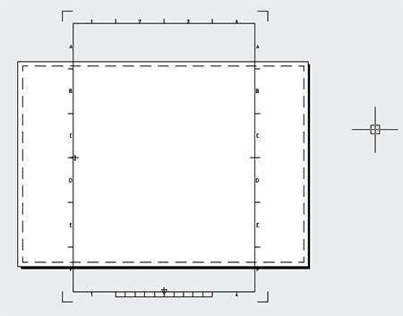
Ce n'est pas très adapté mais nous allons y remédier. Rendez-vous dans l'onglet Sortie du ruban et cliquez sur
dans le groupe de fonctions Traceur. Dans la boîte de dialogue qui s'affiche, vérifiez que la présentation "A4" est sélectionnée et cliquez sur Modifier.
Dans la zone Orientation du dessin, cliquez sur Portrait. Notre feuille sera ainsi positionnée dans la hauteur. Dans la zone Imprimante/traceur, choisissez "DWG To PDF.pc3". Lors de l'impression, le fichier de sortie sera un fichier PDF. Indiquez le même format de papier que dans l'illustration ci-dessus. Il ne reste plus qu'à configurer l'aire du tracé afin de centrer notre cadre. Dans la zone Aire du tracé, choisissez dans le menu déroulant, le mode Etendu. Dans le décalage du tracé, cochez l'option Centrer tracé et dans l'échelle du tracé, cochez l'option "A la taille du papier" et validez. Vous pouvez fermer le gestionnaire de mise en page.
Notre cadre de coordonnées s'est parfaitement adapté à la feuille et à l'aire de tracé. L'aire de tracé correspond à la partie visible qui sera imprimée. Cette partie est délimitée par des tirets sur la feuille de la présentation. Vous pouvez insérer le cartouche. Positionnez-le et validez plusieurs fois avec Entrée sans ajouter les paramètres.
Répétez toutes ces opérations en prenant le soin d'attribuer l'orientation et le format correspondant pour chaque présentation. Enregistrez votre gabarit. Vos présentations sont prêtes.
Nous voici arrivée au terme de cette première partie concernant l'espace de présentation. Comme vous avez pu le voir, nous sommes en train de construire un gabarit qui va nous permettre de gagner énormément de temps de préparation. Ce gabarit sera opérationnel et utilisable à l'issue du prochain chapitre. Autant dire qu'il nous reste encore du travail. En avant pour le prochain chapitre. ^^
Nous avons construit, dans le premier chapitre sur l'espace de présentation, toute la structure de nos feuilles. Il nous reste à éditer les styles de cotes, de texte, à voir comment fonctionnent les fenêtres de présentation qui permettent d'afficher le contenu de l'espace objet dans une présentation et de contrôler les couleurs de sortie vers le traceur ou l'imprimante.
À la fin de ce chapitre, votre gabarit sera terminé et vous pourrez vous amuser à le perfectionner comme bon vous semble. Terminons vite ce gabarit ensemble, mais restez tout de même attentif. Ce n'est pas parce que c'est un chapitre que je catégorise comme étant facile qu'il faut relâcher notre attention. ^^
Pour continuer notre gabarit, nous allons avoir besoin de plusieurs calques correspondants chacun à un type de ligne. Nous leur attribuerons également un nom, une couleur, une épaisseur et un paramètre de visibilité pour l'impression.
Les calques étant créés, nous pouvons contrôler la façon dont ils seront exploités à l'impression. Pour vous donner un exemple, vous pouvez dessiner un ou plusieurs objets en rouge et les imprimer en noir sans rien changer. Nous dessinons généralement sur un fond coloré (majoritairement le noir). Il est plus facile d'utiliser des calques de différentes couleurs pour différencier nos objets plus facilement sur ce type de fond. Mais qu'en est-il lors d'une impression ? On ne souhaite peut-être pas que nos plans ressemblent au costume d'Arlequin, non ? :p Mais AutoCAD est bien conçu. Nous pouvons contrôler toutes les couleurs et types de ligne en sortie vers l'imprimante grâce aux styles de tracé.
Commençons par créer nos calques. Je vous rassure, vous n'aurez pas à créer tous les calques à la main. J'ai préparé (encore) un petit fichier spécifique qui va créer les calques dont nous avons besoin automatiquement en une fraction de seconde.
:waw: Un fichier qui crée des calques tout seul, c'est possible ça ?
Tout à fait, on appelle cela une routine AutoLISP. L'AutoLISP est le langage de programmation d'AutoCAD. Il est dérivé du langage LISP qui est un langage impératif (en séquences d'instructions) souvent utilisé dans l'intelligence artificielle. Intégré au logiciel, il permet de créer de nouvelles commandes et/ou d'automatiser certaines tâches afin de nous faire gagner un temps précieux. Je ne m'étendrai pas sur ce langage. Je vais juste vous montrer comment charger ce fichier pour utiliser une nouvelle commande "catuto" qui créera automatiquement tous les calques ci-dessous :
Nom : Construction - Couleur : Blanc - Ligne : Continuous - Epaisseur : 0.25
Nom : Cartouche - Couleur : Blanc - Ligne : Continuous - Epaisseur : 0.25
Nom : Cotation - Couleur : Blanc - Ligne : Continuous - Epaisseur : 0.18
Nom : Caches - Couleur : 40 - Ligne : Cache - Epaisseur : 0.18
Nom : Axes - Couleur : Rouge - Ligne : Axes - Epaisseur : 0.18
Nom : Hachures - Couleur : Cyan - Ligne : Continuous - Epaisseur : 0.18
Nom : Coupe - Couleur : Vert - Ligne : Axes2 - Epaisseur : 0.35
Nom : Environ - Couleur : 253 - Ligne : Continuous - Epaisseur : 0.18
Commencez par télécharger la routine AutoLISP. Une fois téléchargée, décompressez l'archive dans un dossier nommé "AUTOLISP". Voici notre fichier :
.
Pour charger une routine dans AutoCAD, nous pouvons utiliser la commande appload qui ouvre la boîte de dialogue de chargement d'application. Tapez "appload" dans la ligne de commande et validez.
Allez chercher le fichier dans le dossier "AUTOLISP" que vous devez avoir créé, sélectionnez-le et cliquez sur Charger. Vous pouvez fermer la boîte de dialogue. Si tout s'est bien passé, un message vous informe dans la ligne de commande que le fichier s'est bien chargé sans erreur.
Nous pouvons utiliser la nouvelle commande catuto. Tapez cette commande et validez. La routine est alors exécutée en un éclair et si vous vous dirigez vers le gestionnaire des calques, vous trouverez tous les nouveaux calques que nous devions créer.
C'est tout ! Si vous tombez un jour nez à nez sur des routines AutoLISP, vous saurez comment faire pour les charger dans AutoCAD. :) Enregistrez votre gabarit pour garder tous les calques.
Créer un style de tracé
Pour créer un style de tracé, nous devons utiliser l'assistant "Ajouter une table des styles de tracé" présent dans le menu Outil puis Assistants. Choisissez cet assistant et validez. Dans la boîte de dialogue qui s'ouvre, cliquez directement sur Suivant.
Ici, vous pouvez soit commencer avec un fichier de brouillon, soit utiliser une table existante contenant des styles de tracés, soit importer des propriétés d'un traceur ou utiliser un fichier PCP (fichier de configuration partielle du traceur) ou PC2 (fichier de configuration complète du traceur) contenant des paramètres de traçage. Nous commencerons avec un brouillon. Cliquez sur Suivant.
Nous choisirons l'option de la table des styles de tracé qui dépend des couleurs (vu que nous allons justement les gérer). Cliquez sur Suivant.
Donnez un nom à votre table de style et cliquez sur Suivant.
Ne cliquez pas tout de suite sur Terminer. Nous allons d'abord configurer les couleurs qui seront tracées sur le papier en fonction des couleurs affichées à l'écran. Pour faire tout ça, l'éditeur de la table des styles de tracé nous sera d'un grand secours. Cliquez sur le bouton "Editeur de la table des styles de tracé ...".
L'éditeur de la table des styles de tracé va nous permettre de contrôler la couleur des objets à la sortie de l'impression. Nous pouvons affecter une couleur de sortie différente de celle affichée à l'écran mais ce n'est pas tout. Les types de lignes et épaisseurs peuvent être eux aussi modifiés. L'onglet Général vous informe sur la globalité du fichier de style (ici "monstyle.ctb"). Vous avez aussi la possibilité d'y ajouter une description. L'onglet Vue de la table répertorie tous les styles de tracé présents. Chaque style de tracé correspond à une couleur, un type de ligne, une épaisseur, etc. Enfin, les options de l'onglet Vue de la feuille permettent de contrôler les propriétés des objets du dessin à l'impression. C'est celui qui nous intéresse le plus dans ce cas précis. ^^
Observez dans la zone de gauche (Styles de tracé) les 255 couleurs de notre table. Ces couleurs correspondent aux couleurs potentiellement utilisées dans notre espace objet. Vous pouvez modifier la propriété de sortie de chaque couleur grâce aux options de la zone "Propriétés" présentent à droite de cette boîte de dialogue. Chaque couleur possède ses propres propriétés. Vous pouvez donc décider d'attribuer une couleur d'impression différente de celle affichée à l'écran.
Les couleurs qui nous intéressent le plus sont évidemment celles de nos calques. Un numéro est affecté à chaque couleur. Il nous suffit de noter uniquement les numéros des couleurs de nos calques afin d'en modifier leurs propriétés. Les couleurs des calques de notre gabarit sont les suivantes :
La couleur 255 correspondante aux calques 0, cartouche, construction et cotation.
La couleur 1 correspondante au calque des axes.
La couleur 40 correspondante au calque des traits cachés.
La couleur 3 correspondante au calque des traits de coupes.
La couleur 253 correspondante au calque de la géométrie environnante.
La couleur 4 correspondante au calque des hachures.
Nous modifierons les couleurs 40, 3 et 4 de manière à ce qu'elles soient tracées en noir. Commencez par la couleur 40. Sélectionnez-la dans la liste des styles de tracé présente dans la boîte de dialogue puis dans les propriétés, déroulez le menu Utiliser la couleur de l'objet et choisissez "Noir". Répétez l'opération pour les 2 autres couleurs puis cliquez sur Enregistrer et fermer. Désormais, ces couleurs seront toujours imprimées en noir lors du traçage.
Les fenêtres de présentation permettent de créer des clichés (ou des vues) de certaines zones de l'espace objet. Vous pouvez organiser l'emplacement de vos modèles dans l'espace de présentation grâce à ces fenêtres. Il est donc inutile de prévoir à l'avance le lieu exact des objets géométriques pour les présenter dans l'espace papier.
Les fenêtres se créent dans l'espace de présentation en fonction d'un calque (calque 0 ou un calque nommé "fenêtre" par exemple). On pourra choisir de désactiver ce calque suivant notre désir d'afficher ou non le contour de la fenêtre. Avant de commencer, je vais vous faire télécharger un fichier d'exemple déjà tout prêt. Nous pourrons ainsi nous concentrer sur la création de nos fenêtres. Ce fichier d'exemple est une grosse plaque de métal perforée. Tout est déjà présent dans le dessin, vous n'avez plus qu'à créer la présentation. Téléchargez-le maintenant et copier tous les éléments de l'espace objet du fichier dans un nouveau dessin créé à partir de votre gabarit. Voici ce que contient le dessin :
Nous avons donc : une représentation en 3D, une vue de dessus et une vue de face qui correspondent toutes les trois à la même pièce. Il va falloir organiser ces trois vues dans une présentation. Par expérience, je vous conseille d'aller dans l'onglet de présentation A3. Ceci étant fait, je vais vous demander de créer un calque de couleur orange nommé "Fenêtre" avec les paramètres ci-dessous :
N'oubliez pas de cliquer sur la petite imprimante à droite de la boîte de dialogue. Dans cet état (
), le calque sera visible à l'écran, mais exclu à l'impression. Dans la boîte de dialogue, double-cliquez sur le nom du calque pour le définir comme courant puis fermez la fenêtre. ^^
Créer une fenêtre de présentation
Pour afficher le contenu de l'espace objet dans l'espace de présentation, nous devons créer une fenêtre qui contiendra la géométrie de l'espace objet. Tout se trouve dans l'onglet Vue. Dans le groupe de fonctions "Fenêtres de présentation", cliquez sur
.
A partir de cette boîte de dialogue, vous avez la possibilité de configurer toutes sortes de vues 2D et 3D. Des dispositions de vues standard sont présentes à gauche dans la liste des fenêtres standard. Cette liste vous offre des configurations de fenêtres déjà toutes prêtes. Pour notre première fenêtre, nous laisserons les paramètres par défaut. Cliquez sur "Ok". Dans l'espace de présentation, cliquez dans la feuille pour accrocher le premier point du cadre de la fenêtre, déplacez le curseur de la souris et cliquez une seconde fois pour créer la fenêtre.
Notre fenêtre étant créée, il va falloir l'ajuster sur une vue et lui donner une échelle de présentation. L'échelle de présentation correspond à l'échelle dans laquelle seront représentés les éléments sur le papier. L'idée ici est d'affecter une échelle à la fenêtre, puis d'ajuster le cadre autour d'une vue. Pour donner une échelle à la fenêtre, nous allons la sélectionner puis nous rendre dans le bas de l'interface du logiciel.
La liste des échelles est accessible via le bouton
. Choisissez une échelle de 1/8.
Miracle, les objets contenus dans la fenêtre ont changés de dimensions. Par contre, il est possible que pour certains ou certaines d'entre vous il y ai un petit problème de centrage. Comme c'est le cas ci-dessous.
Rassurez-vous, ce n'est rien de bien méchant. Nous allons remédier à tout ça, mais il va falloir être bien attentif à ce que je vais vous dire. Sachez que nous pouvons accéder à notre espace objet à partir des espaces de présentation. En fait, le cadre de notre fenêtre correspond à l'espace objet. Chaque fenêtre créée affichera un espace objet.
Mais alors quand tu disais qu'on ne pouvait avoir qu'un seul espace objet, tu nous as menti ? :(
Non, jamais de la vie. Il n'y a qu'un seul espace objet par dessin et on ne peut pas en créer d'autre. Il est juste représenté autant de fois qu'il y a de fenêtre dans la présentation, mais c'est toujours le même espace objet. Pour y accéder, nous allons double cliquer à l'intérieur de la fenêtre mais attention, il est important de bien afficher la totalité de votre feuille de manière à pouvoir cliquer en dehors de la fenêtre. Dans le cas contraire, vous risquer d'avoir une surprise et ne plus pouvoir sortir de l'espace objet. Heureusement, il y a un moyen, mais je vous l'expliquerai plus tard. Concentrez-vous sur ce que je vous dis maintenant.
Afficher votre feuille en totalité de façon à voir le cartouche et avoir un espace suffisant autour. Double cliquez à l'intérieur de la fenêtre. Faite attention de ne pas zoomer avec la molette de la souris une fois arriver à l'intérieur de votre espace objet. Dans le cas contraire, il sera nécessaire de remettre la fenêtre à l'échelle. Une fois dans votre espace objet, le cadre de la fenêtre se met en surbrillance.
Effectuez un panoramique en cliquant sur la molette de la souris et placer la vue de dessus dans le coin inférieur droit de la fenêtre puis double cliquez à l'extérieur de la fenêtre. Sélectionnez le cadre et ajustez-le à la vue. Voici ce que vous devez obtenir :
Faites la même chose avec la vue de face. Créez une fenêtre, affectez-lui une échelle de 1/8 et ajustez le cadre. Placez cette deuxième fenêtre au-dessus de la première. Une fois terminé, nous allons créer une autre fenêtre un peu particulière. Cette fois-ci nous allons la créer à partir d'autres objets. Cela va nous permettre de donner n'importe quelle forme à nos fenêtres. Nous pourrons ainsi créer des fenêtres rondes, triangulaires et j'en passe. :)
Créer une fenêtre de présentation à partir d'objets géométriques
L'intérêt de créer ce genre de fenêtre est que l'on va pouvoir afficher leur contour. Bon, nous pouvons également afficher les cadres rectangulaires, mais c'est moins joli qu'un contour arrondi par exemple. Si vous avez bien suivi, vous devez avoir 2 fenêtres de présentation. Il nous reste donc à créer celle contenant la représentation de la pièce en 3D. Passez sous le calque "Cartouche". Nous allons cette fois-ci nous servir de l'outil
qui se situe dans le groupe de fonctions Fenêtres de présentation de l'onglet Vue. Cet outil permet de créer des fenêtres de présentation à partir d'objets fermés du type polyligne, cercle, ellipse, etc. Je vais vous demander de créer un quart de cercle en partant du coin supérieur gauche du cadre de coordonnées. Pensez à fermer les lignes avec le demi-cercle sinon rien ne sera créé.
Déroulez le menu Créer avec une forme polygonale et choisissez Créer à partir de l'objet.
Selectionnez votre forme. Ce n'est pas plus compliqué que ça. Cette foic-ci votre fenêtre a le contour noir car nous sommes sous le calque "Cartouche". Il sera donc visible à l'impression. Réorganisez la fenêtre de manière à ce que la vue en 3D soit centrée à l'intérieur.
Bonne nouvelle, nous arrivons au terme de ce chapitre. Il ne reste plus que cette étape pour finaliser notre gabarit de dessin. Cependant, je vais vous faire revenir sur la façon de configurer les styles de cotes. Mais cette fois-ci avec une méthode différente de la première.
Nous allons sans plus attendre ouvrir la boite de dialogue des styles de cotes. J'espère que vous savez où la trouver ! Bon, au cas où, tapez la commande _dimstyle puis validez avec Entrée.
Maintenant, créez un nouveau style de cote que vous nommerez "Présentation". Rendez-vous dans l'onglet Texte puis donnez au texte une hauteur de 3. Continuez dans l'onglet Ajuster et choisissez l'option Echelle des cotes selon présentation. Vous pouvez valider en appuyant sur le bouton OK. Définissez ce nouveau style de cote comme style courant.
Mais pourquoi on a mis 3 pour la hauteur du texte ?
HaHAAaa ! Pour la simple et unique raison qu'à partir de maintenant nous allons coter tous nos dessins dans l'espace de présentation. :waw: Lorsque nous allons coter un dessin dans l'espace de présentation, la méthode que nous utiliserons permettra à la hauteur du texte de garder la même valeur quel que soit l'échelle utilisée dans la fenêtre. 3 unités de dessin est un bon compromis par rapport au rendu sur le papier. Vous pouvez enregistrer votre gabarit.
Coter un dessin dans une présentation
Comme il faut bien pratiquer un peu, je vais vous faire télécharger ce fichier. Ouvrez-le et rendez-vous dans l'espace de présentation puis sélectionnez la fenêtre de présentation.
Maintenant que votre fenêtre est sélectionnée, rendez-vous en bas de l'interface d'AutoCAD et cliquez sur le cadenas
pour le transformer en
.
Nous allons pouvoir zoomer sans modifier l'échelle de présentation. L'important ici est de bien définir l'échelle de présentation AVANT de coter le dessin. Si vous changez l'échelle une fois toutes les cotes placées, elles ne seront plus de la même taille. Je tenais à vous le faire savoir avant de vous lancer tête baissée dans la cotation. Allez-y, double cliquez dans la fenêtre de présentation et cotez ce dessin comme dans l'image ci-dessous :
Ce n'est pas plus compliqué que cela ! Maintenant double cliquez en dehors de la fenêtre de présentation et sélectionnez-la. Ôtez la protection en cliquant sur le cadenas et affectez une valeur d'échelle à 1/50.
Hé, pourquoi mes cotes ont toutes rapetissées avec le dessin ?
Simplement parce que nous avons placées nos cotes dans l'espace objet. La fenêtre de présentation est une représentation de ce qu'il se trouve dans l'espace objet. Si nous réduisons l'aperçu de cet espace objet (où se trouvent les cotes) via une échelle quelconque, les cotes réduiront aussi. Pour vous en rendre compte, allez voir dans l'espace objet. Vous retrouverez vos cotes telles qu'elles ont été placées à partir de la présentation. ^^
Vous voici avec un gabarit de dessin tout beau tout neuf. Vous pouvez lui ajouter des calques ou l'optimiser à votre guise. ;) Pas de QCM ici. Ce n'est pas vraiment nécessaire pour ce chapitre ! Nous verrons pour le prochain.
Dans cette annexe, vous allez apprendre les principales bases des conventions du dessin industriel. Ne vous attendez pas à apprendre toutes les conventions. Il me faudrait un big tuto entier pour tout expliquer mais je vous ai mis le plus important.
Afin de permettre aux équipes de fabrication une certaine compréhension de la géométrie représentée, on utilise des règles concernant la schématisation des traits formant les dessins dans les plans. En effet, une mauvaise représentation peut avoir de graves conséquences sur la compréhension du plan puis sur le résultat final de la fabrication ! On a donc inventé ce système permettant à une équipe de fabriquer une pièce ou un ensemble de pièces suivant un ou plusieurs plans.
Les traits de construction
Les traits de construction constituent la représentation visible de la construction. Chaque pièce à fabriquer possède généralement une partie visible mais également une partie cachée ! Cette partie visible est donc représentée par des traits continus d'une épaisseur légèrement plus importante que le reste du plan.
Les traits cachés
Les traits cachés représentent la géométrie de construction que nous ne sommes pas sensés voir ! On la dessine avec des traits en pointillés ou en forme de petits tirets discontinus. Ce genre de représentation permet de voir les éléments qui ne peuvent pas être visibles directement au premier plan. Cela simplifie grandement la lecture d'un plan malgré le nombre plus important de traits. Ce type de trait est plus fin que les traits de construction visibles.
Les traits d'axes
Les traits d'axe indiquent le centre d'une pièce ou d'un objet. On les utilise comme indicateur de symétrie pour chaque objet principal. Ce type de trait est schématisé par 1 tiret court puis 1 tiret long alternés allant du point de départ jusqu'à la terminaison de l'axe.
Les traits fantômes
Les traits fantômes sont un peu particuliers. Ils représentent une géométrie environnante qui n'est pas à fabriquer ! On les trouve dans les plans dont la pièce à fabriquer s'emboîte quelque part. Vous aurez donc la pièce à fabriquer dessinée avec des traits de constructions, des traits cachés et des axes et l'environnement de réception de cette pièce dessiné en traits fantômes. Ce type de ligne se dessine alternativement avec 1 tiret long puis 2 tirets courts.
Les traits de coupes
Les traits de coupes permettent d'indiquer la coupe d'une pièce. On leur associe des flèches pour montrer le sens dans lequel sera représentée la vue. On utilise ce type de ligne lorsque l'on souhaite dessiner la projection d'un objet comme s'il avait été coupé en deux. Ceci afin de voir des détails importants comme par exemple une épaisseur.
Les coupes permettent de représenter une pièce "tranchée". On les utilise pour faciliter la lecture des formes d'un élément qui sont situées à l'endroit de la pièce sectionnée. Pour créer une coupe, on indique la tranche avec un trait discontinu sur la pièce. Il faut également spécifier son orientation par 2 flèches situées de part et d'autre du trait de coupe. Leur sens indique l'orientation du plan de coupe. Cliquez sur ce petit exemple représentant la vue d'une pièce :
Afin d'éviter de surcharger les vues représentant une pièce, on utilise les sections pour afficher les formes de la pièce sectionnée. Il existe 2 types de sections utilisés à cette fin :
Les sections sorties
Les sections rabattues
Je vous montre ici les détails des sections car il en existe seulement 2 sortes contrairement aux coupes et parce que je les trouve très pratiques, surtout les sections rabattues qui font gagner beaucoup d'espace concernant la représentation de la pièce en elle-même.
La représentation des dessins industriels est soumise à certaines règles de normalisation par l'intermédiaire d'éléments associés. C'est-à-dire que pour concevoir un dessin standard, nous allons devoir utiliser des outils et supports normalisés comme par exemple, un format spécifique de papier sur lequel on apposera des schémas et des annotations en suivant les règles de représentation.
On distingue en dessin industriel 5 formats standard de supports papier. Ces formats sont définis par une convention de nommage spécifique :
Le format A4.
Le format A3.
Le format A2.
Le format A1.
Le format A0.
Les plans dessinés sur des grands formats de papier (généralement supérieur au A4) sont imprimés à l'aide d'un traceur. Un traceur est tout simplement une imprimante à jet d'encre ou laser qui permet d'imprimer sur ces formats spécifiques. Bien souvent, on charge un gros rouleau de papier derrière le traceur et une fois l'impression terminée, il se charge tout seul de découper la feuille au bon format.
Format A4
C'est un format de papier que l'on connaît tous. Il correspond à nos bonnes vieilles feuilles de papier à lettres classique. Voici ses dimensions en millimètre : 210 x 297.
Le pliage
Beaucoup de dessinateurs l'oublient ou ne l'ont jamais appris (à vrai dire, quasiment tous !) mais il existe même des règles concernant le pliage des plans. Cela vous étonne certainement mais il n'y a rien de plus désagréable qu'un plan mal plié. Normalement, les plans devraient être roulés, mais étant donné l'encombrement que cela occasionne, il est préférable de les plier. Surtout si vous en avez une cinquantaine à envoyer par courrier ! :-°
Concernant le format A4, sachez qu'il ne se plie pas. Étant donné ses dimensions, il n'est pas nécessaire de le plier. Par contre, les formats supérieurs le seront quant à eux.
Format A3
Ce format correspond au format supérieur au précédent. Ses dimensions (toujours en millimètre) sont : 420 x 297.
Le pliage
Lors du pliage d'un plan, il faut garder à l'esprit que le cartouche doit toujours rester visible !
Heu, ne serait-ce pas LA cartouche ? Et puis que veux-tu dire par cartouche ?
Non, ce n'est pas une cartouche de fusil ! Le cartouche est en fait un cadre qui comprend toutes les informations concernant le dessin et la société qui l'a conçu. On y trouve généralement la date de conception du plan, un logo de l'entreprise, le numéro du plan, ses éventuelles révisions, le nom du dessinateur, etc. Le cartouche sert à nous renseigner sur la nature et le contenu du plan.
La ligne rouge symbolise le premier pli à effectuer en sachant que l'on doit voir le cartouche une fois le pliage terminé. Bon, ici c'est facile, il n'y a qu'un seul pli.
Format A2
Encore un format supérieur au précédent. Ses dimensions sont : 420 x 594.
Le pliage
Ici, cela se complique un peu ! Nous avons cette fois-ci deux plis à effectuer. Le premier pli s'effectue dans le sens de la largeur comme sur l'exemple ci-dessus.
Format A1
Ce format commence à devenir intéressant. Ses dimensions sont : 841 x 594.
Le pliage
Faites attention car cette fois-ci le premier pli s'effectue dans le sens de la longueur. Repliez ensuite dans le sens de la largeur comme si vous souhaitiez cacher le cartouche. Repliez ensuite un côté dans le sens de la largeur et pliez le dernier côté. Regardez bien la position du cartouche pour vous repérer.
Format A0
Le format le plus grand mesure : 841 x 1189.
Le pliage
Ce pliage est le plus compliqué de tous ! Le premier pli s'effectue dans le sens de la largeur mais en cachant le cartouche ! Ensuite, prenez un côté, pliez-le dans le sens de la longueur et faites la même chose avec l'autre. Pliez en 2 dans le sens de la largeur en gardant le cartouche visible puis repliez encore une fois dans le même sens.
Le cartouche est un cadre que l'on dessine en bas à droite d'un plan pour indiquer plusieurs informations qui permettront d'exploiter au mieux les éléments du dessin. On y indique au minimum :
Le nom de la société ou un logo.
Le titre du dessin.
La date.
Le format de papier.
L'échelle.
Le numéro du plan.
L'indice de révision (modifications).
Le cartouche doit être réduit au minimum et ne doit pas dépasser 190 millimètres en largeur et 277 millimètres en hauteur.
Il est courant de trouver au-dessus du cartouche une nomenclature des pièces du dessin (tableau). Cette nomenclature indique principalement la nature des matériaux, leur emplacement et leur quantité. Lorsque la nomenclature atteint la hauteur limite des 277 millimètres, on décale la suite vers la gauche du plan. Ce tableau est lu de bas en haut et commence au-dessus du cartouche puis continue vers la gauche en cas de dépassement des 277 millimètres.
Avant que vous ne me posiez la question, les cotes de 277 et 190 millimètres n'ont pas été définies au hasard ! Lorsqu'un plan est plié, il représente une feuille au format A4 (210x297) quel que soit le format du plan plié. On compte une marge de 10 millimètres sur tout le tour d'un plan. La hauteur d'un format A4 est de 297 millimètres auxquels on enlève 10 mm tout le tour. C'est la raison pour laquelle on a défini les dimensions de 297-(10+10) = 277 pour la hauteur et 210-(10+10) = 190 millimètres pour la largeur afin être sûrs de ne pas couper le cartouche lors du pliage.
Les coordonnées
Le cadre des coordonnées permet la localisation rapide d'un détail dans le dessin. Même s'il est peu utilisé en pratique, il se révèle utile dans les grands formats de papier. Ce cadre est composé de lettres et de chiffres permettant un repérage identique à celui de la bataille navale ! :)
Voici un exemple de cadre de coordonnées :
Je ne vous ai pas montré grand chose ici mais rassurez-vous, vous en savez suffisament pour faire vos propres plans convenablement. ;)
Dans cette annexe sont regroupés tous les outils que l'on a vus dans la première partie du tutoriel. C'est un récapitulatif sous forme de tableau descriptif qui rappelle le nom, l'icône et la fonction de chaque outil. Comme je suis sympa, j'y ai ajouté la commande à taper dans la ligne de commande afin d'accéder à l'outil qui lui est associé. ;)
Vous pouvez, si vous le souhaitez, imprimer cette annexe afin de garder les outils et commandes associées sous la main. Bonne lecture.
Ligne : Sert à tracer des lignes les unes à la suite des autres. Chaque ligne est un objet unique.
polylign
Polyligne : Trace des lignes les unes à la suite des autres. Toutes les lignes tracées forment un seul et même objet.
cercle
Cercle : Trace des cercles par rapport à un rayon ou un diamètre.
ellipse
Ellipse : Trace des ellipses par rapport à deux demi-longueurs.
arc
Arc : Trace des arcs de cercle par rapport à un centre ou plusieurs points.
rectang
Rectangle : Permet de tracer des rectangles fermés. Toutes les lignes du rectangle forment un objet unique.
polygone
Polygone : Trace des polygones par rapport à plusieurs paramètres (Nb d'arrêtes, longueur...). Toutes les lignes du polygone forment un objet unique.
spline
Spline : Permet de tracer des courbes par rapport à des points. Toutes les courbes tracées forment un objet unique.
anneau
Anneau : Trace deux cercles concentriques de rayons différents et remplit la surface périmétrique entre les deux cercles pour former un anneau ! :-°
nuagerev
Nuage de révision : Crée un nuage de révision. Sert à entourer une zone modifiée dans un plan d'étude pour la situer. Généralement utilisé dans l'industrie pour indiquer des modifications sur des plans.
helice
Hélice : Trace des spirales en 2D ou des ressorts en 3D.
hachures
Hachure : Permet de créer des hachures en fonction d'un motif et d'une zone prédéfinie.
gradient
Gradient : Remplit une zone prédéfinie avec un dégradé de couleurs ou une couleur unique.
Linéaire : Applique une cote horizontale ou verticale à un élément.
cotali
Alignée : Applique une cote en suivant l'alignement d'un objet.
cotang
Angulaire : Permet de coter un angle entre 2 objets linéaires.
arccot
Longueur d'arc : Permet de coter la longueur d'un segment d'arc.
cotrayon
Rayon : Permet de coter le rayon d'un arc ou d'un cercle.
cotdia
Diamètre : Permet d'indiquer le diamètre d'un arc ou d'un cercle.
cotcont
Continuer : Permet de continuer une cotation linéaire ou alignée en fonction d'une cote de base.
cotlign
Ligne de base : Permet de coter un objet en fonction de l'origine d'une ligne de cote linéaire ou aligné.
cotord
Superposée : Effectue une cotation superposée à partir d'un point d'origine. Cette cotation est un peu identique à la cotation en ligne de base, mais elle est également plus lisible. Il faut spécifier néanmoins une origine.
coteraccourcie
Cote raccourcie : Permet de créer une cote raccourcie pour un cercle ou un arc lorsque sa dimension dépasse le champ de vision d'une présentation.
Pour les contraintes géométriques, la commande à taper est la même pour toutes. Une fois la commande tapée, il faut sélectionner la contrainte de votre choix dans le menu contextuel qui s'affiche près du curseur. ;)
Icône
Commande à taper
Description
contraintegeom
Horizontale : Permet de fixer une distance horizontale entre 2 points.
contraintegeom
Verticale : Permet de fixer une distance verticale entre 2 points.
contraintegeom
Perpendiculaire : Contraint 2 lignes à être perpendiculaires l'une par rapport à l'autre.
contraintegeom
Parallèle : Contraint 2 lignes à être parallèles l'une par rapport à l'autre.
contraintegeom
Tangente : Contraint 2 courbes à un point de tangence.
contraintegeom
Symétrique : Force 2 objets à se placer symétriquement l'un par rapport à l'autre.
contraintegeom
Fixe : Permet de fixer un point ou un objet à un emplacement dans le dessin.
contraintegeom
Egal : Force 2 lignes à avoir une longueur identique ou 2 arcs ou cercles au même rayon.
contraintegeom
Concentrique : Permet de placer 2 cercles ou arcs sur le même centre.
contraintegeom
Doux : Permet de contraindre une spline à se positionner dans la continuité d'un objet.
contraintegeom
Colinéaire : Permet de contraindre 2 lignes sur le même axe l'une par rapport à l'autre.
contraintegeom
Coïncidence : Permet de faire coïncider un point par rapport à un autre point ou objet.
La commande qui suit ne peut être tapée que dans l'éditeur de blocs. Dans le cas où vous souhaiteriez essayer de la taper dans l'espace objet, AutoCAD vous rappellera gentiment que cette commande n'est disponible que pour l'éditeur de blocs. :)
Icône
Commande à taper
Description
parambloc
Permet d'ajouter un paramètre d'alignement à un bloc.
parambloc
Permet d'ajouter un point de base à un bloc.
parambloc
Permet d'ajouter un paramètre de consultation à un bloc.
parambloc
Permet d'ajouter un paramètre d'inversion à un bloc.
parambloc
Permet d'ajouter un paramètre linéaire à un bloc.
parambloc
Permet d'ajouter un paramètre de point à un bloc.
parambloc
Permet d'ajouter un paramètre polaire à un bloc.
parambloc
Permet d'ajouter un paramètre de rotation à un bloc.
parambloc
Permet d'ajouter un paramètre de visibilité à un bloc.
parambloc
Permet d'ajouter un paramètre XY à un bloc (comme un paramètre linéaire sur les 2 axes).
Ajoute une action de consultation à un bloc. Permet d'attribuer ou de consulter les valeurs de paramètres de bloc.
outilactionbloc
Ajoute une action de déplacement à un bloc ou un élément de bloc.
outilactionbloc
Ajoute une action de mise à l'échelle à un bloc ou un élément de bloc.
outilactionbloc
Ajoute une action d'étirement linéaire à un bloc ou un élément de bloc.
outilactionbloc
Ajoute une action d'inversement à un bloc ou un élément de bloc.
outilactionbloc
Ajoute une action de réseau d'objets à un bloc ou un élément de bloc.
outilactionbloc
Ajoute une action de rotation à un bloc ou un élément de bloc.
outilactionbloc
Ajoute une action d'étirement polaire (aligné) à un bloc ou un élément de bloc.
Voici ce récap' sur les outils 2D terminé. J'espère qu'il vous servira d'aide mémoire le temps que vous connaissiez tous ces outils ainsi que leur commande par cœur ! :D
Ce big-tuto n'est pas encore terminé ! Les nouveaux chapitres arriveront progressivement, soyez patient ! ;)


{kind=link}
{kind=link}
{kind=link}
{kind=link}
{kind=link}
{kind=link}
{kind=link}
{kind=link}
{kind=link}
{kind=link}
{kind=link}
{kind=link}
{kind=link}
{kind=link}